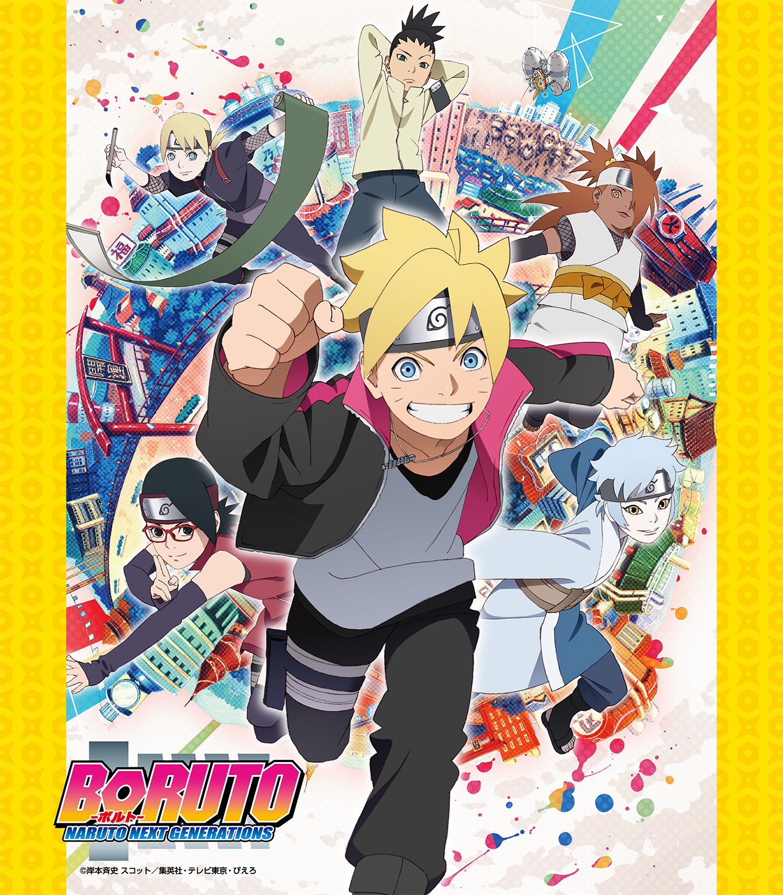

| BORUTO―ボルト― ―NARUTO NEXT GENERATIONS― NOVEL 2 影からの呼び声！ | |
| 岸本斉史 & 池本幹雄 & 小太刀右京 & 重信康 | |
この本は縦書きでレイアウトされています。
また、ご覧になる機種により、表示の差が認められることがあります。


CONTENTS
この作品はフィクションです。
実在の人物・団体・事件などにはいっさい関係ありません。
『まず重要なのは、心だ。人の心の闇に、しかるべき負荷をかけること......』
冷酷な声が、薄暗い研究室の中に響く。
声の主は、包帯で額と右目を覆った老境の男。
『これにより、チャクラは負のエネルギーへと変化する。弱き心は言わば火種、あるいはエサだ。そうして収集された負のチャクラを集積し、一定量に達した時......』
男が広げた巻物には、いくつもの複雑な記号や文字に囲まれ、奇妙な紋様が描かれている。どこか、花のようにも見える紋様。
『この〝牛頭天王〟によって、異界の扉は開かれよう。そして降臨せし破壊の獣......それこそが〝鵺〟』
『鵺......！』
もう一人の声が、おごそかにその名を繰り返す。
『理論はようやく成った。あとは、ワシに代わってお前が完成させよ......信楽。この里において、我らが為すべき大義のために......！』
か細い蠟燭の灯りに照らされ、幽鬼のごとき顔が浮かび上がった。
『心得ました、しかと。――ダンゾウ様』
「......できた！」
放課後、木ノ葉隠れの里にあるハンバーガーショップの窓際カウンター席。
さっきから真剣に紙ナプキンに何かを書き込んでいたうずまきボルトが、自信満々といった様子で完成したそれを広げてみせた。
「なんだよ、こりゃ......」
正面に座る奈良シカダイの、呆れたリアクションも無理はない。
紙ナプキンに描かれていたのは、まさに子供の落書きそのものといった要領を得ない絵だ。かろうじて何か、長い尻尾を持つ大型の猛獣のようなシルエットに見えなくもないというレベルだ。
今は二人だけだが、もしここにクラスメートの山中いのじんがいれば、さぞかし表現力豊かな毒舌でボロクソにけなしてくれるだろう。
「わかんねーかな？ とにかく、なんつーか獣というか蛇というか、両方が混ざったような......こんな感じの影が見えたんだってばさ、あの時のシノ先生の後ろに！」
「影、ねぇ......」
あの日、ボルト言うところの謎めいた影に取り憑かれて暴走した油女シノに、ボルトとシカダイ、そしてミツキの三人が襲われてから、数日が経過している。
幸い、結果的には犠牲者が出ることもなく、ボルトたちは担任教師の強さと頼もしさを実感し、シノもまた教師という自身の選んだ道へのモチベーションを再確認するという〝雨降って地固まる〟な結果に落ち着いた。
だが、こうなるとどうしても気になるのはあの影の正体だ。
「なあシカダイ。シノ先生はあの後、操られるみたいな感じ......って言ってたよな」
「ああ」
「ってことはさ、操ったヤツがいる、ってことになるよな？」
上忍クラス、あるいはそれ以上の実力を持つシノの精神すら惑わせる存在。
そんなものが、この里に潜んでいる......それが事実なら、ボルトら子供の目から見ても明らかに異様な、恐るべき脅威といえた。
「だけどよ、それなら操られたほうの記憶が残っているのも不自然だぜ。だいたい、操るなら何か目的があるはずだろ？」
「目的......？」
「デンキやメタルといい、アカデミーや街中で暴れてた連中といい......おかしくなってからの行動は全員バラバラで、一貫した目的のために操られてるって感じには到底思えねーぜ？」
確かに、シカダイの言う通りだった。
いずれも日頃心の中に溜め込んでいたストレスを爆発させ、解消するために無茶な行動に出ていると言ったほうがしっくりくる。誰かに制御されているようには見えなかった。
「となると、精神に作用する伝染病とかのほうを疑いたくなるが......」
シカダイの利発な視線が、きょとんとしているボルトの瞳をちらりと見た。
空の色のような、蒼い瞳。
「だとすると、お前にだけ見えるってのも何か......腑に落ちねぇんだよなぁ」
なぜ、あの影はボルトにだけ見えるのか。そこがわからない。
しばし、難しい顔で考え込む二人。
あの後シノには、当然というべきか『この件の対処は自分たち大人に任せてくれ』と強く言われてしまった。
そうなると、どうしても面白くないのがボルトだ。
シノがああ言った以上、里を束ねる七代目火影......父ナルトの耳に一連の事件は伝わり、対策の指揮を執るということにもなるかもしれない。
（あの父ちゃんが......それは、ちょっと面白くねーんだよな......）
ボルトにとって、ナルトは家庭を優先してくれない父親だ。
もちろん、これ以上犠牲者が出る前に事件が解決するに越したことはない。だが、その立役者があの父であるということに対して、どうしても反発と負けん気を抱いてしまう。
対処に追われた父の仕事が増え、今までにも増して家に帰ってこなくなるのなら、なおさらだ。自分は我慢できても、妹のヒマワリは悲しむだろう。
（どうにかして......オレたちで先にこの事件を解決するって、できねーかな......？）
窓の外、流れる午後の雲をぼんやりと眺めながら、ボルトは心の中でそうつぶやいた。
＊ ＊ ＊
一方......ハンバーガーショップの外では。
仲良く連れ立って街を歩く、忍者学校の女生徒三人の姿があった。うちはサラダ、筧スミレ、そして秋道チョウチョウである。
「ったく......いきなり替わってくれだなんて、ボルトたちのせいで時間のムダしちゃったじゃない」
いつもクールな表情を、不満のそれに変えているサラダ。
彼女たちは半ば押しつけられる形になった掃除当番を、つい先ほど終わらせた帰りだ。
「で......でも、何か急用があったのかもしれないし？」
優しい言葉でとりなすスミレだが、サラダの眼鏡がギラリと光った。
「あのね委員長、騙されちゃダメ。あいつらのことだから絶対、くだらない用事に決まってるってば」
「は、はわわ......そうなのかな」
サラダがもし、そのボルトとシカダイが、さっき通り過ぎたハンバーガーショップ内にいると知ったら、ただでは済まさなかっただろう。
「まぁダメンズなんてどーでもいいし。それよりスイーツ、スイーツ行くわよぉ！ 世界中のスイーツがあちしらを待ってんのよ、おーッ！」
一人で拳を掲げ、ぽっちゃりボディでありながら身軽な小走りで先頭を行くチョウチョウを見て、二人は顔を見合わせ苦笑いをした。
元々、サラダとチョウチョウはもっと小さい頃からウマが合い仲が良かったが、このクラスになってからというものスミレもそこに加わることが少なくない。
三者三様まったくタイプの違う三人だが、友情とは不思議なものである。
そうして今日も、皆でチョウチョウ推薦のスイーツカフェに繰り出そうとした......まさにその時。
「.........？」
「委員長、どうかした？」
ふと、一人で立ち止まり、不安そうな表情で後ろを振り返るスミレの様子にサラダが気づいた。
「う......うん、今、なんだか視線を感じて」
「はぁ？ 誰もいないじゃん」
そう答えたチョウチョウだけでなく、知覚力に優れたサラダにも特におかしい気配は感じられない。
「そ、そうだね......ごめん」
早くスイーツ屋に行きたくて仕方がないといった様子のチョウチョウに申し訳なく思い、そっちに顔を戻したスミレだったが。
その時......まさにそのチョウチョウの背後に、彼女は見た。
異様な『影』を。
「きゃ......きゃああああ―――っっ!?」
うららかな春の日差しの中、絹を裂くようなスミレの悲鳴が響き渡った。
＊ ＊ ＊
奇妙な噂がアカデミー忍術科を駆け巡ったのは、それから数日後のことだった。
噂の発生源は、チョウチョウだ。
今日の休み時間もまた、憂いの表情で机に突っ伏している。男女対抗忍術合戦で起きた崩落事件以来、青空教室はまだ継続中だ。
「はぁぁ......ほら見てよ、あちし、明らかにやつれてるっしょ？」
「え？ そ、そう......かな......？」
いつも通りのたぷたぷしたほっぺたを見せられ、伊豆野わさびは思わず素で訊き返しそうになったが、当人にしかわからない微妙な違いがあるのかもしれない。
「あれから、毎日だもんね......」
机の横には、心配顔のスミレ。
「え!? チョウチョウを追っかけてるストーカー、まだ続いてるの!?」
ただでさえいつも泣きそうな顔を、さらにビクッと怯えさせる雀乃なみだ。
そう、噂とはストーカー騒ぎだった。
あの日、スミレが見た怪しげな人影......以来それが登下校中と言わず休み時間と言わず、ことあるごとにチョウチョウをつかず離れずつけ回しているというのだ。
「うん、ここのところ毎日。視線は感じるのに、見つけられないんだ」
悔しげに指を嚙むサラダ。
彼女やスミレもその存在を感じている以上、チョウチョウの思い込みというわけでもないようだ。
「こんなのが続いたらぁ、不安で食べ物も喉を通らないってのぉ......もぎゅ、もぎゅ」
「............」
じゃあ高速で減ってゆくそのポテチはなんなのか、と改めて突っ込みを入れる女子はこの場にはいなかった。チョウチョウのマイペースはある意味、頼もしいとすらいえる。
「せ、先生には相談したの、委員長？」
「私はそうしたほうがいいんじゃないかって言ったんだけど......」
ミツキの歓迎会で起きた失敗の直後は落ち込んでいたシノも、何があったのか今は見違えるように落ち着きと頼もしさを取り戻している。彼ならあっさりと解決してくれそうだったが、チョウチョウはぶんぶんと首を振った。
「そんなんじゃ、さんざん悩まされたあちしの腹の虫がおさまらないっての！ あー、ストーカーってばネチネチ納豆みたいに粘着してきてほんとイヤ！ 絶対あちしの手で取っ捕まえてやるんだからぁ！」
ふんふんと鼻息も荒く、景気づけにポテチの残りを一気に流し込むチョウチョウなのだった。
「ねぇ、あれ、またあの事件かな？」
「いや、さすがになんでもかんでもってワケじゃねぇだろ......ただのめんどくせーストーカー騒ぎだろうよ」
そんな女子たちのやり取りを横目に、小声で会話するミツキとシカダイ。
（だと、いいんだけどな......）
だがボルトは一人、何やら思案顔で押し黙っていた。
＊ ＊ ＊
アカデミーの正門を出てすぐのところには、二十四時間営業の便利なよろず屋がある。雷車などと同じく、木ノ葉隠れの里の近代化を象徴する発展の産物だ。
軽快な音を鳴らして自動ドアが開くと、さらに軽快なステップでチョウチョウが入店してきた。目当ては言うまでもなく、食べ物だ。
「あちしとしたことがポテチを切らしちゃうなんて......これもストーカー野郎に心を乱されちゃってるからだわぁ」
「喉も通らないんじゃなかったっけ......？」
「あ、あはは......」
苦笑いのサラダとスミレを尻目に、お菓子コーナーを鼻歌混じりで物色するチョウチョウの視線が、棚の隅に置かれたとあるパッケージで止まった。
「むむ？ むむむ......！」
そこには『よもぎきな粉＆あんこ味』なる、いささか攻め過ぎた文言が躍っていた。
「......あンまッ!!」
数分後、路地裏。
投げ上げたポテチ一枚を器用に口でキャッチしたチョウチョウの口から、聞いているだけで渋いお茶が欲しくなるような叫び声が飛び出した。
「なんでそんなの買うかなぁ......？ 明らかに外れでしょ」
幼い頃からチョウチョウの人となりをよく知っているサラダも、これだけは理解できないとばかりに頰を引きつらせている。
「ちっちっち。だってサラダぁ、こいつは自分が外れだと自覚してても新商品として棚に並び、勝負に出るって道を選んだ勇気あるポテチなのよぉ？ いくら売れ残ってスルーされて、棚の隅にひっそりと隠れてもなお......！」
「は、はわわ......？」
ぐっと拳を握って何やら力説する友人の姿に、サラダもスミレもどうリアクションしていいやらわからない。どうやらチョウチョウには、何か凄い世界が見えているらしい。
「だったらあちしは、それを正々堂々受けて立たなきゃじゃん？ こうやってッ......っくぅぅぅ、あぁんまッッ!!」
「そ......そだね......頑張れ」
「ね、ねぇ、ところでこんなひとけのない場所通って大丈夫かな......？ また、あのストーカーが出てくるんじゃ？」
薄暗い路地裏を見回し不安そうなスミレに、だがチョウチョウはニヤリと頼もしい笑みを見せた。
「ふふん、それこそあちしの狙い通りよ。ネチネチ系のヤツってこういう場所を選んで現れるんだから......」
「っ！」
言うが早いか、サラダが真っ先にその気配に気づいた。
サラダの反応を見て状況を理解するや否や、チョウチョウは振り向きざまにとっておきの術を繰り出す。
「来たわね！ 部分倍化の術ぅ!!」
褐色の掌だけが、まるで巨人のようなサイズに巨大化する。父チョウジから受け継いだ、秋道一族の秘伝忍術だ。
それはまるで超特大サイズのハエたたきのごとく、背後に現れた気配を捕らえ、壁に叩きつけていた。
「......うげぇぇぇぇぇっっ!?」
カエルが潰れたような悲鳴が、路地裏に盛大に響き渡った。
「おい、なんだ今の声!?」
「こっちからみたいだぞ、ボルト！」
偶然、その悲鳴を聞きつけたボルトとシカダイは、走り込んだ路地裏でとんでもない光景を見た。
「うぐぐ......ぐえぇ」
なんと、やせた長髪の気弱そうな少年が、チョウチョウの部分倍化させた巨大な掌で体ごと握られ、今にも潰されそうになっているではないか。
「あいつ、あんな気弱そうなヤツに何してんだ!?」
「まさか食いもん買う金欲しさにカツアゲか!? チョウチョウのヤツ、そこまで人としての尊厳を捨てちまったのかよ!? ......おい、やめろってばさ！」
駆け寄るボルトの前に慌てて割って入ったのは、スミレとサラダだ。
「ち、違うのボルトくん、これは......！」
「あーもー、めんどくさい！ いいから落ち着いて話を聞きなさい、あんたたち！」
＊ ＊ ＊
「なるほどねぇ......こいつが噂のストーカーってわけか」
しばしの混乱の後。
解放された少年を地面に正座させ、ボルトたちも交えた五人がその周囲を囲んでいる。長髪の少年は一言も喋らず、押し黙っているばかりだ。
「そうよぉ、あちしがどれだけ怖い目に遭ったことか......ポテチも喉を通んないありさまで......」
「いや、それはもういい。で、こいつは一体どこの誰なんだ？」
めんどくせぇ場所に居合わせてしまったという顔のシカダイ。
うつむいた顔を覗き込んだチョウチョウが、あっと何かに気づいた声をあげた。
「あ！ そういやアンタって......！」
「知ってんのか？」
どこからともなくノートを取り出し、ぱらぱらとめくるチョウチョウ。
「あった！ あちしのイケメンメモによると、隣のクラスの隠蓑マギレってヤツよ。イケメンが少ないアカデミーの中じゃあ、まあまあ上位に食い込む顔だから一応押さえといたのよねぇ〜」
妙な方向のマメぶりを発揮するチョウチョウ。確かに、言われてみればなかなか端正な細面をしている。オドオドした態度でずいぶん損をしているが。
「なあボルト、まさかアイツ......」
小声で耳打ちするシカダイだったが、ボルトは首を振る。
「いや、さっきから目を凝らしてるけど何も見えねぇ。こいつからは、あのイヤな影みたいなものは感じられねぇってばさ」
「じゃあ、やっぱり単なるストーカー騒ぎか......」
だからといって、放っておくわけにはいかないよな......と内心でため息をつくボルト。第一、このまま放置すればそれこそチョウチョウが再びマギレを締め上げかねない。
「おい、なんでこんなことしたんだ、お前？」
座り込んで顔の高さを合わせ質問するが、マギレは沈黙で応えるばかりだ。
「お前ほんとに、チョウチョウのストーカーなのか？」
「............」
「だんまりかよ。人に迷惑かけたんだから、黙ってないでなんとか言えってばさ！」
「しっかしお前も、よりによってチョウチョウにつきまとうとか物好きだなぁ......」
どこか感心したように口にするシカダイ。面倒を嫌う自分の父親がどうしてあんな気の強い母親とくっついたのかという、いつも疑問に思っている事実がふと連想された。
「ま、イケてるあちしをストーキングしたくなるキモチは痛いほどわかるけどぉ......ごめんね、あちしとあんたじゃマカロンと納豆、全然釣り合わな......」
「ち......ちっがぁぁぁぁうっっっ!!」
路地裏に響き渡る怒りの絶叫。
それまでずっと押し黙っていたマギレが、とうとう我慢の限界とばかりに立ち上がって叫んだのだ。
「何勝手に勘違いしてんだよ！ ボクがずっと見てたのは......スミレさんだぁぁぁッッ!!」
「え!?」
水を打ったような沈黙。
しまった、という様子でマギレがハッとするのと、スミレの顔が真っ赤になるのは同時だった。
「え？ え？ は......はわわわわっっ!?」
盛大におさげを振り乱してパニクる委員長。
「ってことは、こいつが好きなのは......」
「最初から、委員長ってことか？」
顔を見合わせるサラダとボルト。
「ふ......ふぅ〜、さっすがぁ、あ・ち・し！ カマをかけて真実を聞き出す作戦、マジばっちし成功だわぁ〜」
「おいおい、ウソつけよ......」
もはや突っ込むのも疲れたといった顔のシカダイ。
だが、相手が誰だろうとストーキング行為が許されるわけでもない。皆の視線が、改めてマギレに集まる。
「うう、し、仕方ないじゃないか......ぼ、ボクはどうしても、スミレさんと同じ空気を吸っていたかっただけなんだぁ......！」
「は、はわっ!?」
いささかキモい物言いに、鳥肌を立てて反射的にボルトの後ろに隠れるスミレ。
と、チョウチョウがそんなマギレの首根っこをつかんで耳打ちした。
「ねぇ、アンタ......これはチャンスかもよ」
「え？ え？」
「思いを伝える舞台が巡ってきたとも言えるってワケ。こうなったら今、告っちゃいな」
「えええっ!?」
突拍子もない提案に、驚いたのは当のマギレだけではない。
「おいおいチョウチョウ、お前何言って......」
恋愛ごとに免疫のないボルトも、うっすら顔を赤くして予想外の事態に慌てている。だが、チョウチョウは止まらない。
「今ここで堂々と告白したら、ストーキングの件は許したげる。それに、もしかしたら......叶うかもしれないわよぉ、あんたの......ラブ」
自信たっぷりの口調で、グッとサムズアップするチョウチョウ。
マギレは彼女と、はわはわ慌てて混乱している愛しの人を交互に眺めていたが......意を決したのかヤケクソになったのか、ごくりと唾を飲み込んでスミレに向き直った。
「あ、あの、あのあのあの......っ！」
「!? マジか！ 告るのか、この状況で!?」
一同が固唾を飲んで見守る中、大きく深呼吸して息を整えたマギレは。
「ず......ず......ずっと、す......好きでした！ つ、つ......付き合ってくださいっっっ!!」
「ほ、ほんとに告ったってばさ!?」
一瞬、世界の時が静止したかに思えた。
そして......スミレは。
「ご、ごめんなさいっっ!!」
物凄い勢いで、頭を下げた。
「そしてフラれたぁーッ!?」
恐るべきスピード展開で、ストーカー少年の恋は破れたのだった。
「ま......当然といえば当然よね......」
サラダがため息をつく中、ゆらりと傾き、その場にくずおれるマギレ。
「ま、こういうこともあるわね。ほら、これでも食べて元気出しな」
珍しく優しい口調でチョウチョウが差し出したポテチを、マギレは乱暴に振り払う。
「な......なんだよ、やれって言うからやったのに！ これなら、ずっと隠れていたままのほうが良かった！」
「ンなこと言われても、一度勝負してみなきゃ先には進まないのよぉ？ そして肝心なのはその後......あちしの言うこと、わかる？」
諭すチョウチョウだったが、マギレは怒りの形相で立ち上がり、
「ば、バカにして！ ちくしょう！」
そのまま、風のように路地裏から走り去っていってしまった。
「ふう......ま、多分こうなるだろうって思ってたけどね」
「わかってて焚きつけたのかよ、チョウチョウ!?」
「な、なんて残酷なヤツなんだ......」
さすがに、マギレに同情的になる男子二人。
「でも、もちろんそれだけじゃないわ。あちしの言いたいことにはまだ先があったのに......やれやれ」
妙に大人びたアンニュイな表情で、ため息をつくチョウチョウなのであった。
ともあれ、こうしてストーカー騒ぎは終結したかに見えたのだが......。
＊ ＊ ＊
翌日。
朝のホームルーム直前に、最初の事件は起こった。
「きゃあっ!? な、何あれ!?」
なみだが指差した黒板を見て、スミレが凍りつく。
そこには『スミレ いつも君を見ているよ』と、不気味な文字で大書されていたのだ。
「おいおい、さっきまであんなのなかったはずだぜ......？」
「一体どーやって......？」
まだシノが来ておらず、常に黒板のほうに視線が集まっていたわけではないとはいえ、もうほとんどの生徒が教室内にいるのだ。
そんな中、誰にも気づかれずこっそりあんなものを書いて、そして再び悟られず姿を消すなどという芸当ができるだろうか？ しかも、死角もなく見通しもいい青空教室で。
「あいつ......！」
この不気味な手際に皆がざわつく中、チョウチョウだけが一人......真剣な顔で黒板を睨んでいた。
それからも、昨日までとは違う悪質さのストーキング行為は続いた。
ある時は青空教室から美術室に移動中、アカデミーのエントランス部分の吹き抜けから、スミレへの執着を綴った大量の紙が降ってきた。
またある時は廊下にかけられた大きな姿見に、赤い絵の具でスミレの名前が無数に書き殴られていた。
だがいずれの現場付近でも、マギレの姿は誰にも目撃されていなかった。隣のクラスに確認をとったところ、そもそも登校すらしていないらしいのだ。
こうなると、しらみつぶしに校内を探すしかない。
「ったく......めんどくせーことに発展しちまったな。一体どこにいやがるんだ、あいつ？」
周囲を警戒しつつ、廊下を進むボルトたち。昨日のメンツに、ミツキも加わっている。
エスカレートしたこのやり口を見る限り、スミレから目を離すのは危ない。そう判断したサラダたちによって、彼女を守るための集団行動中というわけだ。
スミレもさすがに怯えてしまっていて、顔色が青い。
「なぁに、委員長を一人にしなけりゃ大丈夫だってばさ」
「それにしても、どうしてマギレの姿を誰も見つけられないんだ？」
ボルトの疑問に答えたのはサラダだ。
「多分、高レベルの隠れ蓑の術ね。チャクラをコントロールして姿も気配も消しているってわけ」
「せっかくそんな才能があるのに、使い道がこんなことかよ......」
それが本当なら、身を隠すことにかけてはすでに下忍レベルの実力といえる。
（あたしなら、見破る方法がなくもないけど......）
果たしてその『力』を使うべきかどうか、内心でサラダが逡巡していたその時。
けたたましい音をたてて、廊下の防火シャッターが突然下りた。
「な、なんだ!?」
「はわっ!? ぼ、ボルトくん!?」
スミレの叫びも空しく、ちょうど後ろを警戒していた男子たちと分断された形になってしまう。これで今、スミレの側にいるのはサラダとチョウチョウだけだ。
「くそっ、ここまでやるか!? マギレのヤツ、マジかよ！」
ボルトの蹴りに続いて、遠慮を知らないミツキが雷遁を叩きつけるが、シャッターはびくともしない。
「へえ、かなり頑丈だね、これ」
「忍術が暴走するような事故も一応想定した設備だろうからな......とにかく、オレたちもなんとか回り道して合流する！ お前たちも、早くそこを離れろ！ 罠だとしたら、ここでぐずぐずしてるのはやべぇ！」
扉越しのシカダイの指示に、うなずくチョウチョウたち。
「わかったし！ 行くよ、委員長！」
「う、うん......！」
背筋に冷たいものを感じ、駆け出す女子三人。
今や、マギレがただのストーカーではなく、何か恐ろしい存在に変貌してしまったことを、誰もがはっきりと感じていた。
「はぁ、はぁ、はぁ......」
薄暗い忍具倉庫に、スミレの荒い息がこだまする。
チョウチョウとサラダはともかく、体力や日頃の鍛錬で劣る彼女の疲労は大きいようで、一旦ここに逃げ込んで一休みすることにしたのだ。
「あー、超走ってカロリー無駄にしちゃったしぃ......」
「もうすぐ職員室だし、そこに委員長を匿ってもらえばいくらなんでも大丈夫かな」
深呼吸でチャクラを整えるサラダ。マギレを見つけることを優先するあまり、比較的ひとけの少ない校舎の端のほうまで足を伸ばしていたのが誤算だった。
「ま、ここならいくらなんでも見つからないっしょ」
不安げなスミレを勇気づけるチョウチョウの言葉。
だが、その頭上で、ロッカーの上に乗った箱がひとりでにグラリと傾き、落下したその中からもうもうたる白煙が上がった。訓練用の煙玉だ。
「げほっ、げほっ!? な、何これ!?」
「何も見えない!?」
視界を奪われ、慌てる三人。さらに、積まれた箱やロッカーなど周囲の物が手当たり次第に崩され蹴倒される音で聴覚も混乱させられてしまう。
「ふ、二人とも......どこ!? どこにいるの!?」
「こっちよ、委員長！」
サラダの叫びと同時に、パニックになりかけたスミレの手がグッとつかまれた。
そのまま、重い引き戸を開けてスミレを倉庫の外に連れ出す。
「ま、前が見えな......！」
出られたとはいえ、催涙ガスにも似た煙にやられた視界はまだはっきりしない。スミレはただ、自分を引っ張ってくれるサラダ、あるいはチョウチョウの動きに従うほかなかった。廊下らしき場所を走り、階段を一気に昇る。
だが......！
「ふ、ふふふ......やっと二人っきりになれたねぇ、スミレ......！」
「え......」
ようやく回復した視界の中、スミレは自分を連れ出した者の正体に気づき、盛大な悲鳴をあげた。
＊ ＊ ＊
「委員長、大丈夫か！」
校舎の屋上。
悲鳴を聞きつけ、ボルトたち男子とサラダたち女子がそこに駆けつけたのは、ほぼ同時だった。
「や、やめて......来ないで！」
「ボクの何がダメだって言うんだよぉぉ、スミレぇぇ......！」
見れば、幽鬼のごとく長い黒髪をなびかせたマギレが、蒼白になったスミレをフェンス際に追い詰めている。
「おい、いい加減にしろってばさ！」
「委員長、大丈夫!?」
助けの到来に気づき、ぱっと表情を明るくするスミレ。
だが、昨日とは別人のように冷酷な表情で、マギレがゆっくりと振り返った。
「邪魔しないでくれるかなぁ......？ やっと、スミレと二人きりになれたんだからさぁ」
「!! あれは......！」
ボルトの右眼が、青白く輝く。
その視界に、マギレの体を包むように立ちのぼる闇色をした不吉なチャクラの影が、今度ははっきりと見えた。いくつもの獣を混ぜ合わせたようなそのシルエットは――！
「あの影......！ シノ先生の時と同じヤツだってばさ！」
「な!? 昨日は、んなもん見えねぇって言ってたじゃねーか!?」
予想外の展開に驚くシカダイ。
「わかんねーけど、今はそうなんだから仕方ないだろ！ マズいぜ、だったらあいつ、暴れるかもしれねぇ......！」
ボルトの言葉が終わるよりも早く、マギレは袖の中から何本ものクナイを抜き、両手に構えた。
「もう勘弁しないわよ、この納豆野郎！ すぐメタメタの挽き割りにしてやるかんね！」
「スミレ、ボクたちの邪魔をするこんなヤツら、すぐ排除してあげるからねぇ......ッ！」
鋭く素早いクナイの軌跡が、飛び出したチョウチョウに迫る。どうやら隠れ蓑の術以外でも、なかなかの技量の持ち主らしい。
「危ない、チョウチョウ！」
横合いから飛来した手裏剣が、ギリギリのところでそれらをすべて迎撃し、弾いた。手裏剣術にかけてはアカデミートップの腕前を誇るサラダならではの芸当だ。
「サンキュー、サラダ！」
「彼、やる気みたいだけど......どうするんだい、ボルト？」
「こうなりゃ、荒療治で気絶させるしかないってばさ！」
ミツキの問いに答え、駆け出すボルト。
（当然、君ならそうするよね。さて......今回はどんな結果を見せてくれるのかな、ボルト）
うっすら微笑みつつ見送るミツキの表情は、誰にも見えない。
「委員長から離れろ！ イヤがってんじゃねーか！」
「うるさい......うるさいうるさい、うるさいぃッ!! ボクとスミレの邪魔をするなぁ!!」
迫るボルトにも慌てず、マギレが素早く印を結ぶと、その姿がかき消えていく。
「な!?」
気配を消すなどという生易しいものではない。ほぼ完全に透明人間になる、予想以上の術の冴えだった。高位の忍術、迷彩隠れの術の領域に迫るレベルかもしれない。
この術をもって、誰にも姿を見とがめられずに数々のストーカー行為を実行していたのだ。
「どうだい、見えないだろう......？ ボクのことが見えるのは、スミレだけなんだ......！」
慌てて周囲を警戒するボルトたちだが、マギレの居場所は杳として知れない。
そして次々と場所を変え、あちこちからクナイがひっきりなしに飛んでくる。
「お前たちには、見えるわけがないんだぁぁ......！」
不気味にこだまする声すら、四方八方から響いて本体の位置を教えてはくれない。
「おい待て、考えなしに行くな！ 今、作戦を......！」
「ちょっと！ 不用意に動いちゃあっちの思うツボだって！」
叫ぶシカダイも、サラダも、どこから飛来するのか読めないクナイの対処に防戦一方だ。見える相手が放つ飛び道具なら、予備動作や視線を読んで対処することも可能だが、これではそれもままならない。
「ボルトくん！ サラダ！ みんな......っ！」
スミレの悲痛な声。
「影の薄いボクを、これまで誰も見てくれなかった......でも、スミレだけは......！ そんなボクに、優しく声をかけてくれたんだ！」
「え......」
どうやらそれが、スミレに惚れたきっかけということらしい。
そのこと自体は美しい初恋と言えたが、謎の影に取り憑かれ暴走した今の彼は、思いが純粋であればあるほど手段を選ばない危険な存在と化していた。
マギレのその執念と能力が、いよいよボルトたちを追い詰めるかに見えた、その時。
「――ちょっち、アンタぁぁぁぁっっっ!!」
チョウチョウの大声が、空気を切り裂いた。
思わず、ボルトたちも含め、他の全員の動きが止まる。
「黙って聞いてれば......本当にこれで、委員長のハートがつかめると思ってンの!?」
「お、おいチョウチョウ！ 危ねーってばさ！」
だが忍具や印を構えるでもなく、無防備にずんずんと前に出るチョウチョウ。そして彼女がごそごそと取り出したのは、昨日買ったあの甘すぎるポテチの袋だった。
「いい？ この不味いポテチだって、棚に並んでいるからこそあちしに手に取ってもらえた......」
「え？ は？ ぽ......ポテチ？」
突然始まった語りの意図がつかめず、困惑するボルト。
だが、チョウチョウはどこまでも真剣だ。
「なのに......あんたは姿を隠して、今はそんな風に暴れるだけで棚に並んですらいない。そう、アンタは恋愛の勝負棚から降りたッ!!」
「くっ......勝負しただろ！ でもダメだった！ だったらもう棚になんて......はっ!?」
マギレの驚きの声。
チョウチョウが、キッと何もないはずの場所に目を向けたのだ。
「まさか......そんな、見えてるはずはない！ 今までだって、スミレさん以外は誰もボクを......！」
慌てて、うっすらと半透明の人間の輪郭がそこから飛び退る。
「いーや違うね。見えてるよ、今のあんた......逆に隠せてないもの」
再び、チョウチョウが別方向に向き直る。
「......弱くて情けない、男の姿がね」
「!!」
今度もまた、そこにはクナイを構えたマギレの姿が明滅した。
「おいおい、どーなってんだ？ チョウチョウにはマジであいつが見えてるってのか!?」
「わ、わかんねー......」
さすがのシカダイも首を振る。
チョウチョウは堂々たる貫禄で、立ちすくむマギレに歩み寄った。
「わかる？ そんな男に、誰もホレちゃくれないよ。まだ、昨日までのあんたのほうがマシだったくらいよ」
「うぅ......！ だ、だったら......ボクは、どうすれば......？」
少しずつマギレの術が解け、その姿が露わになっていく。
すると一転、チョウチョウはフッと表情をほころばせ、慈愛に満ちた声で語りかけた。
「......あんたの隠れる術、それ自体はなかなか大したものじゃん。だったらストーカー行為やこんなことに使うんじゃなく、ちゃんと磨いて、〝見られる〟男になっちゃいな」
「見られる......男」
「そ。頼れるステキな男に、さ」
マギレの手からクナイが落ちるのと、その姿が完全に出現するのは同時だった。
力なく手を下ろした彼に、チョウチョウは昨日と同じように、あのポテチを差し出す。
「！ ......美味しい」
「ね？ なんでも一度は試してみないとわかんないっしょ？ あんた、せっかく顔はなかなかイケてんだから......もっとイイ男になって、あちしのところに帰ってきな」
ばちりと、満面の笑顔でウィンクをキメるチョウチョウ。
マギレは屋上の床に突っ伏し、大声で泣き始めた。
「......チョウチョウの、ところ？」
予想外の事態に固まっていたサラダが、やっとその突っ込みを口にした。
「!! あの影が、消えていく......！」
マギレの体から、わだかまる黒い闇が吹き払われるように抜けていくのが、ボルトの右眼にはっきりと見えた。
「おいおい、どーなってんだこりゃ？ おいボルト、気絶させなくても元に戻った、ってことなのか......？」
「ああ......どうやらそうみてーだ」
思えば、最初のデンキの雷車暴走事件。
あの時も、おかしくなっていたデンキの様子が元に戻ったのは、ボルトの言葉によってショックを受けた時だった。それと同じことが起きたのかもしれない。
（だとするとすげーな、チョウチョウのヤツ......あの影の事情も知らないのに、今回の事件を言葉だけで解決しちまったってばさ）
それはつまりあのマギレのことを、短時間で深く理解したということになる。
あのマイペースなぽっちゃり系少女は、もしかしたら一番、クラスの中で大人なのかもしれない。だとしたら、サラダが昔から友人として一目置いていることもなんとなく納得がいく。ボルトはふとそんなことを思い、少しだけチョウチョウを尊敬した。
「あ、あの......本当に、ごめんなさい......」
スミレに向き直り、心底申し訳なさそうに頭を下げるマギレ。
「う、ううん......大丈夫だよ。ちょっと、びっくりしたけど......」
スミレは戸惑いつつも、少しだけ微笑んで首を振った。
「本当にすみませんでした......！ スミレさんの前では、ボクは二度ともう隠れたりはしません......！」
鼻をすすりながら、マギレはどこか吹っ切れた強い言葉で宣言する。
と、次の瞬間......その体がぐらりと傾き、力なく倒れた。
「ちょっ、ちょっと大丈夫!?」
「急にどうしたんだ、コイツ？」
見れば、げっそりと頰がやつれ青い顔になって呼吸も乱れている。
「チャクラの使い過ぎ......？ 術を乱発してたから？」
「とにかく、保健室に運んだほうがいいかも。あちしに任せな」
細い体を軽々と担ぎ上げるチョウチョウ。その様子を見ながらボルトは、
（もしかして、あの影の影響......なのか？）
ふと頭に浮かんだ、そんな仮説。
（そういえば、シノ先生も取り憑かれた翌日はだいぶ弱ってたみたいだな......）
あれも暴走した時に蟲を使い過ぎたからだと思っていたが、もしそうだとすれば......。
「ボルトくん？ どうしたの？」
スミレの心配そうな声に、はっと我に返るボルト。
「あ！ いや、なんでもねーってばさ。さ、帰ろーぜ」
適当にごまかし、歩き出す。自分やシカダイと違って戦う力もろくにない委員長を、さっきみたいに事件に巻き込むわけにもいかない。
（ふぅん......ま、今回はこんなもんかな）
そんな様子を、ミツキは少し離れた場所から、金色の瞳で見守っていた。
＊ ＊ ＊
「チャクラが、失われている......？」
夕暮れの深い赤に照らされた火影室。
ナルトは怪訝そうな表情で、シカマルからの報告を繰り返した。
「ああ......ここ最近、連続して病院に運び込まれている奇妙な症例だ。命に別状はないが、かなり衰弱している者も少なくない」
シカマルの口調も真剣そのものである。
単なる肉体的疲労ではなく、本人が術を濫用したわけでもないのにチャクラだけが失われるなど、例えばシノの寄壊蟲による攻撃のような特殊な状況下でもなければ、本来はあり得ないことだ。
「病気の類いか、人為的なものかはまだ不明だが......この報告は見過ごせねぇな」
「シノに手を出したのと同じヤツが、チャクラそのものを狙っているのか？」
どうやって？ そして、なんのために？
「その可能性も含めて、調査を進めるよう手配しておいた」
「早く、情報がつかめるといいんだが......」
ぐっと口元を引き結ぶナルト。
その表情には、里を脅かす存在に対する怒りと、火影である自分が直接動くわけにはいかないことへの焦燥感がにじみ出ていた。
彼にとって、里の者は皆家族と同じなのだから。
＊ ＊ ＊
青白い月明かりが、火影岩を照らす。
修理を終えた七代目の顔岩、その上にあぐらをかいた着物姿の少年がいた。ミツキだ。
「......やっぱり、ボルトには見えているみたいだね」
肩に乗せた小さな白蛇を通して、遠くにいる何者かと会話している。
「うん......確かに、あなたが言ったアレである可能性は高いと思う。うん......わかった。このまま調査を続けるよ......え？」
向こうから投げかけられた質問に、ミツキの返しがやや遅れた。
どうやら、何か核心に迫る内容を訊かれたらしい。
「いや......そこまでは、まだ。もちろん手掛かりが何もないわけじゃないけど......まだ判断材料が少な過ぎてね。......じゃあ、また連絡する」
通話を終えた金色の瞳が、よく似た色に輝く夜空の月を見上げる。
転入してくる前、彼が〝親〟によって持たされた情報、そして任務。
それによってミツキは現在、この里の誰よりもことの真相に近い場所にいる。
だがもちろん、そんな彼にもすべてがつかめているわけではない。
「......どうして、ボルトにだけは見えるんだろう......？」
誰にともなく放たれたつぶやきは、夜風の中に溶けて消えた。
ドラム缶や木箱が並ぶ、薄暗い倉庫内。
ロープで縛られ、ひとまとめにされた子供たちが、周囲を取り囲むいかにもな悪人面をした男たちを怯えた表情で見上げている。
『ぐへへへへ......観念するんだなぁ。もう誰も助けちゃくれねぇぞ』
『なぁに、お前たちは大事な人質だ。傷つけやしねーよ......オレたちが大金を頂いてトンズラするまでは、な』
これからの自分たちの運命を悟り、絶望的な泣き顔になる子供たち。
『だ、大丈夫さ、ボクが絶対に助けてやるから......！ ぼ、ボクを信用してくれ！』
ただ一人、やや年上の少年だけが周囲を勇気づけようとするが、悲しいかなこの状況ではそれもパニックに油を注ぐだけだ。
とうとう、何人かの子供が堰を切ったように泣き始めた。
『おい、うるせーぞ！ わざわざ痛い目に遭いてぇってのか！』
イラ立った悪漢の一人が、泣き叫ぶ子供の首根っこをつかみ上げようとする。
派手な音をたてて天窓が砕け散ったのは、まさにその瞬間だった。
『なっ......!?』
天井から降り立ったのは、鍛え上げられた肉体をメタリックなボディアーマーに包み、忍者刀を斜めに背負った仮面の男。
『風が......か弱き者の嘆きを運んできた。オレの目が、力なき者を守れとうずいている......』
『き、貴様！ 何者だ!?』
慌てて子供から手を放した悪漢が、狼狽して問う。
『エビルジャマー......カゲマサ！』
名乗りと共に、その素顔を隠すダークレッドのサングラスが、光を反射してギラリと輝いた。
『カゲマサだとぉ!? ウソをつけっ、カゲマサはあの爆発で死んだはずだ！』
『フ......それも、オレの魔眼の力だとしたら？』
『な、何ィ!?』
威圧され、後ずさる悪漢たち。
カゲマサはさっき仲間を励まそうとしていた少年にちらりと視線をやると、爽やかに口元を微笑ませた。
『おい、少年。自分のやろうとしていることを、誰かに信用してほしいのなら......やるべきことは、一つだ』
『えっ......そ、それって......』
『ええいヤロウども、やっちまえ！ こっちには人質もいるんだ！』
戦意を奮い起こし、手に手に野蛮な武器を構えて飛びかかる悪漢一同。
だが、次の瞬間。サングラスの奥に隠されたカゲマサの瞳が、妖しく輝いた。
『ま......魔眼......！』
『そう。言葉ではなく、行動で示すのさ！』
言うが早いか、魔眼の持つ超常的な力に射すくめられ、動きを封じられた悪漢どもの間を、一陣の疾風となってカゲマサが駆けた。
そしてピタリと残心の構えをとると、ワンテンポ遅れて一斉にくずおれる悪漢たち。
『す、凄い！』
『オレの瞳はすべてを縛り、目に見える悪を滅ぼす破邪の瞳......ただ、人質は滅ぼさない優しい魔眼だ』
宣言通りに傷一つない人質たちのロープを華麗に断ち切ると、カゲマサは跳躍して天窓から飛び出した。
月をバックに、そのシルエットがもっとも格好いいタイミングで静止する。
『エビルジャマー・カゲマサ。人々は彼を、ヒーローと呼ぶ......だが彼は絶えず歴史の影に生き、戦い続けている。彼の素顔を知る者は......いない！』
＊ ＊ ＊
「はー、かっこよかったよねぇ、カゲマサ！」
映画館の近くにあるハンバーガーショップ。
ボルトにシカダイ、結乃イワベエ、そして雷門デンキの四人は、たった今観た新作映画『魔眼忍伝カゲマサ』の感想談義に花を咲かせていた。
「おう、あの体術はなかなか参考になるな。実戦レベルの動きだったぜ、あれは」
感心顔でうなずくイワベエ。
「ね、凄かったよね！ カゲマサの役者さんは元忍者で、合成とか使わずに全部自分であのアクションをするのがウリなんだ」
「忍からの転職先も、色々なんだな......」
やや複雑な表情のシカダイ。それはつまるところ、忍そのものの必要性が低下している世相を表わしていた。ほんの十年前ならあり得なかった事態だ。もちろん、わざわざそんなことを口に出すような空気の読めない真似をシカダイはしないが。
「ね、ボルトくんはどうだった？」
「うーん......確かに悪くはなかったけどよ、イマイチじゃないか？」
「え、そう？ どんなところが？」
意外な返事に思わず訊き返したデンキに対し、
「肝心のカゲマサがな......信用されるとかされねぇとか、どうだっていいだろ？ そういうテーマ語りがちょっと押しつけがましいっていうかさ、カッコつけ過ぎじゃね？」
妙に大人びたというか、こまっしゃくれた理屈っぽい感想を語るボルト。
「その割には全然目ぇ離さずに、真剣に観てたくせに」
「う......」
くすくす笑うシカダイに突っ込まれ、慌ててストローをくわえて目をそらす。
なんのことはない、ヒーローが好きだと無邪気に口にするにはちょっと恥ずかしい年頃というわけだ。
「いや、ボルトの言う通りだぜ。確かに忍者の生き様ってやつは、映画の中みたいに生易しいモンじゃねぇ。例えば火影様は......！」
シートから腰を浮かせて、熱弁を振るうイワベエ。
彼の言う火影とは常に、七代目のナルトを指す。尊敬するナルトのことになると、普段の寡黙さが噓のように饒舌になるのだ。部屋に遊びに行ったデンキの話では、ナルトに関するポスターやグッズが所狭しと並んでいたほどらしい。
「また始まった。あのなイワベエ、お前は父ちゃんのいいとこしか知らねぇんだよ」
ややうんざりした口調で割り込むボルト。
「え、火影様もカゲマサみたいにいつもかっこいいんじゃないの？ だって忍界大戦の英雄でしょ、家でもピシーってしてるんでしょ？」
目を輝かせるデンキに、ボルトはイヤイヤと首を振る。
「父ちゃんはあんなんじゃねぇってばさ。寝坊はするし、ズボンを前後ろ反対に穿いてたりするし......全然違うって」
「え、ええ......？」
意外な事実にデンキも目を丸くする。
「この前だって、母ちゃんに言われて着替え届けに行ったら、ボロぞーきんみたいに薄汚れて、机で書類に埋もれてたぜ」
「ほ、火影様が......そんな......」
憧れの存在の知りたくない真実に、ショックを受けた様子でわなわな震えるイワベエ。
「ま、そんなもんだよな。現実の英雄なんて、格好いいだけじゃ務まらねえよ」
シカダイだけは、予想通りと言った様子で苦笑している。
彼もまた、大戦の英雄の一人にして今はナルトの右腕でもある奈良シカマルを父に持つ身で、そんな父が母テマリの尻に敷かれる姿も見ているため、現実を知っているクチだ。
「だよな。映画みたいにわかりやすい敵が出てきてくれるわけでもないってばさ......実際になんとかしなくちゃいけないのは、あの影みてーにワケわかんねえヤツだ」
「でも、やってくしかねーだろ。お前にしか、あの影は見えねーんだからな」
自然と、話題があの暴走事件にシフトする。
今日はただ休日に映画を観に来ただけではなく、何度目かの〝作戦会議〟も兼ねていた。ボルトは事件の謎を追うために、力になってくれそうな友人に声をかけているのである。イワベエや、今日はここにいないいのじんもその一人だ。
「被害、広まってるみたいだね......」
不安そうなデンキ。謎の暴走事件は、あれからもあちこちで起こっていた。それも、シノが取り憑かれた頃を境に件数が増えている。
「ああ、今までと違ってアカデミーの外でも起き始めている。ボルト、やっぱり火影様に相談したほうがいいんじゃないのか？」
シカダイの冷静な指摘に、だがボルトはストローを嚙み潰して首を振った。
「ダメだってばさ！ やっぱ、父ちゃんたちには任せておけねぇ」
正確には、一度はすべてを話して相談しようとした。さっきの話題に出た、着替えを届けに行ったタイミングがまさにそれだ。
だが、疲れてヨレヨレのナルトを目の当たりにしたボルトは、どうしてもそれが言い出せなかった。予想以上に頼りなさげな姿にいささか幻滅したのが大きかったが、これ以上の激務を上乗せするのは気が引けるという無意識の遠慮もあった。
そして何より、構ってくれないナルトへの反抗心が決定的な理由だった。
「......ま、ならいいけどよ」
シカダイもそれ以上、強くは言わない。こっちはこっちで、父をはじめとする里の上層部の優秀さを信じている。
シノを通して報告が行っているはずだし、ボルトが発奮しようがしまいが大人たちは真実にたどり着くだろうから、ならボルトの気の済むまで好きにやらせよう......と考えているのだ。
「でもお前、その影見つけるアイデアあんのか？」
「それは......」
イワベエのもっともな疑問に、口ごもるボルト。それを言われると痛い。
「ま、ダチが手ぇ出されてんだし協力はしてやるけどよ。それくらいは考えとけよ、じゃーな！」
こうして作戦会議は、特に進展を迎えることなく解散となったのであった。
＊ ＊ ＊
その夜、ボルトはなんとなしに落ち着かず、近所のよろず屋まで散歩に出た。
頭の中をぐるぐる回る思考は、やはりあの影のことだ。
そこに偶然、買い出しに出てきたシカダイと出くわし、店外の空きスペースに座り込んでの昼間の続きが始まる。
「そーいや、お前んとこの母ちゃん、日向の姫様だろ？ アレが発現したとか、ねぇの？」
「......白眼か」
飽きもせず買ったハンバーガーを手に、その言葉をぽつりと口に出すボルト。
「白眼。写輪眼、輪廻眼と並ぶ三大瞳術の一つだね。木ノ葉最強の呼び声も高い日向一族にだけ受け継がれる、すべてを見抜く瞳......」
「うわ!? お前、いつからいたんだ!?」
ひょっこり背後から唐突に顔を出したミツキに、驚く二人。
「ずっといたよ？ その様子だと、白眼って可能性を考えてはいたんだね、ボルト」
「ま、一応な」
ヒナタの子であるボルトとヒマワリには、当然ながら白眼の素質が継承されている。
特に妹のヒマワリはすでに、ナルトの火影就任式の日、偶然から一度白眼を発現させていた。その場に居合わせたボルトが、なら自分にも......と考えるのは当然だ。
「だったら、一度その線で確かめてみりゃいいんじゃねぇか。母ちゃんの実家で訊くとかしてよ」
「日向宗家か......」
シカダイの提案はもっともだが、ボルトは難しい顔になった。
悩んでいるわけは、日向宗家に関わるとある理由だ。
そのせいで、あの門を潜ることにいささか二の足を踏んでいる。
「イヤなのか？」
「ちょっと、な......色々あんだよ」
「でも、他に手掛かりはないんでしょ？ ならまずは白眼かどうかを確かめないと、あの影の捜査も進展しないと思うよ」
「......そう、だな」
ミツキの言葉に後押しされ、ボルトもようやく心を決めた。
二人と別れ、自室のベッドに寝転んだボルトは、なかなか寝つけないまま天井をぼんやりと眺めていた。
「白眼か......でも、この眼が白眼じゃなく、本当にオレの勘違いだったら......？」
彼にしては珍しい、弱気な声。
ボルトの脳裏に、ヒマワリが白眼を発動させた日の記憶がまざまざと蘇った。
兄妹喧嘩をきっかけに力を発現したヒマワリは、ボルトに対して襲いかかり、止めに入ったナルトすら不意打ちに近い状況とはいえ一撃で昏倒させてしまったのだ。
あの時のヒマワリは、とても怖かったのを覚えている。
以来、妹には先に白眼が目覚めたというのに自分にその兆候がないことは、ボルトの心にほんのわずかな感情のしこりとなって残った。
自分はヒマワリに比べて、才能がないのではないか......という、一抹の恐れだ。
だからこそ、本当に白眼なのかどうかを確かめるという行為は、ボルトにとってわずかな恐れを含むものだった。
「この眼に、本当に力があるなら......」
どこか祈るようにつぶやき、瞳を閉じる。
ボルトの意識は、深い眠りの中に急速に滑り落ちていった......。
＊ ＊ ＊
星々の煌めきが無数に瞬く、一面の闇。
地上の大気越しの光景とは違う、真の夜空......果てのない宇宙空間だ。
その下に広がるのは生けるもの一つ存在しない、灰色の大地。
そこにはボロボロに崩れた古城のような、あるいは礼拝堂のような、寒々しい建物だけが打ち捨てられるかのように建っている。
意識が覚醒した時、ボルトはなぜかそんな非現実的な光景の中にいる自分に気づいた。
「あれ......？ ここは......？ え？」
さっきまで、自分の部屋で寝ていたはずなのに。
戸惑い、きょろきょろするボルトの背後に、ゆらりと浮遊する人の気配。
「うわっ!? あんた、一体......」
白い髪と、浮世離れした美貌を持つ青年だった。
だが同時に千年を孤独に生きた老人のような、奇妙に老成した雰囲気をまとっており、その両目は静かに閉じられたままだ。
「私は、君の夢を通じて語りかけている」
「夢、って......」
「......うずまきボルト。君の瞳は、いずれ来たる破滅に対する、希望の瞳だ」
名乗る様子もなく、そんな予想外の言葉を告げてくる。
「は、はぁ!?」
面食らうボルトの右眼に、青年は白魚のような指先をスッと向けた。
「君の中には、希望の力が眠っている......」
「オレの......？ まさか、この眼に!?」
否定も肯定もせず、ただ青年は一方的な言葉を紡ぐ。
「君はその瞳で、世界の運命を背負うことになる......」
次第に、周囲の奇妙な光景が淡い光に包まれ、真っ白に溶けてゆく。
謎めいた青年の姿もまた。
「その眼が、君を導くだろう......闇を払う、光を」
「ま、待っ......！」
それが本当なら、まだ聞きたいことはいくらでもある。
すべてが白い光に溶けてゆく中、ボルトは慌てて手を伸ばし......！
「......はっ!?」
次の瞬間、ベッドの中で天井めがけて間抜けに腕を伸ばしている自分に気づいた。
カーテンから差し込む朝日と、雀の鳴き声。どうやら、いつの間にか夜が明けていたらしい。
「夢......？」
ふと、思わず手をやった右眼の違和感に気づく。
「......まさか！」
慌ててベッド脇の卓上鏡を見る。
そこには......！
「ま、マジかよ!?」
見間違えようもなく、ボルトの右眼は尋常ではない状態に変化していた。
まるで太陽の輝きを凝縮したような、白い光を宿して輝いているではないか。
（まさか、今まであのヘンな影が見えてた時のオレの眼ってこんなになってたのか!?）
あんぐり口を開けて、しばし呆然と鏡を見つめていたボルトだったが。
「うぉぉぉぉぉぉ!! マジかよぉぉぉぉぉぉっっ!!」
腰を落としてグッと拳を握りしめ、興奮の絶叫をあげた。
「じゃあさっきの夢、やっぱ本当だったんだ！ おおおっ、オレは世界の運命を背負ってしまったぁぁぁぁ!!」
普段はやや斜に構えた今どきの子供とはいえ、まだ年端もいかないボルトである。
ある日突然、世界を救う勇者だとお墨付きをもらったようなものだ。人並みの男の子として、興奮と熱狂に我を忘れてしまうのも無理はなかった。
「お兄ちゃぁん、さっきのうるさいのなにー......？」
まだ眠そうな目をこすりながら、ヒマワリがボルトの部屋にやってきた。
だが中を見るや、可愛らしい目がぱちくりと見開かれる。
「フッ......ヒマワリか」
そこには椅子に片足だけ乗せ、やたらとキメたポーズで妹を振り向くボルトの姿。
顔にはどこから引っ張り出してきたのか、目尻の尖った派手なサングラス。カゲマサの微笑ましいコスプレのように見えなくもない。
「え......お、お兄ちゃん？」
動揺するヒマワリに、兄は芝居がかった口調で、
「真珠色のナイトメアが、オレに運命を告げた......」
唐突に、わけのわからないポエムをつぶやいた。
「え？ し、しんじゅ？」
「星空の堕天使が、オレのざわめきを解き放ったのさ......この偽りを砕く瞳、白眼から逃れられる者は......いない！」
椅子の上で華麗に宙返り、ジャンプしてベッドに着地。漫画やゲームから引用したカッコいい単語をデタラメに繫げたとおぼしき、謎のポエムはとどまるところを知らない。
ヒマワリは、初めて見るそんな兄の姿にしばらく絶句していたが、
「お......お兄ちゃん、おかしくなっちゃった......」
心底気の毒そうな顔で、ぽつりとつぶやいた。
＊ ＊ ＊
火影室。
書類や写真、カルテなど、シカマルが揃えてきた資料がホワイトボードや机の上に所狭しと並べられている。いずれも、あの奇妙な暴走事件に関わるものだ。
「......シノの一件からわかった情報は、以上だ。あとはシノがおかしくなる前に立ち寄った場所、接触した人間......それらを洗っている最中だ」
シカマルの報告を受けるナルトは、難しい顔で腕を組んでいる。
「ここしばらくの間、アカデミー周辺で不自然に前後不覚になる人間が出ている。破壊衝動や愛憎の感情を爆発させ、暴れ回る......しかもそれらの人物は皆、チャクラに異常な痕跡が見られている」
あの後病院に送られたマギレの情報も、そこに含まれていた。
「......これまでに起きた事件は、全員ボルトの近くで起こっているんだな？」
「調査した限りではな」
「むろん、偶然の可能性も捨て切れない。そこまで広い里でもねぇしな。第一、今のところボルトを狙う動機が見当たらない」
「オレの......火影の息子だから狙われた、ってことはないんだな？」
ナルトの瞳に、複雑な色が宿った。
火影という立場ともなれば、もちろんその可能性は考えずにはいられない。
「それにしちゃ、やり方が回りくどすぎる。シノの件含め、ボルト一人になったところを狙われたってわけでもねぇしな。むしろ、あいつが首を突っ込んだだけって線のほうが強いと思うがね」
「ま、あいつらしいと言えばらしいってばよ。今度、注意しとくか」
苦笑するナルト。
「めんどくせぇことにならないよう、ほどほどにしとけよ？ 難しい年頃なんだぜ」
こちらも苦笑を返すシカマル。彼ほどの知恵者でも、自分の息子が何を考えているかはいまいちつかみづらいことがある。親子関係とはそういうものだ。亡父シカクの真似をしてもっともらしい説教をしたこともあったが、果たしてどこまで上手くいっているやら。
「気をつけるってばよ。じゃあ、引き続き資料を......」
立ち上がったナルトの体が、ぐらりとよろけた。
半ば倒れ込むようにして椅子に身を沈め、額に手をやる。
「おい、大丈夫か!?」
慌てて駆け寄り、その肩に手を置くシカマル。
「ったく......根を詰め過ぎだぞ。他の案件含めてどんだけ働き続けてるんだ？ いくら影分身の人海戦術でも、チャクラと精神の疲労は溜まってくんだぞ」
「ああ、すまねぇ......」
火影となって以来いつもナルトの胸に燃える、里のすべてを自分が守り支えねばならないという誇り高い使命感は、諸刃の剣でもあった。
それをよく理解しているシカマルたち側近が何度止めても、政治行政に関わる大きな仕事から、細かい雑用レベルの作業に至るまで、結局全部自分でチェックしたり片づけたりしようとするのだ。それを可能にしかねない能力と根性が、逆に仇と言えた。
「それこそめんどくせぇことになる前に、一度ちゃんと休んどけ」
「............」
疲労を宿した青い瞳に、そうは言ってもな......と言いたげな影がちらついていた。それを目ざとく読み取ったシカマルは、
（こりゃ、オレが先に帰ろうもんなら絶対に仕事を続けちまうな......強硬手段しかねぇか）
ため息と共に、ここしばらく何度か使っている手に出ることを決心した。
それから数十分後。
「ただいまぁ......」
「お帰りなさい。......あ」
うずまき家の玄関を潜ったナルトを出迎えたヒナタは、その後ろからひょっこり顔を出したシカマルに気づいた。
「シカマルくん、また送ってくれたのね」
「ああ、こうでもしねーと仕事を切り上げるってことを知らねぇからな、こいつは。ま、旦那をゆっくり休ませてやってくれ」
「いつもごめんね......」
寝不足ですでにうつらうつらしているナルトを受け取る形で、昔馴染みのシカマルと苦笑を交わし合うヒナタ。
と、そこに。
「うぉぉぉぉぉお!!」
場違いな叫びが部屋の奥から響き渡り、立ったまま寝そうな勢いだったナルトの頭を覚醒させた。
「......？ なんだ？」
「それが、ボルトの様子が......」
一体どう説明していいものか、という顔をするしかないヒナタなのであった。
「降り注ぐ光よりもオレはShine。太陽よりまばゆい闇......すなわちオレが世界を包むぜ。この眼はDarkness がよく見える......致死量ギリギリのShadow に、酔いな」
暗黒街の殺し屋か、はたまた孤高のダークヒーローか。
夜だというのにサングラスを光らせ、リビングのテーブルに行儀悪く腰掛けたボルトが大げさに足を組み替える。
「無限大にクレバーなエレガントが、オレの真理だ......悪いな、運命の女神。オレの瞳は暴走雷車よりも速く、あんたの加護を横取りする......！」
ハマってしまった奇妙なモードは、絶賛継続中であった。
ナルトの父ミナトは、他は完璧なのに時折、術などのネーミングセンスだけは壊滅的な人物だったが、ある意味それを連想させる状態である。
「あっ、パパ！ お兄ちゃんがね、変なの」
「......そうみてぇだな」
極めて単純明快に現状をバッサリ説明したヒマワリの言葉。それと同時に、
「今こそ――ジェネシス！ ......あ」
考えに考え抜いた二十四個目のかっこいいポーズをキメたボルトは、両親とシカダイの父親がリビングの入り口から、自分をいたたまれない視線で見ていることに気づいた。
だが、もはや今のボルトは、それを恥ずかしいと認識するような心理状態ではない。
「......父ちゃん！ オレ、凄い力に目覚めちゃったぜ！」
どんなもんだいとばかりの力強いＶサイン。
「凄い力、って......」
あっけにとられていたナルトだが、ボルトの態度はあまりにも自信たっぷり、堂々としていた。思い込みやいつもの悪戯にしては行き過ぎなほどに......それがナルトに、ハッとあることを思い至らせた。
「......っ!? 待てボルト！ お前、まさかとは思うが封印の書とか持ち出したりしてねーだろうな!?」
「？ なんだよ、フーインノショって」
「禁じ手とされるヤバい術ばっかりを集めた巻物のことだ」
シカマルの解説に、ボルトは少しムッとして、
「はぁ？ 初めて聞いたし、なんでオレが」
「いや、昔いたんだよ。手っ取り早く力を得ようとして、その封印の書を盗んだヤツが」
「ひっでぇな、そんなヤツと一緒にすんなよ！」
口を尖らせるボルト。
「......そ、そうだな、そいつはとてもヒドいヤツだってばよ。わ、悪かった。父ちゃんの......あ、いや、そいつの話は忘れてくれ！」
しどろもどろになるナルトを見て、忍び笑いをするシカマルとヒナタ。ナルトが起こしたその事件は、彼らの世代の語りぐさだ。
「で、だとするとお前の言う凄い力ってのはなんなんだよ？」
仕切り直しての問いに、ボルトはニカッと笑い、
「白眼だよ」
自信満々にそう告げた。
ヒナタが口に手を当てて息を吞み、シカマルも目を丸くする。
「白眼だって......？ 普通、あの力はかなりの修業を積まなけりゃ発現しないもんだぞ」
むろん、例外もある。まさにこの場でよくわからない顔をしているヒマワリがそうだ。だが、かつて起きたその事態は例外中の例外と言えた。いくら兄妹とはいえ、ボルトに連続してそれが起きるというのも出来過ぎている。
「え、そうなの？ じゃ、オレってば本当に天才じゃん！」
「まさか、そんな......」
大人たちの困惑は露知らず、能天気に喜ぶボルト。
ややあって、ナルトは腰を落とし、ボルトにじっと真剣な視線を合わせた。
「......？ なんだよ、父ちゃん......？」
いつも忙しい父親にこういう形で向き合われるのは初めてで、さすがのボルトもドキッとして軽口をやめ、次の言葉を待った。
それは欲しくてたまらなかった、父の心からの賞賛の言葉だろうか？
「......シカマルの言う通り、後天的な開眼にはかなりの修業が必要なはずだ。そしてボルトがそんな努力をしていないってことは......オレがよく知っている」
「.........!!」
ボルトの全身が総毛立った。
最初に見透かされた恥ずかしさが、次いで反発と怒りが湧いてきた。
「なんだよ、それ......っ！ じゃあ、オレが噓ついてるって言いたいのかよ!?」
「いや......もちろんヒマワリみてーな例もある。一概には言えないが......」
「要は、オレのこと信用してないってことかよ！」
苛立った叫び。
凄いじゃないかボルト、と褒めてもらえるのでは......と期待していたわけではない。
むしろ、これでいつも子供扱いしている父親を見返してやれる......少なくとも表層心理では、ボルトはそう考えていた。
だけれど、論理的な理由とはいえ、こうして頭から疑ってかかられたことは、本人が予想した以上に少年の胸を苦い味で締めつけた。
「そうじゃない。じゃあ、今白眼の能力を発揮してみせることができるか？」
「そ、それは......」
実を言えばあの後、証拠を撮影しようとカメラを探している間に、右眼の変化は元に戻り、いくら力もうがこすろうが自分の意志で再び発現させられてはいなかった。
では、あの夢の中のお告げを話す？ いやダメだ、余計にうさんくさく考えられてしまうとしか思えない。
それに今になって、ボルト自身もだんだん確信が揺らいできた。
「......少なくとも、根拠は必要だ」
「オレには見えるんだ！ それで十分だろ！」
あの、影のような奇妙なチャクラが。
いっそ大人たちには知らせず、自分たちで解決して手柄にしようと思っていたことをここですべてぶちまけてしまおうか......そう考えすらし始めたボルトだったが。
「ボルト。ここでお父さんと言い争っていても仕方ないわ。おじいさまに話を聞いて、確かめてもらいましょう」
見かねたヒナタが助け舟を出した。
ナルトの父ミナトはとうの昔に帰らぬ人になっているから、ボルトの祖父は現在、一人しかいない。
日向ヒアシ。ヒナタの父にして、日向宗家を束ねる現当主である。
「お母さんから連絡しておくわ。本当に白眼なのかどうか、おじいさまなら調べてくれるはずよ」
「わかったよ......じいちゃんのところでもどこでも、行ってやるってばさ！ その代わりマジで白眼だったら、疑ってすまなかったって父ちゃんには謝ってもらうからな！」
ドンと胸を叩き、ナルトを睨むボルト。渋い顔で息子を見つめる父。
そんな不器用な親子の様子を、背後からシカマルは複雑な表情で眺めていた。
＊ ＊ ＊
翌日の放課後。
父とヒマワリに伴われ、ボルトは日向宗家の門の前にいた。
ヒナタに留守を預ける形で多忙なナルトもここにいるのは、シカマルが気を利かせて半ば強制的に休みを取らせたからである......もっとも、それでも数体の影分身があくせくと働いてはいるが。
よほど気に入ったのか、ボルトはまだあの派手なサングラスをかけている。学校でシカダイやイワベエが笑いをこらえるのに必死だったことは知る由もない。
（とはいえ......ここ、ちょっと苦手なんだよな......）
眼前には、広大な敷地を持つ宗家の立派な門構え。
木ノ葉隠れの里最強の名門と名高い日向家の持つ長い歴史と厳格な雰囲気が溢れ出んばかりで、門の前に立つだけで威圧されるかのようだ。
「......何が苦手なのだ？」
「!?」
突然、背中から、心の声を見透かしたような重々しい声が響いた。
振り返れば、厳格さと責任感とが人の形に結晶したような、すらりとした総髪の男性が腕組みをして立っていた。日向ヒアシ、その人だ。
白眼を使わずともすべてを射抜くような鋭い眼光。すでに老境にさしかかっているが、第四次忍界大戦でも鬼神のごとき奮闘を見せたその凄みは、いささかも衰えてはいない。並の忍なら、たちどころに死を覚悟するだろう。
「......っ」
一歩、怯えたように後ずさるボルト。
ヒアシは逆に無言で、一歩距離を詰め......次の瞬間、その表情が、
「おおおおおっっ!! よう来たよう来た、ボルトぉぉぉ!!」
一転、孫が可愛くて仕方がない祖父のそれにクシャっと崩れ、ボルトに抱きついて黄色がかった金髪をわしゃわしゃと撫でくり回し始めた。
「ちょ、じいちゃんっ!? やめてくれよってばさ、いつもいつも！」
「おじーちゃーん、ヒマワリもいるよー」
「おぅおぅ、ヒマワリぃぃ!! お前もよう来たのぉ!!」
二人まとめてハグし、猫可愛がりに可愛がりまくるヒアシ。厳格な当主としての彼の姿しか知らない者が見れば、あまりのギャップに卒倒しかねない変わりようであった。
きゃっきゃと喜ぶヒマワリと対照的に、ボルトは少し引きつった笑いでされるがままになっている。
（ああもう......じいちゃんはいつもこれだから、ちょっと困るんだよなァ......）
そう。これこそボルトが日向宗家を苦手とする理由である。
幼い頃からヒアシに会うたび、ベタベタと物凄い勢いで可愛がられるわ、現代っ子の舌には微妙な味のお菓子やちょっとズレたセンスの玩具をどしどし買い与えられるわ......決して嫌なわけではないのだが、反応に困るのである。第一、恥ずかしい。
「うちに入る前から、気の早い歓迎はそのくらいにしてあげて、父さま」
門が開き、中から現れた茶色がかった黒髪の女性が、呆れたように声をかけた。
「あ、ハナビねーちゃん！」
日向ハナビ。ヒナタの五歳年下の妹で、ボルトたちの叔母にあたる人物だ。若々しい振る舞いも手伝って、ボルトからすると年の離れた姉のような感覚である。
「ご無沙汰しております、お義父さん、ハナビ」
「......うむ」
ようやく孫煩悩モードから戻ったヒアシとハナビに、笑顔で会釈するナルト。
だが、ボルトが助かったと思ったのも束の間。
「ふふっ、父さまも相変わらずこの通りだし、堅苦しいのはナシですよ、火影様。というわけで......お姉ちゃんよぉぉぉぉっ？」
今度はヒアシの代わりにハナビが、兄妹を抱きしめてうりうりと撫で回し始めた。
「うわっぷ、ちょっ......ハナビねーちゃんっ!?」
「きゃはははは！ たーのしーねー！」
顔を赤らめて暴れるボルト、相変わらずはしゃぐヒマワリ。その後ろではヒアシが、少し残念そうに渋い顔をしていた。娘にポジションを取られて悔しいのかもしれない。
「ははは......」
もはや宗家に来るたびの恒例となっているこの独特のノリに、苦笑を漏らすナルトなのであった。
日向宗家が構える、広大な庭。
それは決して単なる名家の道楽ではなく、一族が毎朝毎夕の鍛錬を繰り返す、実用的な意味での造りだ。
名門の名に甘んじることなく、己を鍛え続けることで最強であり続けるべし。それが日向という一族が伝統的に培ってきた信条である。
その庭を望む縁側で、正座したヒアシはナルト、そしてボルトと向かい合っていた。ハナビとヒマワリは、庭の隅で楽しげに遊んでいる......ヒマワリが退屈しないようにという配慮だ。
「......さて。改めて、よく来た。白眼について......だったな？」
ナルトがうなずくより早く、ボルトが身を乗り出す。
「じいちゃん！ オレ、白眼が目覚めちゃったかもしれないんだってばさ！」
「ふむ......少し、説明しておこう。白眼は我が日向に伝わる、最古の血継限界......すなわち、我が一族の血を引く者にだけ受け継がれた特殊な瞳術だ」
物体や人体の透視。数百メートル先すら視界に捉え、またほぼ全方位を見通す広い視野。チャクラの流れや性質を読み取り、幻術をはじめさまざまな術を看破する能力。それらを応用した独自の体術。白眼の持つ力は広範にわたり計り知れない。
忍界の長い歴史の中でもその力を巡り、さまざまな暗闘が繰り広げられたほどである。
それもそのはず、白眼の源流は太古の昔にこの星の外より到来し、チャクラや忍そのものの祖となった大筒木一族に端を発するものなのだ。
「しかし、さりとて日向の者すべてがその力に開眼するわけではない。また、使いこなせるかどうかにも差異がある......」
事実、日向最高の白眼の使い手と呼ばれたのは、宗家ではなく分家に生まれた日向ネジだった。ヒアシの表情に一瞬、暗い後悔の影がよぎるが、それ以上を表には出さない。
「そして、白眼とて忍の術。普通はたゆまぬ鍛錬や厳しい修業なくして、突然使いこなせるようになることはまずない」
「......っ」
やはり繰り返されたその説明に、昨日の父の言葉が思い起こされ、うつむくボルト。
その膝の上でぐっと悔しげに握られた手を、ナルトは無言で見ていた。
「そして、白眼には大きな特徴がある。使えば、必ずそれとわかるということだ。自身は元より、周囲の者からも一目瞭然」
「えっ......」
「今の状態では、ボルト、お前に真に白眼が宿っているかどうかは確かめられん。ゆえに......」
静かだが隙一つない動作で、ゆっくりと庭に降りるヒアシ。
よくわかっていないボルトを振り向きざまに、素早く印を結ぶ。
「......戦いの中で、確かめてやろう」
ビキビキ......とヒアシの両眼の周囲に血管が浮かび、瞳が白い輝きを内より放った。
これこそまごうことなき白眼発動の姿だ。ヒアシの威圧感が、数倍に膨れ上がる。
「このわし自らが、相手をしてやる。日向は木ノ葉にて最強......その言葉に足るかどうかを、試してやろう！」
ボルトの眼にも明らかな臨戦態勢。それは、彼が初めて見る祖父の姿だった。
「ど、どういうことだよ、じいちゃん!?」
「もし白眼が開眼していれば、おのずとそれは戦いの中に現れる。もし己の意志で発現できなかったとしても、わしやハナビが予兆を見逃しはしない......いずれにせよ、本気で戦えばはっきりしよう」
いつも優しく甘かったあの祖父が放つ、歴戦の忍としての――そして日向宗家当主としての圧倒的な闘争の気に、ボルトは気圧された。
（じいちゃんと、本気で......戦うだって!?）
ひとりでに足が震え、背筋に冷たい汗が流れる。
思わず言葉を詰まらせた、その時。
「ちょっと、父さま。そのくらいにしてください」
「む......」
心配して腰を浮かしかけたナルトを制し、やれやれという顔で割って入ったのはハナビだ。ヒマワリはいつの間にやら、縁側にちょこんと座っている。
「まったく、孫にいいところ見せたいんでしょうけど、ぎっくり腰になって寝込むのがオチよ？」
冗談めかしてヒアシをいさめる。
「それに、やり過ぎちゃったら大ごとじゃない。ボルトに嫌われちゃうよ？」
「......ぬぅ」
威圧感を噓のように引っ込め、それは困る、とばかりに臨戦態勢を解くヒアシ。
内心、やり合わずに済んだことにホッと胸を撫で下ろすボルトだったが、
「では、任せた」
「はいはーい、了解ね」
「え!?」
なんと、縁側に戻ったヒアシの代わりに、今度はハナビが組み手の構えをとった。
「ハナビねーちゃんが!?」
「そ。私だって白眼の使い手だもの。ああもちろん、気が進まないならやめてもいいけど......どうする、ボルト？」
にっこり笑みを浮かべてそう言われると、今度は逆にボルトの心には持ち前の負けん気が巻き起こってきた。
じっと状況を見守っている背後のナルトを、横目でちらりと振り返る。
「へっ、冗談！ せっかくそこまで言われて引き下がれっかよ。頼むってばさ、ハナビ姉ちゃん！」
パシッと拳を叩き合わせ、不敵にファイティングポーズをとる。
（そう......この眼が特別だって、証明してやるってばさ。......父ちゃんの前で！）
かくして日向宗家の庭を舞台に、叔母と甥の戦いが始まった。
「......はぁぁ!!」
先に仕掛けたのは、ハナビだ。腰を落とし、一気に間合いを詰めて掌底を繰り出す。
「っ!! 速いッ......ぐぁ!?」
かわせないと見てとっさにガードに切り替えるも、細身の体のどこからこんな力が、と舌を巻くほどにハナビの一撃は重かった。地面を滑り、庭木に背中を打ちつけられる。
「あっ！ お兄ちゃん、大丈夫なのかな......？」
心配げなヒマワリの頭に、ナルトは安心させるようにぽんと手を置いた。
「大丈夫だ。いつもの稽古より、ちょっと頑張ってるだけさ」
衝撃で舞い落ちる木の葉の中、なんとか体勢を立て直したボルトに、掌を前に突き出す日向一族独特の残心の型をとったまま、ため息をつくハナビ。
「ボルト......あなた、家での鍛錬サボってるでしょ？」
「うっ!?」
図星を突かれ、焦るボルト。
白眼を発動させたハナビには見えていた。彼の体を循環するチャクラの流れ、呼吸の乱れ、筋肉の一挙一動に至るまで。そうやって常人とは比較にならない速度と精度で、ボルトの肉体を分析しているのだ。
もし、反応速度を日々磨いていれば、さっきの一撃にも対応できたはずだった。
「......へへっ、ちょっと油断しちまったけど、これからが本番だってばさ！」
ごまかし笑いをして冷や汗を拭い、構え直すボルト。
ヒアシに比べればハナビはそう大した強さではないのではないか、と甘く見る気持ちがゼロではなかったさっきまでの自分を、ぶん殴ってやりたい心境だった。
「そう、それじゃあ見せてもらいましょうか。強いところをね」
「言われるまでもねぇ！ 行くぜ、影分身の術っ！」
印を結んだボルトを煙が包み、次の刹那、その中から複数の影が飛び出した。ハナビを三方から囲み、一斉に仕掛ける。
「ふッ！」
慌てず騒がず、鋭い体さばきで包囲を脱すると共に、掌底で分身の一体を返り討ちにするハナビ。
そのままもう一体を仕留めにかかるが、その分身は宙返りでこれをかわすと、手に持ったボールのような忍具を投げつけた。目もくらむ閃光が庭を包む。
「光玉!? あいつ、組み手であんなものまで......！」
とっさにヒマワリの目をかばいながら、ナルトが小さく叫ぶ。
「よい。全力で戦えと言ったのだからな」
と、こちらは動じた様子もなくうなずくヒアシ。
光が弱まると、ハナビの目は閉じられていた。そして、その懐にはすでに二体の分身が飛び込んでいる。
「どうだ！ これならいくら姉ちゃんだって！」
しかし、同時に繰り出された分身連撃を、ハナビは瞑目したまますべてが見えているかのように受け流し、いなして、そのまま攻撃の勢いを逆用したカウンターの掌底を叩き込んだ。
「ぐはっ!?」
「うあぁっ!?」
たまらず消滅する分身たち。寄せては返す、硬軟自在の波のような体さばきだ。これこそが白眼の力を前提とした日向一族相伝の体術、柔拳。
「わかってないようね。白眼はあらゆる障害物を見通すことができるのよ？ 死角もほぼ、ゼロ......あなたの本体が最初からそこに隠れていることも、お見通し」
「!?」
初めにボルトが叩きつけられた木の上を、ギラリと睨むハナビの白眼。
そこには、今にも飛びかかろうとしていたボルトの姿。分身たちに本体も紛れていると錯覚させてから狙うはずだった奇襲作戦も、簡単に潰えてしまった。
「あなたの戦い方、キライじゃないけど......！」
イチかバチかの飛び蹴りを敢行した甥の体を、簡単に地面に組み伏せてしまう。
「ぐあっ!?」
「これで本気なの？」
わざと挑発し、勝負を決める一撃をあえて放たずに一旦体を放すハナビ。
「くっ......まだまだ、だってばさ！」
カッと頭に血を上らせたボルトは、弾かれるように立ち上がると、見開いた両眼でキッとハナビを見据えた。
「そう......いいわよ、もっと眼を凝らして......！」
ぎり、と。ボルトの瞳に、力が籠る。
いよいよ白眼が発動するのではと、ナルトたちが固唾を吞んで見守るが......しかし、特にそこに変化は発生しない。
（クソッ、どうしてだよ......!? オレには、特別な力があるんじゃなかったのか!?）
夢で見た、あの謎めいた青年の言葉。
あれは単なる幻や思い込みに過ぎなかったのではないか......目をそらしてきたそんな考えが、あちこち痛む体をよぎる。
「どうする、ボルト？ もう......」
やめにするのか、と口にされる前に、慌てて叫ぶ。
「いや！ ハナビ姉ちゃん、もう一回だ！」
「......わかった。気の済むまで付き合ってあげる」
にっこり笑って再び、隙の見当たらない柔拳の構えをとるハナビ。
ボルトはこめかみに流れる汗を意識しながら、その一挙一動に全神経を集中させた。
（ハナビ姉ちゃんは強い......！ でも、白眼だって完全じゃねぇ......！）
あれから、ボルトは母親に訊き、白眼に関する情報を可能な限り改めて伝えてもらっている。
その中にあった情報が、白眼にはわずかながら死角が存在するということだ。
（んなことは、ハナビ姉ちゃんだって百も承知のはずだ......そう簡単に隙は晒しちゃくれねー。でも、このままカッコ悪い負け方はできないってばさ！）
いつしか『白眼かどうかを確かめる』だったはずの組み手の目的は、『父親の前で勝ってみせる』ことに掏り替わっていたが、ボルトに果たして自覚はあるかどうか。
そして、呼吸を整えたボルトは、意を決して飛び出した。
「はぁあ!! はっ、はぁッ!!」
流れるような掌底の連打。幼い頃より、母親から指導されてきた柔拳だ。白眼の使用前提の体術とはいえ、基礎部分なら開眼していなくとも扱える。
というより、そうやって体に覚え込ませておかなければいざ白眼を発現させたところで完全にポテンシャルを発揮できないのだから当然ともいえる。
「いいじゃない、さっきまでとは段違いよ。うん、その感じ」
ハナビも柔拳で迎え討ち、同門同士の応酬が繰り広げられる。
驚くべきことに、ボルトの動きにはまだ訓練で指導されていないはずのものも混じっていた。
「......ほう。この短いやり取りの中で、ハナビから技を盗み取ったか」
いかにも嬉しそうなヒアシの声。
実際、ボルトはギリギリとはいえ、よくハナビの攻撃をさばいていた。そして数瞬の隙を見つけ出すと、格闘戦の中で素早く影分身の印を完成させる。
「今度こそ決めてやる！ 影分身の術ッ！」
煙の中から飛び出した分身の空中回転蹴りを、寸前で受け止めるハナビ。そのまま足をつかんで分身を投げ飛ばし、もう一体の分身にぶつけて相討ちに落とす。
が、それはボルトが練った作戦の布石だった。
影分身二体が戦っている間に、ボルト本体の背中を足場にして、最後の分身が跳んだ。ハナビを飛び越え、背後に......狙うは、針の穴を通すような白眼の死角。
鋭く投げ放たれた二本のクナイが、あやまたずハナビの背を狙う。
「甘い！」
だが、それでもハナビは一枚上手だった。
死角に入ったクナイではなく、それを投げようとするまでのボルトの予備動作を、白眼の恐るべきサーチ精度をもってして読み取り切っていたのだ。
最小限の動きでクナイの一本を避け、もう一本を蹴りで弾いてボルト本体へと撃ち返す。
「くっ......まだまだだってばさ！」
しかし、ボルトも負けてはいない。避けるのではなく、あえて前に出た。力を振り絞った分身たちと共に、一斉にハナビへと躍りかかる。
死角を狙うのが失敗したのなら、今度はいかに白眼だろうとすべてに対応し切れない状況を人海戦術で作り出そうというのだ。
「「「「うぉぉぉぉお!!」」」」
四重の叫びと共に、拳、蹴り、手刀、足払い......いまや籠の鳥となったハナビめがけ、四方からの多重連撃が殺到する！
「ボルト......！」
もしや、これは決まったのかと、ナルトが腰を浮かした。
......だが。
「八卦掌......回天!!」
全身の点穴からチャクラを放出しつつ、ハナビが舞った。
あらゆる攻撃を受け止め、逆に弾き飛ばす全周囲攻撃。これぞ柔拳の真髄の一つともいえる、攻防一体の秘技である。
極小の竜巻のごときその猛威に、たまらず吹き飛ばされるボルトたち。
「かはっ......っ!!」
庭を派手にバウンドし、分身たちが次々と消えていく。ボルト本体も地面に突っ伏し、起き上がることができない。
「お、お兄ちゃん!?」
「大丈夫だ、ヒマワリ」
ナルトの眼には、あれでもハナビがちゃんと手加減をしていたことがよく見えていた。そして、それでもボルトを打ち倒すには十分だったということも。
「はーっ、はーっ......くそっ......！」
汚れた服でヨロヨロと立ち上がるボルトだったが、ほとんど意地でそうしただけで、もう決着は誰の目にも明らかだった。
「......これまでのようだな」
ヒアシの言葉に合わせるように構えを解き、ゆっくりとボルトに近寄るハナビ。
「どう？ 今の動きが、少しでも見えたかしら？」
「......っ」
敗北の苦渋と、そして困惑の入り交じった表情で、悔しそうにうつむくボルト。
「その様子だとさすがにわかってるみたいね。残念だけど、あなたに白眼が発現した形跡は――ない」
静かな宣告が、どくん、とボルトの胸に響く。
「あ、でも、今回出なかったってだけで、もちろんこれからずっと発現しないってわけじゃないし。今回のも何か調子が悪かったのかもしれないし、私に回天まで使わせたのは大したもんだし......」
さすがにショックを隠せない甥の様子に、慌てて努めて明るい声でフォローを入れるハナビだったが、
「......でも、結局出なかったってばさ」
「ボルト......」
ぽつりとボルトがつぶやいた台詞に、それ以上何も言えなくなってしまう。
それは、複雑な表情で見守るナルトたちも同じだった。
「さて......ボルトも疲れただろう。せっかく来たのだし、今日は泊まっていくといい」
ヒアシの静かな言葉。
それをボルトは無言のまま、ただうつむいて聞いていた。
＊ ＊ ＊
広々とした日向家の座敷。
大きな机の上に豪華な料理が並ぶさまは、まるで高級旅館か料亭のようだ。
組み手の時の微妙な雰囲気はすっかり払拭され、楽しい宴もたけなわといったところである。
「どう？ あたしの手料理は。ちょっとしたものでしょ？」
「ああ、とても美味しいってばよ」
義妹の腕前に感心するナルト。ヒマワリもその隣で『おいしー』を繰り返し、きゃっきゃと舌鼓を打っている。
「ふふっ、姉さまのを食べ慣れてる火影様からお墨付きがもらえるなら、我ながら大したものね」
満足げなハナビ。現在、日向宗家の事実上の跡目である彼女は、婿を迎えて共に家督を継ぐことを周囲に期待されている。
料理の研鑽は花嫁修業の一環でもあるというわけだ。もっとも、さっき見せたような武の腕前のほうに、どちらかといえば天賦の才は強く現れているとも言えるが。それに本人も、修業や上忍としての仕事が今は楽しいようだ。
「あぁ、結構イケてると思うぜ、ハナビねーちゃん」
「ホント？ じゃあもっと食べなさい。ほらほら、特製の肉じゃがですよ〜」
身を乗り出してきて迫るハナビの子供扱いがさすがに恥ずかしいので、ちょっと身を引きつつ自慢の一品をパクつくボルト。
「もぐもぐ......ま、これに関しちゃ母ちゃんの方が上かな」
「なっ、それ言う!? 姉さまを引き合いに出すとは可愛くないヤツ！」
「へへへっ、まだまだ修業が必要だな、ねーちゃんも」
憎まれ口を叩く甥に、頰を膨らませる叔母。まるで年の離れた姉弟のじゃれ合いのようだ。こめかみをグリグリしようとするハナビの手から逃れ、立ち上がって駆け出すボルトと、それを追うハナビ。
「こら、待てボルト！ よーし、おーいヒマ！ 一緒に兄ちゃん退治だっ！」
「うんっ！ 退治、たいじー！」
ハナビに誘われ、兄と違ってお行儀良くごちそうさまをしてから、ヒマワリもそこに参戦した。
「ちょっ、お前ら！ 二人がかりはずりーぞ！」
「ふっふっふ、問答無用ぉ！」
たちまち、板間の廊下に出ての追いかけっこに発展する三人。
「おい、まだ食べてる途中......」
「構わん」
さすがに子供たちをたしなめようとしたナルトを、それまで黙って箸を動かしていたヒアシが制した。
「今日は特別だ。それより、ナルト......食事が終わったら、少し話に付き合ってくれるか」
明かり窓から淡い月の光が照らす中、ナルトとヒアシは、庭にある小さな茶室で向かい合っていた。ハナビは今頃、ヒマワリを寝かしつけている最中だろうか。
黙々と茶をたてるヒアシは、慣れない正座に四苦八苦している娘婿に気づくと、
「......お前には似合わんな。崩してくれて構わんよ」
「ハハ......それじゃ、お言葉に甘えて」
頭をかいてあぐらに切り替え、義父から茶碗を受け取るナルト。
軽く一礼し、口をつける。慣れない抹茶の渋さを警戒していたが、意外に甘みのある、飲みやすい味だった。ヒアシの細やかな気遣いが伝わってくる。
「......で、どうだ。白眼は発現していなかったが......息子に幻滅したか？」
核心を突く問い。
ナルトは手にした茶碗に、ほんの少しだけグッと力をこめると、
「いいえ。少なくとも、噓はついていません」
いまだ慣れない敬語で、はっきりと答えた。
「......ほう」
「ボルトから話を聞かされた時......正直、噓だと疑いました。親の......オレの気を惹くために、大きな話をでっち上げたのだろうと」
じっと茶碗の中の緑を見つめながら、静かに語るナルト。ただでさえ、シカマルからボルトが事件に首を突っ込んでいるのではと聞かされた直後だったのだから、そっちに考えてしまうのも無理もなかった。
「なるほどな。確かにそういう時期は、誰にでもある......」
親に、家族に認められないという気持ち。それが時として、子供にとってどれほど重い枷になるかはヒアシもよく知っている。
「ええ。それにあいつはなんというか、要領がいいというか......悪知恵が働くところがあって」
それは、ナルトにはなかなか理解できない性質だ。
彼は逆にそんなものとは無縁の不器用さで育ち、だからこそ愚直なまでにまっすぐに生きてきた。いくら親子であっても、いや、親子だからこそ、違うタイプの人間を理解することは簡単ではない。それは、どれほど深い愛情があっても同じことだ。
「ほぉ？ わしの孫に、何か文句があるのか」
片眉を上げるヒアシ。もちろん本気の非難ではなく、冗談めかした言葉だ。
それを読み取ったナルトも苦笑し、
「ただ......今日は違った。違いました」
あの、服が汚れることを嫌うボルトが、ボロボロの泥まみれになりながらも、何度も何度も諦めずに格上の相手であるハナビへと立ち向かっていった。
その姿はナルトに、自分の幼少時代を思い起こさせるものだった。
「ウソだったら、あんなに必死にはならない......久しぶりに見ました、あんなボルトは」
だからこそ、父親は嬉しそうな笑みを口元に浮かべる。
「あいつは、本当のことを言っています」
「うむ......わしもそう思う」
満足げに、ヒアシもうなずいた。
しばし、茶釜から立ちのぼる温かな湯気だけが、二人きりの茶室の中でゆらゆら動く。
「しかし......だとすれば、ボルトの言う力とは、一体なんなのだ？ 白眼でないとすれば......あの子には、何が見えている？」
「わかりません。今はショックもあって素直に伝えてくれないでしょうし、少し様子を見てみます。何か、良くないことでなければいいのですが......」
里で頻発する謎の暴走およびチャクラ喪失事件のことが、頭をよぎる。歴戦の忍の勘が、不吉な予感を告げていた。
「なに、大丈夫さ。わしの孫だ」
「オレの息子でもありますよ？」
「ハ、そりゃ心配だ」
顔を見合わせ、屈託なく笑い合う義理の父子。
「時に、ナルト。ヒマワリの方はどうなのだ？」
「火影就任式以来、白眼になったことはありません。今は経過を見守っています」
「ふむ、ならよい。まさか、あの歳で白眼を発現させるとはな......まあ例がないではないが、もし何か困ることがあったらいつでも連れてくるといい」
「はい、ありがとうございます」
ナルトの胸に、温かいものがこみ上げてきた。
父を知らずに育った身だ。数奇な運命の巡り合わせによって、一時的にこの世に舞い戻った亡父ミナトとわずかな邂逅を果たすことはできたが、それはあくまで戦場の特異な状況下であって、日常のそれではない。
だからこそ、厳しくも優しい父として見守ってくれるヒアシの存在は、今のナルトにとって大きな救いだった。結婚式に『父として出席してほしい』と頼んだ恩師、うみのイルカに勝るとも劣らない、血は繫がっていなくとも大切な家族だ。
「しかし、ヒマワリといいボルトといい......子供たちにはいつも驚かされるな」
「ええ......」
柔らかい表情で、再び茶杓を手にするヒアシ。
「だが、子供らの持つ才能や可能性が、本人にとっての呪いや枷になってしまってはいかん。心穏やかに向き合えるよう見守ることこそが、我々の役目だ......」
老いた当主の胸の内には、片時も忘れることのできない苦い後悔が傷を残している。
双子の弟ヒザシの子、ネジ。宗家をも超える天賦の才を持ちながら、分家に生まれたというだけで決してその力を祝福されることのなかった少年。ある事件でヒザシがヒアシの身代わりとなって死んだことも手伝い、彼は宗家を、ヒアシを憎悪していた。
そして忍の才なしと見て冷遇した娘ヒナタ――すべては弟ヒザシが命を捨ててまで守った日向一族を、ひいては木ノ葉隠れの里を守るために当主として心を鬼にした結果だが、それでも罪悪感は捨てられるものではない。
幸い、ネジともヒナタともわだかまりを解き関係を修復することはできたものの、二人につらい幼少期を送らせてしまった事実は消えないのだ。
家族として、年長者として、もう少し上手く、何かをしてやれなかったものか......という苦い思いは、常にある。
だからこそ、ヒアシは余計に孫が可愛くて仕方がない。特に若くして世を去ったネジにちなんだ名を持つ孫に、ついつい必要以上に甘くなってしまうのもそのためだ。今度こそ、子供たちには幸せに育ってほしい。
「それでは、まだ仕事が残っていますので......」
申し訳なさそうに腰を浮かしたナルトの、いつも疲労の影が消えることのない顔を見上げ、思わず本音がこぼれる。
「......わしは、お前のことも心配だがな」
彼が幸せを願う『子供』の中には、もちろんナルトも含まれていた。
「オレは、自分の忍道を進むだけです」
ニッと少年のように笑って、まっすぐに信念を口にする七代目火影。
それを言われてしまえば、ヒアシにはやれやれと肩をすくめることしかできない。
（父と子、か......）
ナルトとボルト。二人の間に、深い親子愛があることは紛れもない。
だが、愛情に関しては不器用な二人でもある。接する時間が少ないのだからなおさらだ。
そこにもし何かのはずみで不幸な偶然が重なれば、いつか決定的な断絶が起こってしまうのではないか。
ヒアシはなぜだかどうしても、その不吉な予感が拭えないのだった。
＊ ＊ ＊
一方、その頃。
宗家のだだっ広い縁側に腰掛け、足をぶらぶらさせながら、ボルトは池に映った月を見つめていた。
ゆらゆらと揺れる、実体のない輝き。
「あれ......やっぱ、ただの夢だったのかな」
袈裟のような衣をまとった、この世のものとも思えないほど美しい青年。
彼が語った、ボルトの瞳こそが世界の運命を背負うという、まるでゲームの中の勇者に向けるような台詞。
今思えば、すべてが出来過ぎている。
白眼だというお墨付きをもらった後に、劇的かつ華々しくそのことを伝えるつもりだったが、今となってはそれも妄想だと否定されて追い討ちをかけられるのが怖くて、両親や宗家の人たちに詳細を話す決心はどうしてもつかなかった。
「眠れないの、ボルト？」
寝間着姿でそこにやってきたのはハナビだ。
そっと隣に座り、じっとボルトの言葉を待ってくれる優しさに胸が痛んだ。
「姉ちゃん......ごめんよ、せっかくオレを試してくれたのに、さ」
「ううん、そんなこと気にしなくていいのに」
こうなると、ハナビの気遣いが逆にいたたまれない。
「あーあ......父ちゃんにも噓だと思われちまったろうな。まあ、仕方ねーか。あんなカッコ悪いとこ見せて......あんなんじゃ、信じてもらえねぇのも無理ないよな」
何よりも、大見得を切っておいて結果を出せなかった自分が情けない。
そのふがいなさも手伝い、ことさら皮肉っぽく自嘲するボルト。
「姉ちゃんもガッカリしたろ......？ 口ばっかでさ、オレ」
「そんなことないけどね」
ハナビは、しばらくボルトの横顔をじっと見つめていたが、
「それはそうと、さ。何か、まだ七代目に隠してない？」
「いぃっ!?」
心を見透かされ、ギクッと飛び上がりかけるボルト。水面の月が大きく揺れた。
「当たりかぁ」
「な、なんでわかるってばさ!?」
「ふっふっふ、白眼はなんでも見通すのよ〜」
ハナビはボルトの顔を両手でそっと押さえ、ずずいっと眼を覗き込んで妖しく微笑む。
「う、噓つけ！ 知ってっぞ、そこまでの力はないって！」
「あはは、ごめん。じょーだんよ、冗談」
からかわれたのに気づいて、慌てて体を離してムスッとするボルト。
「でも、ね。手合わせしてわかったよ。これは本当......あなたの気持ちも伝わった」
「............」
一転、穏やかな優しい声になって続ける。
「だって、よっぽどのことがないと思い込まないよ。白眼に開眼した、だなんて......少なくとも私は信じる」
「姉ちゃん......」
慈しむような言葉に、思わず神妙な顔になるボルト。
だが、そこでハナビは元の悪戯っぽい声に戻ると、
「ま、父さまや七代目がどう思ったかは知らないけどね」
「そんなぁ......」
がっくり肩を落とす甥に、ある意味宗家の跡取り娘らしいともいえるシビアな見解を口にする。
「それくらいは自分でなんとかしなよ。ま、何か困ったことがあったらいつでもお姉さんに相談しに来な」
奇しくも父と同じ言葉を、ハナビは成長を見守る可愛い甥に語った。
（自分でなんとかしろ、か......）
当然ともいえる言葉に、小さくため息をついて水面の月を見つめるボルト。
ゆらゆらと揺れ続ける月の姿は、そこに見えるはずなのに手を伸ばしてもなかなかつかめない。まるで今のボルトの焦りを表わしているかのようだった。
＊ ＊ ＊
しんと静まり返った、夜の里。
盛り場から少し離れたこの辺りは道も暗く、深夜ともなると通行人の姿もない。
「ちょっと腹減ったな......姉ちゃんの肉じゃが、ちゃんと食っときゃ良かったかも」
そうつぶやきながらどこへともなく歩いていくのは、なかなか寝つけずに宗家を抜け出したボルトだ。
頭の中では、さまざまな雑念がぐるぐると渦巻いている。
ふと、その足が止まった。壁に張られた、カゲマサの映画ポスター。
「自分のやろうとしていることを信用してほしければ、やることは一つだ......か」
ヒーローの決め台詞がリフレインする。
だが、かといって何をすればいいというのか。どうもピンと来ない。
「はぁ......オレはどーすりゃいいんですかねぇ。カゲマサさんよぅ」
「？ 何やってんのよ、ボルト」
そんな後ろ姿にいきなり名前を呼ばれ、心臓が口から飛び出るほどボルトは驚いた。
「さ、サラダ!?」
振り返ると、赤フレーム眼鏡の幼馴染みが、いつもの呆れたような表情で立っている。
「お前こそ何やってんだよ、夜中にこんなとこで？」
「あたしは夜間訓練の帰り。これから先生に報告しに行くところよ」
「ふーん......大変なんだな、優等生も」
ボルトが見ていたポスターに気づいたサラダは、それを肩越しにひょいと覗き込む。
「これ、カゲマサ？ あんたも観てんのね。男子みんな好きよねー」
「あ、いや、オレはそんなに好きってわけじゃ......」
またしても慌ててごまかそうとするボルト。
それが女子相手、しかも幼馴染みともなればなおさら気恥ずかしい。
「そう？ えらく熱心に見てた気がするけど。そういえば残念ね、なんか続編の製作が中止になりそうだって......」
友達から聞いたばかりのその情報は、当然ながらボルトを大いに驚かせた。
「マジか!? なんで!?」
「さあ？ 詳しくは知らないけど、なんでも主演の役者さんの事情だとかで――」
サラダが説明を続けようとした、まさにその時。
背後をふらふらと横切った人影に、ボルトの目が吸い寄せられた。
「ッ!?」
右眼が闇の中で音もなく輝き、常人には見えない世界を映し出す。
人影の周囲にまとわれているのは、紛れもないあの歪んだチャクラ。
（見え、てる......やっぱり、あの時と同じ！）
幸か不幸か、まだポスターの方に視線をやっていたサラダは、ボルトに起こった変化に気づかない。
視界が戻り、瞳の変化もおさまった時、ボルトは考えるより先に駆け出していた。
「どうしたの......って、ちょっとボルト!?」
住宅街から外れた、うら寂しい場所。
立ち入り禁止の金網を乗り越え、まだ建設中で鉄骨が剝き出しのビルの中へと、さっきの謎めいた人影は入っていく。
「......よし！」
ここまで尾行してきたボルトが、同じように金網を登ろうとしたところに、慌てた顔のサラダが追いついてきた。
「ちょっと、何してんの、あんた！」
「あの男の様子がヘンなんだよ。ほら、最近の暴走事件あるだろ？ アレかもしれねーんだ、だから確かめないと！」
「はぁ？ なんで、あんたにそんなことが......」
「オレには、見えるんだよ！」
自分に言い聞かせるように断言し、ボルトは金網を飛び越えた。
「ちょ......ボルト！」
サラダの静止も聞かず、駆け出す。
まだ、夢のお告げが真実だという確信はない。一度打ち砕かれた自信は、そう簡単には蘇ってはくれない。
だが、もし本当にあの影が取り憑いているなら、これまでの例に倣ってまたもや何かしらの暴走や破壊行為が繰り広げられてしまうはずだ。
それを見過ごすことなどできないのが、ボルトという少年だった。
今こそ行動する時だと、心の中のカゲマサが告げていた。
鉄骨や鉄パイプ、鉄板などの建設資材があちこちに積まれたビル内の中央ホール。
吹き抜け状になったその場所にたどり着いたボルトを、真上からの声が出迎えた。
「おや......ボクのファンかな？ わざわざついてくるとは、よっぽどの熱心さだね」
いまいち意味のわからないセリフを投げかけてきたのは、太くどっしりした声。その意味を考える前に、ボルトは人影の周囲に目を凝らした。
やはり、そこにはユラユラと立ちのぼる闇のチャクラがはっきりと見てとれる。
「よし、間違いない！ やっぱり見えてる......って、この声......？」
どこかで聞いたような響きに気づき、ボルトは人影そのものの方に初めて注目した。
雲を抜けた月明かりが、その姿を照らし出していく。
束ねられた後ろ髪、スタイリッシュなボディアーマー、そしてトレードマークのサングラス。
「ま、まさか！ もしかして、カゲマサ!?」
「フッ......」
その通り、と言わんばかりの自信満々の笑み......だがしかし。
「――って、なんだよその体ぁっ!?」
次の瞬間、ボルトは盛大に突っ込んだ。突っ込まずにはいられなかった。
なぜならカゲマサの体は、チョウチョウの父チョウジもかくやというでっぷりした肥満体になっていたからだ。乗っている鉄骨が折れないか心配になるほどに。
「いやいや、まさか！ あんなのが、カゲマサのはず......」
「なんだとぉ!? お前もそう言うのか！ お前も、ボクがカゲマサだとおかしいのか!?」
丸太のような手をワナワナと震わせ、まるで画像加工で横に引き伸ばされたようなカゲマサが怒りの声をあげる。
「ったりめーだ！ カゲマサはもっとシュッとしてて、んなだらしねー体してないってばさ！ ......え？ ......し、してねぇよ......な？」
だが、確かに声はトーンが変わったとはいえそっくりだし、衣装もコスプレにしては出来過ぎている。だんだん、自信がなくなってきたボルト。
そういえばサラダは、役者の事情で続編が中止になりそうだと言っていた。それに、あれほどのヒットでありながら主演俳優は最近、ＴＶなどにぷっつりと姿を現さない。
「く、くく......くそっ！ くそっくそっ！ どいつもこいつもォォ!!」
ドスドス地団駄を踏んでキレた肥満カゲマサは、全身から闇色のチャクラをぶわりと放出すると、巨体に似合わぬ軽快なステップで宙を舞った。
「なら見せてやるよ！ ちゃんと動けるってとこをなぁ!!」
積まれた鉄パイプの上に降り立ち、足下のそれを一本二本三本、次々とボルトめがけて蹴り飛ばす。紛れもない、修練を積んだ忍者の体術だ。
「おわっ!? あ、あぶねっ!?」
なんとか身を翻してそれをかわすボルト。地面に斜めに突き刺さる鉄パイプ群。
昼間、ハナビとの戦いで感覚を研ぎ澄ませていたのが幸いした。そうでなければ食らっていたかもしれない。
「くく......よくぞかわしたね。串刺しにしてあげようと思ったのに......あ、そうだ！ 串といえば今日の夜食は焼き鳥にしよう、焼き鳥はカロリー低いからな」
シノの時を思わせる、相手が子供だろうと傷つけることをためらわない動き。紛れもなく、あの黒い闇のチャクラによって精神を歪められた者の行動だ。
そして今の一連の動きは、映画のワンシーンで見せたものと同じだった。どうやら、本当にあのカゲマサその人らしい。
「一体全体どうしたんだってばさ!? カゲマサは、こんなことしねーだろ!? それに、その体......！」
色んな意味で変わり果ててしまった憧れのスターを、啞然として指差すボルト。
と、カゲマサはスクリーンの中と同じポーズを決めて、
「大・丈・夫だ！ すぐやせる、やせてみせるから！ 今日食べたら明日からダイエットする！ 本当だから！」
一ミリも信じられそうにない言葉を、ムダに力強く断言した。
「え、ええー......」
これには、さすがのボルトも呆れてドン引きである。
「言ってることとやってることが違うじゃねーか！ 今日から節制しろよ!?」
「くっ、お前もアイツらと同じこと言いやがって......！ 少し、ほんの少ぉし太ったくらいでカゲマサの続編を中止にするだなんて！ ちゃんとクランクインまでにはやせるって言ってんのに、なんでみんな信用しないんだぁぁ!!」
怒りの形相でどすどす足踏みすると、カゲマサはボルトめがけて突っ込んだ。力士のぶちかましのような、今のウェイトを活かしたタックルだ。
「くっ！」
慌ててガードするも、重さを殺し切れずに弾き飛ばされてしまうボルト。着地の隙を見逃さず、カゲマサは鉄パイプを投げつけた。
今度も寸前で避けたボルトだったが、上着の脇の部分を突き破ったパイプによって、地面にはりつけにされる形で身動きを封じられてしまう。
「くそっ、抜けねぇ!?」
「ぶっふふふ。これで......今度こそ串刺しの完成だぁ！」
はっと見上げると、今度はひと回り太い角材が飛来してきた。あれでは身をよじってかわそうとしても当たってしまう......ボルトの背筋を冷たいものが走った、その刹那。
「ハッ!!」
夜闇を切り裂いたクナイが、角材に真横から何本も突き刺さり、その軌道をずらした。
「しっかりしなさいよ、バカボルト！」
「サラダ!?」
軽快な回転ジャンプで目の前に着地し、やれやれといった表情で振り返る、不敵だが頼もしい幼馴染みの顔。
「んん〜？ どうやらまたファンが一人増えたようだねぇ」
「ファン......？ 何者なの、この人？」
「よく見ろ！ 太ってっけどカゲマサだってばさ！ 太ってるけど！」
鉄パイプを抜きながらのボルトの指摘に、眼鏡の下でサラダは目をぱちくりさせ、
「は......？ うげっ、本当だ！ ふ、太り過ぎじゃない......？」
「何度も何度も！ だからすぐやせるっつーの!!」
ますます怒り狂い、新たな角材を両手に抱えて二人めがけ飛びかかるカゲマサ。
（ちっ......！）
元忍者の体術に加え、重い即席武器を軽々と操るパワー。二対一でも、真正面からぶつかっては分が悪い。サラダは一瞬の戦況判断で、煙玉を地面めがけて叩きつけた。
もうもうたる白煙に紛れ、ボルトを伴ってその場を離脱。中央ホールを飛び出して、資材の山の陰に身を隠し、姿を消す。
「ぶふふ、逃げたか......」
息を潜め、頭を低くしてカゲマサから隠れている二人。
ボルトはお気に入りの上着に開いてしまった穴を見つめ、ため息をついた。
「あーあ......ダセェ......」
「ちょっと、それが助けてあげた恩人への感謝の言葉？ てゆーか、なんでこんなことになってんの？」
ピリピリした様子で説明を求めるサラダを見つめ返し、
「だから言ってるだろ、オレにはヘンになった人に取り憑いた影みたいな何かが見えるんだって......あのカゲマサもそのせいで暴れてんだ」
「あんたソレ、本気で言ってんの？」
突拍子もない話に、あからさまに不審顔のサラダ。
いつもボルトの悪戯に迷惑を被っている身だから、無理もない。
「だいたい、もしそれが本当でも、こういうのは大人に任せたほうがいいんじゃない？ あんたが戦ったりするべきことなの、それ」
確かに、サラダの言う通りだ。
「影は、オレにしか見えないんだ。それに、現に目の前で暴れてる。だったらオレが止めるしかねーだろ」
「............」
「そう、オレが......！」
自分に言い聞かせるように、真剣な瞳で繰り返す。
向こうからは、カゲマサが暴れながらだんだん近づいてくる音。
サラダはしばらく何かを考えていたが、やがて一つ大きなため息をつき、
「......わかった。じゃあ今からの作戦、失敗しないでよ」
きょとんとした後、ワンテンポ置いてサラダが何を言わんとしているかに気づき、目を丸くするボルト。
「!? 信じてくれんのか、影のこと......」
「影だのなんだのは正直わかんないけど、あんたは噓つきじゃないでしょ？」
さも当然といった風に、サラダは言った。
「サラダ......！」
不意をつかれ、ボルトの胸に温かい感情が湧き上がってきた。この幼馴染みは、本気でそう言ってくれていると理解できた。
「バカだとは思ってるけどね」
フッと、もしナルトが見たら『父親譲りだ』という感想を抱きそうな、いかにも皮肉げな口元の曲げ方をするサラダ。
「うっ......お前、オレを信じてんのかケンカ売ってんのかどっちなんだよ」
「そんなことより、油断しないでよ。太ったとはいえ、カゲマサなんだからね」
「!! ああ、当たり前だってばさ！」
資材の陰でうなずき合う。こうして、うちはとうずまきによる一発逆転のコンビネーション作戦が始まった。
「ったく......どぉこ隠れやがった、あのガキども......ああ、探すのは疲れる......腹が減る......」
ポケットから取り出した菓子袋に手を入れてチョコや飴玉をパクつきながら、カゲマサはのしのしとボルトたちを探す。
「やっぱ、ちっともやせる気ねーじゃねーか！」
階上の鉄骨の上から、ビシッと突っ込みを入れるボルト。
「う、うるさいうるさい！ やせるったらやせるんだボクはぁ！」
「へっ、だったらその体でここまで上ってきてみやがれ！」
「何をぉぉ!! 大人を舐めやがってぇぇ!!」
目論見通り挑発に乗せられ、ボルトめがけて飛びかかるカゲマサ。
「今だ、サラダ！」
「オーケーっ！」
カゲマサの背後、一階の鉄骨の陰から現れたサラダが、うちは一族の名に恥じない正確無比なコントロールで手裏剣を連続投擲する。
空中にいる状態では流石にかわせないと思われたが......！
「くっ、はっ！ ふんっ！ だから舐めんなよォ！」
なんと、ぼよんぼよんとたわむ体のぜい肉を利用して重心を移動、大きく身をよじってギリギリそれらをかわし、それでも避けられない最後の一発は手甲部分で弾く。
「くそっ、器用なことしやがって！」
「チョウチョウもビックリの動きね......！」
元忍であり、スタント無しですべての高難度アクションをこなすカゲマサの身のこなしは、これだけ太っていても本物だった。
ボルトの眼前にドスンと着地すると、その胸ぐらを太い腕で軽々つかみ上げる。
「ぶはははっ！ 捕まえたぞぉ！」
圧倒的なウェイトの差。こうなってしまうと脱出は困難だ。
だが、ボルトは慌てず騒がず不敵に笑った。そう、すべては作戦通りに進んでいる。
「な、なに笑ってやがる!?」
「へへ、ありがとうよ、カゲマサさん......あんた見てたら、オレが何をすべきなのかわかったってばさ」
「はぁ？」
頭に疑問符を浮かべるカゲマサに、どこか吹っ切れたような顔で続ける。
「あんた、自分で言ってただろ？ 信用しろ、信じてくれ――ってな」
「そ、そうだ！ ボクを信用しろぉ！ ボクはちゃんとやせられ......」
ボルトをいよいよ締め上げようとしたその瞬間。
カゲマサの手の中で、ボボンッと少年の体が煙に包まれ、消えた。
「なっ......」
そう、影分身。さっき姿を現してみせた時から、本体ではなかったのだ。
シノの時と違い、カゲマサはボルトの術を知らない。面白いように引っかかった。
「くそォ、どこにっ......はっ!?」
慌ててボルトを探すカゲマサの耳に、重い風切り音。
意識の外にいたサラダが、ひと抱えほどもある巨大な風車型の忍具......風魔手裏剣を、振りかぶって投げつけたのだ。
普通の手裏剣と違い、これではさすがにそらすことも簡単ではない。
「ヤバいッ......なーんてなぁ！ カゲマサをぉ、舐めんなよォ！」
それでもなお、巨体に似合わぬえびぞりブリッジと軽快な側転で、その奇襲を寸前で見切ってのける。現役の忍者からも一目置かれる、世紀のアクションスターの意地だ。
「見たか！ やったぞ！ そう、ボクはやれるんだ！ やせられる！ 必ずやせ......」
ガッツポーズの宣言は、しかし、まったく予想外の方向から飛んできた声によってかき消された。
「へっ、カゲマサならこう言うぜ！」
「なっ!?」
壁に刺さった風魔手裏剣が、ボンッと煙に包まれ、ボルト本体へと姿を変えたのだ。いや、違う。変化の術によって、風魔手裏剣のふりをしていたのである。
そんな目立つものを持っていなかったはずのサラダが、どうやって......その理由に思い至らなかったことが、カゲマサの敗因だった。
「――『言葉ではなく行動で示せ』......ってな!!」
外れた風魔手裏剣には目もくれず背を向けていたため、完全に無防備な死角。
そこに、ボルトの全身全霊を乗せた掌底――ハナビから学び取った柔拳の技が炸裂した。
「ぐええぇぇぇええっっっ!?」
ウシガエルが潰れるような悲鳴をあげ、二階部分から落下して資材の山に突っ込み、目を回すカゲマサ。
その体のあちこちから、へそくりのように隠された無数のお菓子が飛び散った。
「こんなもん食いながら言ったって、説得力ねぇってばさ！」
「信用してほしかったら、持ち歩くことからやめないとね！」
息ぴったりのコンビネーションプレイを決め、勝利宣言のボルトとサラダ。一連の動きは奇しくも、かつて二人の父親同士が見せたコンビ戦法によく似ていた。
完全にのびたカゲマサから、ボルトにだけ見えるあの闇のチャクラが抜けていく。
「やったぜ！ オレ、二代目カゲマサいけるんじゃね？」
「はいはい」
ボルトと一緒になってガッツポーズを決めてしまったことに今さらながら気づき、ほんの少しだけ頰を赤くして、気づかれないように背を向けるサラダ。
「あ......サラダ！」
そのまま帰ろうとする背中を、ボルトが呼び止めた。
「その、さっきの影のことなんだけどさ......」
どう言っていいものか、とばかりに頭をかくボルトを見て、何かを察したのか、サラダはあの父譲りの笑みをフッと口元に浮かべた。
「あたしは先生への報告が残ってるから。『何事もなく無事、夜間訓練は終えました』......ってね」
「!!」
「じゃーね、二代目バカマサさん」
手をひらひらと振って、ビルの外へと消えていくサラダ。
大人たちには黙っていてくれるということだ、とようやく気づいて、ボルトが笑顔になったのは、その姿が完全に夜闇に紛れた後だった。
＊ ＊ ＊
（まったく......よくわかんないけど、何か面倒ごとしょい込んでるのね、あのバカ）
夜の里を歩きながら、サラダはため息をついた。
自分がどうして、今日に限ってあの問題児に甘い態度をとってしまったのか、実のところサラダ自身にもよくわからない。
（オレには見える......って言ってたけど）
特別な瞳術、という連想がふと思い浮かぶ。
もしかしたら、サラダはそのことにある種の共感を抱いたのかもしれない。
（瞳術......か）
なぜなら彼女もまた、一族に伝わる血継限界、それもさまざまな理由から軽々しく口に出すことをはばかられるほどの特別な〝眼〟を受け継いでいるからだ。
ボルトの母が白眼の血筋ということも、もちろん知っている。
（......ま、だからってあたしには関係ないけど。だいたい、何アイツ。バカのくせに珍しく悩んだ顔しちゃってさ......）
カゲマサのポスターの前で会った時に見た、すっかり自信をなくしたようなあの顔。
あんなボルトは初めてだった。ひょっとしたらそれも、理由の一つかもしれなかった。
（ったく、ボンボンのくせに贅沢なのよ。何に悩んでるか知らないけど......ちゃんと両親がいるじゃない、あんたには）
いくら多忙な火影とはいえ、父親が同じ里の中にいるではないか。だというのにあんなに捻くれて、悪戯や悪口で父親の気を惹こうとしている姿が、サラダにはどうにも腹が立って仕方がないのだ。それもあってつい、ボルトを目で追ってしまう。
だが、サラダは違う。
まだ写真でしか知らない、父の姿。母サクラを置いて、今はどことも知れない場所で孤独な任務を遂行しているという父――うちはサスケ。
怒ればいいのか、恋しがればいいのか、その両方か。
サラダにはどうにも、胸の中のモヤモヤの整理がつかない。
「あーっ、思い出したらムカついてきた！ っしゃーんなろーっ!!」
思わず吼えた母親譲りの口ぐせに、通りの向こうで野良犬がビクッと驚いて、一目散に逃げていった。
＊ ＊ ＊
休日を挟み、再び平日の朝。
急いで朝食をかき込み、慌ただしく準備をするボルトの背後で、ワイドショー番組が注目の話題を報道している。
『......魔眼忍伝カゲマサの主演で有名な鎌倉ゴンゴロウ氏は昨日、長い沈黙を破り、報道陣の前に姿を現しました。懸念されていた身体的コンディションの調整はこれからの行動で示す、という毅然とした態度に、いたく感銘を受けた監督他スタッフ一同は、凍結状態にあった続編の製作を再始動させたいと前向きなコメントを......』
「んじゃ、行ってくるってばさ！」
玄関を飛び出そうとするボルトに、あっと気づいたヒマワリが、
「おにーちゃーん！ これ、忘れてるよ？」
あの派手なサングラスを抱え、とてとてと走ってくる。
「ああ、それか......兄ちゃん、それもういらねーからさ。ヒマワリにやるよ」
「え？ いらないの？」
きょとんと、両手に乗せたサングラスと兄の顔を交互に見る妹。
「ああ。じゃあな、ヒマワリ！」
元気よく駆けていく兄の背中を見送りながら、よくわからないといった顔で首をひねったヒマワリは、おもむろにそれをかけてみた。
「うわあ、何これ。かけたほうが、よく見えない......お兄ちゃん、こんなののどこがいいんだろう？」
＊ ＊ ＊
「なるほどね。結局、その眼の正体はわからずじまいか......」
昼休みの教室。
ミツキを交えて昼食をぱくつきながら、少し残念そうに口にするシカダイ。
「まあな。ま、それならそれで、このまま事件を追うまでだぜ」
「なんだよ、余裕だな？ てっきり、親父を見返せなくてヘコんでると思ったのによ」
「白眼じゃなくて、残念じゃあないの、ボルト？」
首をかしげるミツキを振り向き、
「ああ......白眼かどうかなんて、どっちでもよかったんだ」
「？」
自分に言い聞かせるように、静かに言葉を紡ぐ。
「結局は、やってみせるしかねぇ。お前らにも、父ちゃんにもな......つまり！」
焼きそばパン片手に勢いよく立ち上がり、疑問顔の二人を不敵に見下ろす。
「言葉じゃなく、行動で示す、だってばさ！」
「へ、なんだ、やっぱ好きなんじゃねーか、カゲマサ」
「う......うるせー」
くっくっと含み笑いの後、シカダイも続いて立ち上がった。
「ま、だったら話は決まりだ。めんどくせーけど、付き合ってやるぜ。ミツキ、お前もそれでいいな？」
「うん、もちろんだよ。ボクは君のことをもっと間近で知りたいからね、ボルト」
「だからさ、時々気色悪いこと言うのやめろよな、お前......」
かくして。シノの一件で事件に大きく関わった三人を中心に、少年たちによるいわば探偵団が結成された。
あの黒い影の謎を解き、この里に何が起こっているのかを、確かめるのだ。
ビルの上から見下ろす木ノ葉の中心街は、立体的に交差する街路をせわしなく行き交う人々で雑然とした様相を見せている。
発展とは、言うなれば、複雑さが増すということだ。
形、色、音。さまざまな要素が複雑に絡み合い、入り組み合い、簡単には隅々まで見通すことのできない未知の怪物のような巨体に組み上がっている。
それが、今や一大都市と呼べるほどに成長した里の姿である。ナルトがあまりにも多忙なのも、旧来の体制が急速な発展に追いついていないからでもあった。
「むむむ......！」
ビルの屋上、隅っこから身を乗り出し、眼下に目を凝らしているボルトの姿。
「どう、何か見えたかい？」
「いや、まだ何もそれらしいもんは見えねえ......」
「力み過ぎなんじゃねーか、お前？」
その後ろで顔を見合わせるミツキとシカダイ。
カゲマサ事件の後、いよいよ本格的に調査を始めたはいいものの......いざ具体的に何ができるかといえば、なるべく多くの人間を視界に収められる場所でボルトが必死に目を血走らせ続けるという、あまりといえばあまりな力技作戦だった。
「そろそろ、休んだらどうかな？」
「いや、オレの瞳は希望の星なんだ！ ぜってぇ見逃したりできねぇってばさ！」
「そっか。せっかくこうして一日中見張ってるんだから、一人くらいゴーストに出会えてもよさそうなものなのにね」
猫のように伸びをして、細目で午後の太陽を見上げるミツキ。どこかのんきな日向ぼっこ気分のようだ。
「なんだ、そのゴーストってのは？」
「オレが考えた、あのおかしな影のネーミングだってばさ！」
指で目を無理矢理開けたポーズのまま、ボルトは自信満々に答えた。
「だせェ......もうちょっとマシな名前なかったのかよ？」
「ンだと!?」
怒った顔で振り向きかけて、おっとっととばかりに慌てて見張りに戻るボルト。シカダイは両足をめんどくさげにビルの縁からぶらぶらさせている。
「しっかし、今週だけでもう七件か......ゴースト事件」
「そのネーミング、結局使うんだ？」
まぜっ返すミツキを無言で軽く睨みつつ、シカダイが言う。
「なんにせよ名前は必要ってだけだ......今まではアカデミー周辺に限定されてたが、ここに来て数も範囲も一気に拡大しやがった」
その中にはボルトたちが遭遇したものも、そうでないものもある。つまり、秘密裏に鎮圧されただけで確認できていない事件ももっとあるかもしれなかった。
「感染の拡大なのかな。それとも、もっと他に原因があるのかな......？」
「さーな。ともあれ親父たちも、いよいよ本格的な調査に乗り出したらしい」
ここ最近の父シカマルの様子を見て判断した推論を口にする。
「だからこそ、父ちゃんたちより先にオレらで解決しねーとな！」
「そううまくいくかねェ......」
楽観的で大人をどこか甘く見ているボルトと違い、シカダイは父たちに先んじることができるとは本気で考えてはいない。
そんな友人の達観した内面は露知らず、ボルトがハッと大きな声をあげた。
「......シカダイ！」
「どうした、見つけたのか!?」
さすがに色めき立ち、ミツキと一緒にボルトの方を見るが、
「め......目が、乾く......」
ウサギのように赤くなった瞳が振り向いたのを見て、やれやれといつものため息をつくシカダイなのであった。
夕暮れの茜色の空の下。
暗くなっては効率が悪いということで、今日のチャレンジはなんの成果もなく切り上げられることとなった。
「あーあ......ヒーローになり損ねちまったってばさ」
疲れ目をしきりにパチパチさせながら、ぼやくボルト。
「ま、初日からそうそう当たりを引けるってもんでもないだろ」
「ねえ、明日もやるんでしょ？」
金色の目に無邪気な好奇心を覗かせるミツキ。
「お前......妙に楽しそうだな？」
「だって、ボルトといると退屈しないからね」
にっこりと満面の笑みで、そんなてらいのない言葉を口にする。
「相変わらずよくわかんねーヤツだな......それはそうと、先生にはバレてないよな？」
あの森での事件を経てお互いに理解を深めたシノの手前、授業をサボるのは心苦しくはあったが、このままではまた同じような被害者が出てしまう......という気持ちがギリギリで勝った。同じ経験をしたシノなら、わかってくれるのではないかという期待もあった。
「うちの母ちゃんも、怒ったら怖いからな。欠席届、ちゃんと出しといてくれたよな？」
「ああ、頼まれたあれだね。言われた通りの内容を書いておいたよ」
自分やシカダイの見慣れたそれではすぐにバレるので、ミツキの筆跡で親の書面を装い代筆してもらおうというセコい作戦である。
「なら、偽装工作はカンペキだってばさ！」
だが、子供の浅知恵は見事に崩れ去った。
玄関を潜ったボルトを出迎えたのは、石膏像のように表情の消えた顔でじっとボルトを睨む母の姿だったのである。
「ちょっと、ボルト......学校から連絡があったんだけど、これはどういうこと？」
ヒナタが突き出した欠席届。そこに躍っている文字は、
『拙者 はやり病にて 欠席そうろう』
達筆だった。無駄に達筆すぎた。
「み、ミツキ、あの野郎......！」
万策尽きたボルトの前で、ヒナタのこめかみにピキピキッ......と白眼発動の血管が浮かんだ......。
翌日の朝。
職員室付きの応接室で、仏頂面のシノと向かい合うボルトの姿。隣に同席したヒナタの心底申し訳なさそうな表情がいたたまれない。
「三人で共謀して学校をサボるなどと、一体何を考えているんだ、ボルト......？」
「あー......だからよ、オレには今重大な使命があるんだってばさ。先生なら、わかってくれんだろ!?」
味方になってくれることを期待してのセリフに、しかしシノはやれやれと首を振る。
「それとこれとは別の話だ。お前はアカデミー生なんだぞ？ 第一にすべきことは日々の学業だ」
「ちぇっ......結局、先生もそう言うのかよ。大人はみんなそうだ」
あの命をかけた戦いを通して、シノとは深い部分でわかり合えたとばかり思っていた。父ナルトと違い、自分たちと同じ目線で見て理解してくれる大人だと、ボルトはそう思っていた。だからこそ、この扱いは悔しかった......たとえ、身勝手な思いであっても。
「反省が見られないようならこれから毎日、補習をさせるという手段も取れるんだぞ。それでもいいのか？」
「っ！ やりたきゃ、勝手にすればいいだろ！」
感情的になって身を乗り出すボルトの肩に、シノはかつての恩師紅にそうされたように、優しく手を置いた。
「そう焦るな、ボルト。お前もいつかわかる。なぜなら――」
と、その姿がボン、と煙に包まれて消失する。影分身だ。
「やれやれ......やりかねないとは思っていたが」
ため息をついて椅子に背を預けるシノに、ヒナタは申し訳なさそうな視線を送り、
「......あの子、きっとナルトくんに振り向いてほしいのね。父親の活躍ばかり聞かされて育ったから、あの子なりに余計焦ってるんだと思う......」
母親なりに感じ取った息子の心情を口にした。
「あいつの気持ちもわからなくはない。オレにも、子供時代くらいあったからな」
「シノくんは、昔から大人っぽかったよ」
「そうか......？ あまり自覚はなかったな」
かすかに笑い合い、表情を緩める二人。
口調も表情も、紅の下で同じ第八班にいた時期のものに少しだけ戻っていた。彼らにももちろん、大人の背中を必死で追いかけていた時代はあったのだ。
「ところで、ナルトには相談したのか？」
「寝る間もなく働いてるナルトくんに、余計な心配をさせたくなくて......」
面目なさそうにうつむくヒナタ。
「そうか......だとしても、話すべきだ。なぜならナルトは火影である前に、ボルトの父親なんだからな」
自分が教師であると同時に、一人の未熟な人間であるように......それはあの取り憑かれた事件を経たシノだからこそ、確信を持って口にできるセリフかもしれなかった。
「そう、ね......」
少しだけ無理して微笑んでみせるヒナタ。
「シノくんは、やっぱり大人だね。私は母親になっても全然、まだそんな風にはなれてない気がする......」
「そんな顔をするな。ボルトもきっと、わかってくれるさ」
もし、紅班スリーマンセル最後の一人である犬塚キバが今ここにいれば、持ち前の、根拠はないがやたらと前向きで自信満々の持論を展開し、無理矢理にでも二人を元気づけてくれたかもしれない。かつてそうだったように。
だが、同じ日々はいつまでも続かない。それが、大人になるということなのだ......。
＊ ＊ ＊
青空授業のグラウンドに、忍術クラスは整列していた。なんでも今日の午後から、シノ発案の特別な授業内容が実施されるのだという。
だが、ボルトたちの興味はもちろん、そんなところにはなかった。
「まったく......昨日はひでー目に遭ったぜ」
「おかしいなぁ、なんでバレたんだろう？」
首をひねるミツキを、恨みがましげに睨むボルトとシカダイ。
「ミツキ、お前には二度と頼まねーよ！ 母ちゃんに大目玉食って大変だったんだぞ」
「お前んとこはまだマシだぜ......」
シカダイがさっきから頰に当てていた手をどけると、そこには母テマリの見事な手形が赤く刻まれていた。思わず噴き出すボルト。
「ぷっ......だせェ」
「うっせェ。父ちゃんまで巻き込まれてめんどくせぇ説教に発展して、大変だったんだからな」
そのくせあっさり仲直りして今朝は夫婦楽しそうにしているのだから、大人というものは理解しがたい。
「にしても、午後の特別授業とやらから抜け出す策はねーのかよシカダイ？ このままじゃ、ゴーストを取り逃がしちまうぞ」
「さすがにもうずる休みはできねーしな......めんどくせぇ」
そんな中、教卓に現れたシノが話を始める。
「今日は全員揃っているようだな。よろしい。それでは、本日から始まる特別授業......職業体験について説明しよう」
「職業体験、だぁ？」
予想外の単語に、腕組みをしたまま首をかしげるイワベエ。
「そう。我々の日々の暮らしは、さまざまな里の人々の仕事によって支えられていることを忘れてはならない。それを直に体験してもらうこと、それがこの授業の目的だ」
思わぬ展開に、ざわつく生徒たち。
「お前たちには、二人ないし三人一組となって里中あちこちの職場を見学に行ってもらう。もちろん、すでに関係各所には通達済みだ。どんな職業を選ぶかは......自由だ」
ただしまじめに選ぶんだぞ、と念を押すシノ。
「ほぉ......ンじゃデンキ、オレたちは花火工場でも体験すっか？」
「え!? イワベエくん、そんなとこ危なくないかな......」
いつの間にか、自然と一緒に行動していることが増えた二人。何もかも正反対だが、不思議と相性は悪くなかったらしい。
「ふむふむ......ならばボクたちはやはり、勇敢なるファイヤーファイターが働く消防署です！ 共に向かいましょう、いのじんくん！」
「え？ ちょ、なんでボク？」
メタル・リーに暑苦しく迫られ、困惑するいのじん。
「君の絵心ならば、職場のスケッチもできるじゃないですか。静と動、きっと見事な発表ができますよ！」
「ふーん......そう言われると、結構悪くない案に思えるなぁ。ま、いっか」
こちらも案外、結果オーライのようだ。女子の方に目を転じれば、
「ネイルサロンもいいけどぉ、肉まん工場も捨てがたいわよねぇ〜」
「そうだね......ま、どこでもいいけど」
どちらも相変わらずのペースのチョウチョウとサラダ。
「ねぇねぇ、委員長、どこにする？」
「はわわっ......えっと、急に言われても......っ」
「せっかくだし、どっか楽しいとこがいいよな！」
三者三様のお喋りを始めるなみだにスミレ、わさび。授業で街に出るという不思議な非日常感で、どの生徒も少なからずテンションが上がっているようだ。
そんな中で難しい顔をしているのは、やはりボルトたちである。
「なあシカダイ。うまく抜け出せそうなとこって、どこだ？」
「オレに訊くなよ......て言うか、まだ諦めてなかったのかよ」
小声でよからぬことを話し合う二人の前に、シノが立った。
今朝のこともあり、思わずビクッとするボルトだったが、ゴーグル姿の教師が口にしたのは意外な言葉だった。
「まだ決めかねているようだな、ボルトにシカダイ。いいか、グループごとに『好きな職場を選んでいい』んだぞ。......この意味、わかるな？」
「......あ！」
「そっか！」
二人は顔を見合わせ、そしてシノを見上げる。
ゴーグルの下に隠れて見えないその片目が、ぱちりとウィンクしたように思えた。
＊ ＊ ＊
木ノ葉中央郵便局。
そこは木ノ葉隠れの里内部だけでなく、他里との間も行き来する膨大な量の郵便物を管理する場所である。
三人班を組んだボルトとシカダイ、そしてミツキは、支給された郵便カバンをたすき掛けにしてそこにいた。
「まさにうってつけだな、こいつは」
「へへっ、里を動き回れる職業なら、昼間だって堂々とゴースト探しができるってばさ」
「もしかしてシノ先生、ボクたちに気を利かせてくれた......ってことなのかな？」
「って今頃気づいたのかよ、お前」
合法的にこのチャンスをくれたシノには実際、感謝してもし切れない思いだ。
朝、応接室であんな風な態度をとってしまったことを、終わったらちゃんと謝ろうとボルトは素直に決心した。
「やあ、アカデミーの子たちだね。ボクが君たちを担当するクロヤギ・タヨリです。よろしくね」
さらりとした髪を七三に分けて流した、爽やかな笑顔の好青年がにこやかに言った。
「お手柔らかに頼むってばさ！」
「はは、元気がいいね。それじゃあ、さっそく仕事の内容を説明するよ」
そのままボルトたちを集配所に案内するタヨリ。所狭しと並ぶ大量のハガキや封筒、小包などが、めまぐるしく仕分けられ、行き来している。これだけでもちょっとした見物だ。
「まずはここで、その日に配る荷物を受け取るんだ」
「で、それを全部ちゃちゃっと配ればいいだけだろ？ 思ったより簡単そうな仕事だってばさ」
それなら片手間に済ませて、ゴースト探しに集中できる。早くもそっちに意識が行っているボルトだった。
「いやいや、どれも大切な荷物だよ。丁寧に扱って、間違いのないように......」
と、そこに、小柄な別の職員が割って入った。
「ちょっと、君たちィ！ 腕章がずれているじゃあありませんか」
ボルトたちと同程度の背丈しかない、神経質そうな目をした中年の局員だ。
「ちっちゃ......なんだ、このおじさん」
思わず正直な感想を口に出そうとした時、タヨリがビシッと背筋を伸ばした。
「おはようございます、コマメ局長！」
「......局長だったんだ、この小さい人」
「んん？ 何か言いましたかねェ？」
「あ、いや！ なんでもないっす！」
ボルトとミツキがこれ以上余計なことを言わないように、慌てて口を塞ぐシカダイ。
「ふん......いいですか、皆さん。郵便局員たる者、まず姿からキチンと正してもらわねばなりません。服の乱れは心の乱れ！ それになんです、その汚い爪は！ ねぐせも！」
キンキン声でまくしたてられ、気圧されるボルトたち。タヨリは、また始まったとばかりに苦笑している。
「ご覧なさい、この整然たるシステムを！ 整理整頓の心が、この里の郵便網を支えているのです！」
背後に隙間なく積まれた郵便物の山を、誇らしげに指差すコマメ。
「あのう......オレたち、アカデミーから見学というか職業体験に来ただけでして......」
おそるおそる手を上げたシカダイだったが、
「もちろん知ってますとも！ ですがたった一日二日の局員だろうと、この郵便局で仕事を手伝う以上私に従ってもらいますよ。なに、それに私も忍術にはいささか心得がありますからね、君たちの先輩のようなものです......ハッ、ハッ！」
へっぴり腰で正拳突きを繰り出す局長の姿に、顔を見合わせる三人。
「ねえボルト、あれ何？」
「......関わんないようにしよーぜ」
ともあれこうして、職業体験に名を借りたゴースト発見作戦は始まったのだった。
暖かな陽気に包まれた、昼下がりの住宅街。
それぞれ郵便カバンを配達物で一杯にし、タヨリに先導されて歩くボルトたち。
「はは......局長さん、悪い人じゃないんだけど、ちょっと細かすぎるところがあってね」
「めんどくさそーな人っすね」
「まあ、慣れればどうってことはないから。この仕事もね」
にっこり笑い、手慣れた動作で取り出した郵便物を民家の郵便受けに投函するタヨリ。ボルトたちも見よう見まねでそれに倣う。
狭い路地を抜けた果てにある、小さな一戸建て。
坂を上っていった先の、高級住宅街にそびえ立つ豪邸。
たくさんの人々が所狭しと暮らす、大きな賃貸マンション。
広い里の東西南北、さまざまな場所に立つさまざまなタイプの家に、ボルトたちは手紙を届けて回った。
考えてみれば当たり前だが、人が住む家とひとくちに言っても千差万別、届ける郵便物もまた、一つとしてまったく同じものはない。
なるほど確かに、これは体験してみなければわからない仕事だった。
「こんにちは、郵便です」
「あらぁタヨリさん。いつも、こんな不便な場所まで悪いわねぇ......」
「いえいえお婆ちゃん、これが仕事ですから。ハンコ、お願いしますね」
「はい、ちょっと待ってねぇ。嬉しいわぁ......これ、待ってたのよぉ」
裏山近くのうら寂しい一軒家にて、満面の笑みで小包を抱きしめる老婆。その中身はきっと、彼女の人生にとってかけがえのないものなのだろう。
「ああいう風に喜んでくれる人がいると、この仕事をやってて良かったと思えるんだ」
公園の自販機エリア。缶コーヒーで休憩しつつ、しみじみと語るタヨリ。
「はぁ、はぁ......郵便配達って、意外と体力いるんすね......」
荒い息を吐くシカダイは、あまりピンと来ていない様子だ。
隣でミツキはいつものように呼吸一つ乱さず、平然と長い袖をひらひらさせている。
「簡単な仕事に思えたかもしれないけど、地味に思える役目こそ、むしろ手を抜いちゃいけないとボクは思うんだ。ところで、ボルトくんはさっきから何をしてるの？」
一人、遊具の上に立って四方八方に目を凝らすボルトを、心配そうに見るタヨリに、シカダイは頭をかきつつ曖昧な笑いを返した。
「はは......あいつのことならおかまいなく......」
ボルトはタヨリたちから一人先行し、歩道橋の上に陣取ってぐるりと里の景色を見渡していた。ゴースト探しに使える時間が少しでも惜しいというわけだ。
「しっかし、やっぱなかなか見つかんないもんだな、ゴースト......ん？」
ふと、その視線がある場所で止まった。
ビル街のあたりに、人だかりができている。
「――それでは、美術館の竣工を祝い、テープカットをお願いしたく思います！」
盛大な拍手に出迎えられ、壇上に上がったのは......ボルトがよく知る金髪頭。
「父ちゃん......」
「ありがとうございました！ 七代目火影、うずまきナルト様でした！」
カットを終えたナルトの顔が、ふとボルトの方を向いた。目が合う。
と、次の瞬間、ボンッとその姿が消えた。火影の多忙さを知っている観衆たちは、特に不思議にも思わず拍手を続けている。
「よっ、ボルト」
「......やっぱ見つかったか」
突然目の前に現れた父の姿に、ボルトは特に動じない。瞬身の術でここまで一瞬でやってくることなど、父には朝飯前だと知っているからだ。
「おう、結構似合ってるじゃないか、その郵便カバン」
「父ちゃんこそ、里の平和を守るのに忙しそーだな」
ややぎこちない会話の父子二人。
「ま、これも仕事ってやつだ......職業体験なんだってな？ 話は聞いてるぞ」
忍者学校生が里中の職場を見学する許可を出したのはナルト本人なのだから、考えてみれば当然だ。
「......別に、好きで選んだ職場じゃねーけどな」
真の目的は他にあるという後ろめたさもあって、軽く目をそらすボルト。
そんな息子の自分そっくりの金色頭に、ナルトはそっと大きな掌を乗せた。
「いいか、ボルト......世界中どこへでも切手一枚で手紙が届くってのは、スゲェことなんだぞ？ 五大国、五つの里が手を取り合って初めて、実現したことなんだ」
それも忍界大戦後に新時代の五影たちの手で整備された、社会システムの一つだ。平和な時代における発展とは、そういった数限りない裏方仕事の積み重ねともいえる。
だがもちろん、そんなことすらままならない戦乱期を知らない世代のボルトには、それがどれだけ偉大なことかというのもピンと来ない。父の偉大さも。
「どーせそれ、なんかの受け売りだろ？」
「ハハ、バレたか！」
もちろんナルトは、ことさら誇るでも怒るでもなく笑って流す。彼にとって里に、社会に奉仕することは、火影となって以来至極当然の生き方であり、誰かに褒められたり認められたりしたいからやっているわけではないのだ。
「あ......あのっ！ ほ、火影さまっ......!?」
ようやく追いついてきたタヨリが、ガチガチに緊張した言葉を発した。無理もない。一般的な里の人々にとって、ナルトは国家主席にも近い存在であると同時に、生ける伝説の英雄、名実共に大スターなのだから。
「おう、うずまきナルトだ。扱いづれぇ息子だけど、よろしく頼むってばよ」
「は、はい！」
人好きのする笑みをニカッと投げかけられ、直立不動で敬礼するタヨリ。
それじゃ頑張れよ――と激励の言葉を残すと、ナルトは再び瞬身の術でどこかに消えていった。
「ふー......き、緊張したぁ。君のお父さん、火影様だったんだね！ ボク、初めて喋っちゃったよ......って、何？ どうしたの、その怖い顔？」
キッと不機嫌そうにボルトに睨まれる理由がわからず、タヨリは困惑顔になる。
ここでも、父親との扱いの違い、格の違いを見せつけられてしまったのだから、ボルトが面白いわけがない。
今しがたの出来事が、ボルトの中の反抗心に火をつけていた。早く結果を出したいという気持ちが、ムクムクと湧き起こる。それには、まずはこの郵便物が邪魔だ。
「はぁぁ......おいシカダイ、ミツキ！ こんな荷物、手分けしてちゃっちゃと配っちまおうぜ。この調子でちんたらやってちゃ、日が暮れちまうからよ」
「わかったよ、ボルト」
「めんどくせぇけど、それっきゃねーか」
カバンを背負い直し、うなずき合ってバッと三方に散る少年たち。
「あっ！ ま、待ってボルトくんたち！ 手分けするのは構わないけど、あくまで配達は丁寧に......ね!?」
タヨリの慌てた叫びも、果たしてその背中に届いているのかどうか......。
お目付役がいなくなれば、いよいよボルトがゴースト探しに集中するためなりふり構わなくなるのは当然の成り行きだ。
（だいたい、タヨリの兄ちゃんに付き合ってたからあんなに時間がかかったんだ。こんなの、忍者の体術を全開にすりゃ、あっという間だってばさ）
もはや、普通に道など走っていられない。
建物を乗り越え、最短距離を突っ切る移動術。
目当ての郵便受けめがけて手裏剣のように郵便を投げつけ、見事にストライク。これを繰り返せば、配達などもっと短い時間で済ませられるという寸法だ。
通りの向こうを見れば、ミツキも腕を長く伸ばして楽しそうに郵便を投函している。
「あはは、郵便配達って思ったより面白いんだね！」
「おっ、やるじゃんあいつも。よし、オレも負けてらんねぇってばさ！」
いつしか手段と目的が入れ替わり、どれだけ楽に、どれだけ早く配り終えられるかを競うように、いよいよ雑な仕事を加速させていくボルトなのだった。
その頃、里中に散った他の生徒たちも、めいめいの職業体験の真っ最中だ。
「大丈夫、大丈夫......落ち着いてホースを押さえて！」
消防署の消火訓練に参加したメタルが、小脇に抱えた太いホースを消防士の指示で必死に押さえつけようとしているが、
「うぅぅぅ......っ！ き、キンチョーするぅぅ......!!」
濃い顔に冷や汗がだらだら流れ、放水中のそれを今にも手放してしまいそうだ。
「まったく、自分からやろうって言ったくせに何やってんだか。仕方ないなぁ」
いつもの毒舌を口にしながら、その様子をスケッチ中だったいのじんが、持ち替えた筆をさらさらと巻物に走らせた。
「忍法、超獣偽画！」
カラフルな輪郭で実体化した、デフォルメされた動物や鳥が、メタルのホースを支えるのに手を貸す。
「い......いのじんくん!?」
「ほら、手伝っててあげるからかっこいいとこ見せてよ。ボクのスケッチが終わるまでさ」
「あ、ありがとうございますっ！ これが終わったら、二人の友情を記念して写真を撮りましょうっ！」
「いや、それは勘弁してほしいんだけどな......」
一方、川沿いの花火工場では。
「おぅおぅ、なんたって火薬の扱いだ！ 注意してくれよ、若ぇの！」
いかにも頑固一徹といったごま塩頭の老職人に指導されつつ、六尺玉に色とりどりの火薬を乱暴に詰めていくイワベエの姿。
「なーに、煙玉や光玉と似たようなモンだろ。ちょちょいのちょい......っとォ！」
「ひ、ひぃぃぃ!? い、イワベエくん手元ちゃんと見て、見て！」
その後ろで、青い顔になったデンキが目を白黒させる。
「あん？ お前、オレの仕事が信用なんねーってのかよ？」
「いやいやいや、だからどう見ても質量オーバーだよそれ！ 詰め過ぎ！ ちょっとのショックで暴発しちゃうってばぁぁぁ!!」
「うっせーな、そう騒がれちゃできるもんもできな......」
「はぁ、はぁ、はぁ......」
息を切らしながら、河川敷を走るシカダイ。
「あーやっぱオレ、ボルトに比べて基礎体力ねーなぁ。母ちゃんの鬼みてーな訓練、もうちょっとマジメにやっときゃよかったのかねぇ......でもめんどくせーしなぁ......」
その背後遠くで、季節外れの花火の音が連続して響き渡った。
「ありがとうございました」
礼儀正しく一礼し、ネイルサロンをあとにするサラダ。
後ろから現れたチョウチョウの両手の指十本には、いずれも美しく輝く多彩なネイルアートが施されている。
「......そういうののセンスいいんだね、チョウチョウ」
本気で感心したように口にするサラダ。
その声には、ほんのちょっぴりの敗北感がにじんでいた。
「ま、乙女のたしなみってやつぅ？ あのマギレとかが、いつイケてる男になってあちしの下に舞い戻ってくるとも限んないしね？」
「あ、ちゃんと覚えてたんだ......」
そこに、二人を飛び越えるようにして向かいの歩道に着地したのはボルトだ。いくつかの郵便物がはずみで道路に落ち、慌てて拾っている。
「ん？ ボルトじゃん」
「何してんの、あいつ？ ずいぶんと急いでるみたいだけど」
二人に目もくれず路地裏に消えた後ろ姿に、チョウチョウは鼻息を荒くして、
「わかんないけど......負けらんないわぁ！ 次は肉まん工場行くわよぉ、サラダ！」
ビシっと行く手を指差し、ふくよかボディで軽快なダッシュを始めた。
「え？ え？ 職業体験って、そういうものだっけ......ま、いっか」
そして、路地裏を抜けたボルトのやってきた先。
そこは広い敷地にコンクリートの大きな施設が並ぶ、里の浄水場。わさび、なみだ、スミレの三人が見学に選んだ場所だ。
「へへっ、郵便でござんす！」
「あれ、ボルトだ」
おどけて手紙を差し出すボルトに気づき、安全ヘルメットを被った女子三人が驚いて振り返る。
「お前ら、浄水場なんか選んだのか。なんか地味じゃね？」
「じょ......浄水場は、里の大切なライフラインの要だから......」
おどおどしつつ答えるスミレ。
「ま、確かにちょっと退屈だけどなぁ」
「はわわ......そ、そうだった？ ごめんなさい......」
あっけらかんと口にしたわさびに、いよいよ小さくなる気弱な委員長。
「あ......大丈夫、結構楽しいよ」
慌てて、なみだがにへっと笑ってフォローを入れる。裏表のない元気娘わさびは悪気なくずけずけとものを言うところがあり、よく気がつくなみだがこうやってそれとなくケアをするという光景も、最近はクラスの定番となっている。
「ああ、気にすんな、職業体験なんだからこんなもんだよ」
わさびも悪い子ではないので、人懐っこい猫のような笑いを向け、スミレもようやく安心したように微笑んだ。
「っとと、こっちは急ぐんだった。じゃーな！ あとで感想でも聞かせてくれよ」
「あ、ボルトくん......」
か細い声で何か言おうとしたスミレを残し、地面を蹴ってその場を離れるボルト。
もう郵便物はカバンにほとんど残っていない。この分なら、残りの時間はすべてゴースト探しに使えそうだった。
「......ってわけで、オレたちの分は全部配り終えたってばさ！」
散歩中の犬の飼い主や、家族連れが行き来する、閑静な住宅街。
ボルトとシカダイは、空っぽになったカバンをタヨリに向け、自信満々に笑った。
「ず......ずいぶんと早いね」
「へへっ、なんせ一応忍者だからさ、オレたち」
なお、体力で劣るシカダイが同時に配り終えられたのには、ちょっとしたカラクリがある。彼はあらかじめ、ボルトのカバンに自分の郵便物の何割かをこっそり混ぜ込んでおいたのだ。もし気づかれても『どうせ皆同じタイミングで配り終えた方がいいんだからこれが一番効率的だ』としれっと返しただろう。実際には、ボルトは気づきもしなかったが。
「で、ミツキはどこ行ったんだ？ あいつのことだから、もう配り終えてるはずだが」
噂をすれば影、金色の瞳の美少年が、街路樹の上から音もなく降り立つ。
「......ボルト、ちょっと」
「どうした？」
「そこで、警務部の人たちが話してたんだけどさ。出たらしいよ、ゴースト」
警務部とは、言わば木ノ葉の警察機構だ。
以前はうちは一族が代々その要職にあったが、現在はさまざまな事情からそうではなくなっている。
「マジか!? どこだ!?」
「千手公園、って言ってたね」
それを聞くや、シカダイは難しい顔になる。
「千手公園って言や......里の反対側じゃねーか！ 今から行って間に合うか？」
「とにかく行くしかねぇってばさ！ んじゃタヨリ兄ちゃん、あとよろしく！」
「え？ え？ ちょっ......」
カバンを預け、忍者の脚力で飛び出すボルトたちを、タヨリは今度もまた呆然と見送るしかできないのであった。
＊ ＊ ＊
千手公園は、その名の通り千手一族にちなんだ里の新たな名所だ。
かつてはうちは一族と並ぶ二大勢力を打ち立て、木ノ葉隠れの里を築いた偉業の一族。
初代と二代目の火影を務めた千手柱間、千手扉間の兄弟は、死してなお伝説的存在として人々から崇敬を受け続けている。
だが、千手公園の待ち合わせスポットとして有名な兄弟の石像は、今や無惨に破壊されてしまっていた。ゴーストに取り憑かれた忍者が術を暴走させた結果だ。
とはいえ、騒ぎはすでに終結している。偶然、現場近くに居合わせたメタルの父、ロック・リーによってすぐに取り押さえられてしまったのだ。暴れていた忍もそれなりの実力を持つ中忍だったが、最強の体術使いが相手では分が悪すぎた。
今、正気に戻ったゴースト被害者は医療忍者の担架に乗せられ、見物人が遠巻きに見守る中を搬送されている。
「やはり、体内のチャクラが大幅に消失していました。これまでと同じケースです」
医療忍者の報告に、整った白い顔で神妙にうなずいたのは、山中サイ。
いのじんの父親であり、この場の指揮を執る人物だ。
「目撃者の話だと、ベンチに座って静かにしてたと思ったらいきなり暴れ出したそうですよ、サイくん。ボクが駆けつけてきた時には、もう話も通じない状態でしたね」
トレードマークのトラックスーツ姿で旧友に説明するロック・リー。メタルの背を高くして、年齢の分さらにひと回り顔を濃くしたような、よく似た容姿の持ち主だ。
「なるほど......そのベンチか」
半ば破壊されたベンチに歩み寄り、鋭い目を走らせるサイ。
と、その裏側に。
彼は、気になるものを見つけた。
「これは......」
「おや、どうかしたんですか？」
「ああ、いや......」
息子にも遺伝している通り普段遠慮なくものを言う彼にしては珍しく、サイは言葉を濁した。
「すまないけど、いくら君でも不確定な捜査情報を伝えるわけにはいかなくてね......」
少し申し訳なさそうに言うサイに、リーは爽やかに歯を見せて笑った。彼の師匠であるマイト・ガイによく似た仕草だ。
「それなら聞きませんよ。君が捜査指揮を執る以上、一連の事件をきっと解決に導いてくれると信じてますからね！」
「ああ、ありがとう。こちらこそ、迅速な鎮圧の協力に感謝してるよ」
「おやすい御用です！ では、日課の逆立ちランニングの途中でしたのでこれで！」
かつてナルトたちと共に忍界大戦の死闘を潜り抜けた旧友二人は、静かな信頼の視線を交わし合った。
ボルトたちがようやく千手公園にたどり着いたのは、サイたちがひと足早く撤収し、すべての証拠が引き上げられた後のことだった......。
＊ ＊ ＊
「これで、今週八件目......か」
夜。火影室で腕を組むナルトの表情も、さすがに硬い。
ホワイトボードに貼られた里の地図には、サイの手によって新たな赤いピンが付け加えられたところだ。
「被害は拡大している......そろそろ、里の人たちに非常事態宣言を出すべきかどうか検討する段階だ。どう思う、シカマル？」
「......立派な壁に守られた羊の村を潰したキツネの話、知ってるか？」
火影の問いに、壁に背を預けたシカマルはたとえ話で返す。
「そいつは、羊に化けたオオカミが村の中に紛れ込んでるって噂を流した......羊たちは互いを疑い合い、争い合って大混乱に陥った。そこをキツネは労せず美味しいところをかっさらっていっちまったって寓話さ」
「......具体的な対策や犯人の目星がつかない状態で公表するのは、かえって危険かもしれないって話だね」
サイの要約に、うなずくシカマル。
これがもし木ノ葉隠れの里を狙った計画的なテロだとするなら、それこそが真の狙いという可能性もあり得る。真の目的が不明瞭な以上、なおさら疑心暗鬼による混乱は避けたかった。
「ボクが調べた限り、これまで事件を起こした人たちにこれといった共通点も、目立った繫がりも見当たらない。初期はアカデミー周辺に集中していた発生箇所も、今では時間含めてバラバラだ......」
ホワイトボードには、メタルやシノの写真もある。
「一体何者によって引き起こされているのか。いかなる手段が、上忍クラスの実力者の精神操作すら可能にしたのか。今のところ、有力な情報は何一つない。ただ......」
「ただ......なんだってばよ？」
サイは封筒から、何かの分析結果を記した書類を取り出した。
「昼間の調査で一つだけ、手掛かりを見つけたよ。どうやらこの事件には、禁じられたテクノロジーが関係している」
「おい、それってまさか......！」
不吉な予感に顔色を変えるシカマルに、サイは人形のように整った顔でうなずき、答えた。
「うん。......柱間細胞だ」
「!?」
柱間細胞。
その名の通り、初代火影・千手柱間の遺体から培養された細胞である。
これを移植することで生命力やチャクラ量を増大させられる他、生体改造やクローン兵団の作成まで、さまざまな超技術に応用、あるいは陰謀に利用された万能細胞だ。
いくら忍の神とすら呼ばれた柱間とはいえ、本来なら人間の細胞がそのような不可思議な作用を及ぼすはずがない。これは彼が大筒木アシュラの転生体であり、その肉体が本質的にはこの地上のものではないことに起因する。
「だが、柱間細胞は簡単に扱えるシロモノじゃねぇ。暗部――それも『根』出身のお前なら、よく知っているはずだ」
シカマルが口にした暗部、すなわち暗殺戦術特殊部隊とは、選りすぐりのエリート忍者で構成された、各里の影直轄の虎の子部隊だ。
「この里の特殊機関である暗部......その中でも極秘に組織された『根』の中に、柱間細胞を研究するチームがあったと聞いているよ」
かつてサイはそこで人間らしい感情を知らずに育てられた過去を持つ。ナルトとの触れ合いがなければ、冷酷な殺人マシーンのまま命を落としていたかもしれない。
「だがサイ、根はダンゾウの死と共に解体されたはずだろ？」
志村ダンゾウ。
暗部養成機関『根』の創設者であり、木ノ葉隠れの里の闇を象徴するかのような人物。
いかなる非人道的な手段を用いても里を守ろうとしたがゆえに、孤高を貫いた冷酷な野心家である。
三代目火影ヒルゼンとは幼馴染みにして積年のライバル関係にあった彼は、己の手で木ノ葉の実権を握るという野望を捨て切れず、戦の混乱に乗じて一度は六代目火影の座を強引に奪い取ったこともあるほどだ。
だが、シカマルの言う通り、彼は野望半ばにして倒れた。
「ボクも最初は信じられなかったよ......これを見るまではね」
サイが差し出した写真に写っていたのは、千手公園のベンチの裏側でかすかに芽吹いた、季節外れの植物の新芽だった。
「!! これは、木遁が使われた形跡じゃねーか」
木遁とは、千手一族のみに伝わる血継限界だ。
その名の通り木や植物の形をとる性質変化だが、今となってはそれを行使できる忍は特異な例外を除いてほぼ存在せず、禁術にも指定されている。
「もちろん、今日事件を起こした男にそんな力はない。ただ一つの例外が......」
「――柱間細胞、ってわけか」
服の上から自分の右腕を無意識に撫でながら、ナルトがつぶやいた。
そう、例外とは、柱間細胞の移植に他ならない。
「ダンゾウの私兵でもあった根の極秘チームは、あの細胞を使って、さまざまな方面での兵器開発研究を独自に行っていた。それらの資料はほぼ失われてしまったけれど......その中に、人のチャクラを奪い取るシステム、というものが存在したらしい」
「それが今回の事件の原因だってのか？」
「けど、人のチャクラをただ奪って何になるんだ？ 戦ってる相手をそれで倒すならともかく、殺しが目的にしちゃずいぶんと回りくどい方法だってばよ」
ナルトの当然の疑問に、サイはゆっくりと首を振った。
「目的は殺人じゃない。現に、被害者は衰弱しても死には至っていないしね。おそらく、真の狙いは......チャクラの収集だ」
驚くナルトと、やはりか、とうなずくシカマル。
「チャクラを、集める......？ 一体なんのために？」
「そこまではわからない。根は、内部にすら秘密主義を徹底させていたからね。ただ、その研究チームが取り組んでいた分野は......軍用兵器だ」
火影室の気温が、すっと冷え込んだように感じられた。
「話が一気にキナくさくなってきやがったぜ......」
「これはすぐにでも、何か手を打たなきゃならねぇな」
大きなため息をつき、決意を新たにするナルト。
「ただ、根の残党がどこに潜んでいるとも限らねぇ。ヤツらの中には、ダンゾウ亡き後の里......お前の政権そのものを快く思っていない連中もいるはずだ」
ある種の逆恨みによる報復テロ。その可能性は十分に考えられた。
「動くのはいいが、くれぐれも慎重にな？」
「ああ、わかってるってばよ」
サイも手早くファイルをまとめ直し、退出の準備を整えた。
「ボクは、もう一度根の資料を当たってみるよ」
「オレも手伝うか。めんどくせぇとも言ってられねーからな」
「やれやれ......こりゃ、今夜も泊まり込みになりそうだってばよ」
妻と子供たちに心の中で詫びつつ、ナルトは椅子に背を預け、天井を仰いだ。
昼間会ったボルトの姿が思い起こされる。相変わらずの、反抗心に満ちた瞳。
「顔だけでも、見てくるか......」
＊ ＊ ＊
月明かりに照らされた、深夜のうずまき家。
寝床のヒナタは、ごそごそとタンスをさぐる物音で目が覚めた。もちろん泥棒の類いではないことは、慣れ親しんだ優しげなチャクラが教えてくれる。
「悪ぃ、起こしちまったか？ 着替えがなくなっちまっててよ」
申し訳なさそうな顔で、カバンぎゅうぎゅうにシャツだの下着だのを詰め込んでいる夫の姿を見て、少し困った顔で微笑む。
「貸してみて。私がするから」
てきぱきと着替えを整理し直すヒナタ。その慣れた手つきを感心して眺めるナルト。
しばし、二人きりの時間が流れる。
最近はこんな形でしか一緒の時を過ごせていないが、それでもヒナタはナルトといられることに幸せを感じていた。
「......そういや今日は、街でボルトにばったり会ってな。あいつ、なんでいつもあんなにイライラしてんだろうなぁ」
部屋で寝ているだろう息子のことを思い、正直な疑問を口にする父。
「一人前として認められたくて、必死なのよ。ナルトくんも覚えがあるでしょ？」
「もう少し、ガキのままでいてほしいってのは......オレのわがままなのかね」
複雑な表情で頭をかく夫を、ヒナタはいたわるように見つめた。
「子供はね、一日一日大きくなっていくものよ」
「オレは......父ちゃんを知らずに育ったからな。ボルトと、どう接していいか、正直わからなくなる時があるんだ。あいつも、それを薄々感じていて......」
こんな自分を、父とは認めてくれていないのではないか。
そんな、恐怖にも近い感情を思わず吐露する。
「そんなことない。あの子はあの子なりに、ちゃんと理解しているし......あなたのことも心の中では好きなはずよ。ただ、それとどう向き合っていいかまだわからないだけ......」
不安そうな夫にそっと寄り添い、体温を感じながら続ける。
「知ってた？ あの子ね、時々......ナルトくんとそっくりな顔で笑うのよ」
それは、ミツキに太陽を感じさせたあの笑顔。
ちゃんと意志は、気持ちは、伝わっていると。家族の繫がりは、そこにあると。
最愛の夫を勇気づけるように、ヒナタは静かに微笑んだ。
＊ ＊ ＊
そして翌日。
両親の心配も露知らず、意気揚々と郵便局に向かうボルトたちの姿があった。
「昨日みたいに、せっかくのゴーストを取り逃がすのはもうゴメンだからな。今日はさらにスピードアップでさっさと配り終えちまおうぜ」
職業体験二日目という建前は、もはや頭からすっ飛んでしまっている。
「おいボルト、配達ルートの確認しとかないでいいのか？」
それが張り出されたボードを無視して早足で進む友人を、さすがに見とがめるシカダイだったが、
「いいっていいって！ そんなのテキトーでいいんだよ」
「今日も楽しい一日になりそうだね、ボルト」
やっつけ仕事で終わらせる気満々のボルトと、そもそも郵便配達がどういうものかすらよくわかってない様子のミツキ。
その時、前方の廊下で、コマメ局長の慌てた金切り声がした。
「で......ですから現在担当者を確認中だと、何度も言ってるじゃありませんか！」
「はぁあ!? そんな説明で納得できるわけないっしょ、一大事っしょ！」
「ん？ あの声は......チョウチョウ？」
見ると、今にも頭から嚙みつかんばかりの勢いでコマメに詰め寄っているのは、間違えようもない褐色のぽっちゃりボディの持ち主だ。
「うぅぅ......うおぉぉおお!!」
「ひぃ!?」
と、出し抜けに吼えたかと思えば、腰を抜かしてしまったコマメを残してボルトたちの方に地響きをたてて駆け寄ってくるではないか。
「ちょっ、なんなんだってばさ!?」
「まさか今度はあいつがゴーストに......!?」
身構える三人だったが、
「ちょっと！ どーゆーこと!? あちしん家に昨日届くはずだった限定ポテチ段ボールひと箱、まだ届いてないんだけど!?」
「はぁ!? し、知らねーって、オレたちはちゃんと配ったよ......な？」
途中から自分でも自信がなくなってきて、言葉尻を濁すボルト。
言われてみれば、それらしい大荷物を配ったような、配ってないような......確かチョウチョウの家じゃないところに置いて、時間が惜しいので呼び鈴も押さずさっさとその場を離れたような気もする。
「あっ、き、君たち！ 朝から他にも苦情の電話がひっきりなしなんですよォ!? 一体全体、どんな配達をしたんですか!?」
怒りの形相のコマメも、そこに参戦する。
「あちゃー......危惧はしてたが、めんどくせーことになったか......」
自分の分は一応しっかり配ったものの、ボルトとミツキはもしかしてまともに配れていなかったのではないかという疑いが的中し、やれやれと額に手を当てるシカダイ。
「た、タヨリさんはどこ行ったんだってばさ？」
「もう、とっくに配り直しに出ましたよ！」
これはまずいことになったと、顔を見合わせる三人。
「えっと、コマメ局長。じゃあとりあえず、オレたちもその手伝いに......」
「冗談じゃないッ！ これ以上、ムチャクチャにされたらたまりません！ 君たちはそこで、切手の枚数でも数えてなさぁぁいッ!!」
「って、あちしのポテチはどーなるのよぉぉぉぉ!?」
こうして、自業自得の理由により、ゴーストを探しに行くどころではない状況に自らを追い込んでしまったボルトたちなのであった。
「はぁぁ......切手がいちまーい......切手がにまーい......」
蒸し暑い小部屋に押し込まれ、黙々と単純作業をこなし続ける三人。
さすがのボルトも、悪いことをしてしまったという自覚が今さらながらに襲いかかり、こっそり逃げ出す気にもならなかった。
「うう、死ぬほどめんどくせぇ......おいボルト、さっさと数えねーといつまで経ってもゴースト探しに出れねーぞ」
何がそんなに面白いのか、一人だけ嬉しそうにこの作業をこなしているミツキをちらりと横目で見つつぼやくシカダイ。
「あーあ......オレの瞳は希望の星なんだぞ、ちくしょー......」
「だいたいな、お前がテキトーな仕事したからこうなってんだぞ？ ちょっとは反省しろよな」
「シカダイだって、黙認してたじゃんかよぉ」
ぼやき合っていても、目の前に積み重なる切手の山はなくなってくれない。
ボルトはふと、時々弁当や着替えを届けに行った時に見る、その何倍もの書類の山に埋もれているナルトの疲れ果てた顔を思い出した。
（延々座ってる仕事ってのもつれーもんだなぁ......父ちゃんはいつも、こんな仕事をしてんのか......）
廊下のざわめき声が部屋に漏れ入ってきたのは、その時だった。
「ん、なんだ......？ 外が、騒がしいな......？」
『――容疑者と見られる男性は、依然として立て籠っており、施設内にはまだ多数の人質がいる模様です』
現場リポーターの緊張した声が、郵便局内備え付けのＴＶから響いている。
平和な里の昼下がりに突如降って湧いた大事件。ＴＶの周りに集まってざわつく局員たちの目も釘づけだ。
『目撃者の話では、この浄水場ではまさに、施設を見学中だった忍者アカデミーの生徒も複数、巻き込まれているとのことで、その安否が気遣われている状況です――』
シカダイが何かを言う前に、ボルトは駆け出していた。
昨日の郵便配達にも勝るスピードで、あらゆる障害物を乗り越え、人ごみを突っ切り、ボルトは息を切らせて里の中を駆け抜けた。
「おい、待てボルト！ まだ、委員長たちと決まったわけじゃねーんだ！」
追いすがりつつ叫ぶシカダイの声も、ほとんど耳に入っていない。
『じょ......浄水場は、里の大切なライフラインの要だから......』
おどおどしつつも、はにかんだ顔ではっきり答えたスミレの表情。
なんだかんだ言いつつ、仲良さそうに一緒に行動していたワサビとなみだ。
だが今、それらは黒々とした不吉な予感を伴って思い起こされる。
昨日のように、駆けつけるのが間に合わなければ。
今度は、今まさに危険な状況にあるクラスメートが......生徒が、もしかしたら取り返しのつかないことになるかもしれないのだ。
（くそッ......間に合ってくれ！）
叫び出したい気持ちを必死に押し込め、ボルトは、疾風のように駆けた。
木ノ葉隠れの里、中央病院。
数多くの医療忍者が所属する、里きっての医療機関だ。
その病室の一つに、生徒たちに囲まれてベッドから半身を起こす入院着のスミレの姿があった。顔色はそう悪くはないが、頭に巻かれた包帯が痛々しい。
「委員長ぉ、マジ感謝だよっ！」
「うん、スミレちゃんがかばってくれなかったら、私たちぃぃ......！」
目に涙を浮かべて感謝するわさびとなみだの腕や頰にも、いくつかガーゼが貼られている。浄水場占拠騒ぎの人質となっていた三人は、こうして無事救出され、今は入院中だ。
二人が軽傷で済んだのは、とっさにスミレがかばう形になったからである。
「はわわっ......かばっただなんて、大げさだよ。それに助かったのは、火影様がたまたま近くにいてくださったからだし......」
浄水場に立て籠った犯人（失業してヤケになったところを暴走したらしい）をあっという間に鎮圧してしまったのは、式典で偶然近くに来ていたうずまきナルトその人だった。
「うん、不幸中の幸いだったね」
「ああ、さすが火影様だ......そのご活躍、見てみたかったぜ」
うなずくサラダと、壁に寄りかかりながら思わず内心の声を独り言にして漏らすイワベエ。
「職業体験はオレの発案だ......こんなことになってしまって、申し訳ない」
悔しげに頭を下げるシノに、慌ててスミレは首を横に振る。
「まっ、くよくよすんなって。失敗から学べばいーし」
「いや先生に言うセリフじゃないだろ、このデブ......」
いつものようにチョウチョウといのじんが減らず口を叩き合うくらい、ホッとした空気が場には流れている。犠牲者を出すことなく一件落着してひと安心といったところだ。
「それにしても、続き過ぎよね。突然、凶暴化する事件......あなたたちも、今思えばそれらしいものの被害に遭ったんだって？」
「うん、上手く説明できないけどあの時は、怒りの気持ちが胸の中でどうしようもなく膨らむような、そんな気分で......」
「ええ、まるで熱病にでもかかったような現実感のなさでした」
サラダの指摘に、身ぶるいして当時の感覚を思い出すデンキとメタル。
「と......とにかく、大したケガじゃないし、もう大丈夫だから」
「ダメよ、頭を打ったんだし、しばらくは安静にしてなきゃ」
気丈に振る舞うスミレに、サラダはため息混じりで釘を刺した。どうもこの委員長は、気弱なのだか妙に肝が据わっているのか、彼女から見てもわからなくなる時がある。
「ところで、ボルトくんたちは？ シカダイくんとミツキくんの班だったよね」
いつもならこの場に真っ先に駆けつけていそうな存在がまだ姿を見せていないことに、疑問顔のデンキ。現場と病院は遠く、行き違いになっていたのだが、知る由もない。
「そういえばいませんね。まあ、騒がしい彼らがいない方がむしろ、委員長も療養に専念できるというもの......ぶわッ!?」
壁際に立っていたメタルは、突然物凄い勢いで開いたドアに挟まれ、素っ頓狂な悲鳴をあげるハメになった。
息せき切って現れたボルトに、全員の視線が集中する。
「い、委員長！ 無事か!?」
「ボルトくん......うん、私は平気、だよ」
ボクは無事じゃないです――とドアの陰から悲痛な声がしたが、ボルトはそれにも気づかずベッドに駆け寄った。
「良かった......！ 現場にもう誰もいなかったから、オレは、まさかと思って......！」
ぐすり、と言葉尻が鼻水で濁っていることにスミレは驚いた。あの負けん気の強いボルトが、人前で涙を見せるほどにショックを受けていたということだ。
「そ、そんなに心配しないで......本当に、かすり傷だから。ね？」
優しい声で安心させるように言うが、ボルトはスミレのそうした様子を見れば見るほど、落ち込んでいくかのようだった。
「委員長、すまない......オレが、もっとしっかりしていりゃ......！」
「そんなこと......ボルトくんは、何も悪くないよ」
「そうじゃないんだってばさ！」
いや違うんだと、ボルトは叫びたかった。
自分には、あの影が......ゴーストが見える。
もっと上手くやれば、こんな被害が出る前に事件を終わらせることもできたはずなのだ、自分にだけは......クラスメートが、傷つけられてしまう前に。
その不甲斐なさと、複雑で根拠があるわけでもない背景を説明するわけにもいかないもどかしさとが、ボルトの胸を苛んでいた。
「ちょっ、何病室で大声出してるのよ、バカボルト。委員長がびっくりしちゃってるじゃない」
「ほらほら、病室で騒ぐ人はお断り。出た、出た！」
サラダとわさび、チョウチョウによって、半ば追い出される形で病室をつまみ出されてしまうボルト。
「ボルトくん......」
その、今にも泣きそうなほどに悔しげな顔が、スミレの胸を痛めさせた。
＊ ＊ ＊
病室の廊下、休憩スペースのソファーに腰掛けてがっくり肩を落とすボルトを前に、あとから駆けつけたシカダイとミツキは顔を見合わせていた。
「ま、そう思い詰めんなって......お前一人の責任ってわけでもねーだろ」
「......そうじゃねぇよ。オレが郵便を適当に配ったりしなけりゃ、今日だって普通に外回りできてたんだ......そしたら、浄水場の事件にだって気づけたかもしれねーだろ？」
「いや、そりゃそうだが......」
まれに発揮される、その過剰なまでの責任感とでも言うべきものは、まさに彼の父ナルト譲りのものだったが、もちろんボルトにその自覚はない。
「でもそれ、結果論だよね？ ボルトの責任じゃないとボクも思うけどね」
「珍しいなミツキ......お前がそういうフォローするなんてよ」
「ボクは単に、一般論を言ってるつもりだよ」
と、そこに。
廊下の向こうから、厳しい声が響いた。
「ここにいたのか、ボルト！」
「え......父ちゃん」
ナルトの表情は、今までに見たことがないほどに険しかった。
「いででででッ......耳、耳っ！ そこ、引っ張るよーなとこじゃねぇってばさ、痛ぇよ父ちゃん！」
「いいから、来い！」
珍しくナルトは有無を言わさず、息子を引っ張ってどこかに向かっていた。シカダイとミツキも、どうすることもできずあとに続いている。
やがてやってきたのは、壁面が大きなガラス張りとなった薄暗い通路。壁の向こう側だけがぼんやりと光っている。
「その目で、よく見るんだ」
「え......これって......！」
そこは、緊急を要する患者を処置する集中治療室だった。
てきぱきとした動作で治療の指揮をしているのは、桜色の髪を短めに切り揃えた、すらりとした活動的なイメージの女性である。サラダの母、サクラだ。
そして中心に寝かされているのは......まるでミイラのようにやせこけ、呼吸器でかろうじて息をしている、消耗し切った患者の姿。
「あれが今日、お前のクラスメートを襲った犯人だ......」
「え......」
「体内のチャクラを、限界まで失っていたそうだ。優秀な医療忍者がすぐ処置をしてなけりゃ、そのまま助からなかったかもしれない。これまで事件に関わった人間が皆無事で済んだのは、単に運が良かっただけなんだ......！」
シカダイも、ショッキングな光景に釘づけになっている。
もちろん、ボルトも。目の前にある悲惨な現実が、自分が首を突っ込んでいたものの正体だった。
「いいか。これはお前が思ってるほど、生易しい事件じゃねぇ！ ガキの探偵ごっこじゃ済まなくなってるんだぞ！」
「っ!! ンなこと、わかってるよ！」
思わず出た反抗の言葉を、ナルトはキッと険しい視線で跳ね返し、
「いいや、お前はまだ、戦いの本当の恐ろしさってやつをわかっちゃいねぇ！ そんなもんに首を突っ込もうとするなら、まずは最低アカデミーを卒業しろ！ 話を聞いてほしいなら、それからだ！」
「そんな言い方、ズルいってばさ！」
それはボルトにとって、大人にならないなら対等に話してもらえない、と宣告されたも同じだ。ナルトの言い分が正論だとわかっていても、反発が先に立ってしまう。
「まあ待て......落ち着け、二人とも。ここは病院だぞ」
いつの間にか、ヒートアップする親子の間に割って入るように、シノが立っていた。
「心配なのは理解できるが、ボルトをそう一方的に叱ってやってくれるな。今回に関してはオレの言いつけ通り、職業体験をしていただけなんだ......そうだよな、ボルト？」
優しい声で語りかける、忍者学校教師。
ナルトは旧友が息子の味方をしようとしていることに気づき、ため息をついた。
「シノ。こいつはまだ子供だってばよ。分別のつく歳じゃねえ」
「そうかもしれない。だが、時として子供が大人以上の働きを見せ、何かを成し遂げることもある......ちゃんと大人扱いをしてやればの話だがな」
そう、まるでかつてのお前のように――と、ゴーグルの下の瞳がナルトに語っていた。
「シノ先生......」
それに、とシノはナルトに向き直り、姿勢と口調を改めた。旧友でも、生徒の父親でもなく、七代目火影に相対する時のそれに。
「ボルトに何ができて、何ができないかは......担任であるこの私が、きちんと把握しているつもりです。七代目」
「.........！」
シノとナルトの視線が一瞬、激しくぶつかる。
ナルトには、シノが火影の部下として、そして教師としてのプライドと首すらも懸ける覚悟で、その言葉を口にしていることが痛いほどわかった。
だからこそ、険しい表情を崩し、ニカッと笑う。
「そいつは......何よりも頼もしい言葉だってばよ。じゃあ、あとは任せていいんだな？」
「はい」
満足げにうなずいたその姿が、煙に包まれて消えた。影分身......本体は今頃、事件の調査の真っ最中だろう。
「先生......」
シカダイもボルトも、敬意をこめた視線でシノを見上げた。彼が本気でボルトをかばってくれた......いや、ボルトを評価していることを伝えてくれたことに、感謝と感動を覚えずにはいられなかった。
「ありがとう先生、オレたち......絶対に、この事件を解決してみせるから！」
意気込むボルトに、シノはフッと口元をほころばせると、
「勘違いするな。お前たちにそんな危険な重荷を背負わせたくて口にした言葉じゃない。だが......かと言って今さら、子供扱いするつもりもない。このオレをあの時救ってくれた、お前たちをな」
「......！ はい！」
ボルト、シカダイ、ミツキを順番に見渡した後、シノは一瞬......対等な仲間に向ける信頼の表情を見せた。
＊ ＊ ＊
翌日、郵便局の廊下。
そこには、昨日までとはひと味違う神妙な表情で、今回は局員の制服をきちんと身に着けたボルトたちの姿があった。
「......先生に、でかい借りができちまったな」
「ああ、シノ先生のメンツを潰すわけにはいかねぇ......職業体験もちゃんとこなした上で、ゴーストを捕まえてやるってばさ」
キリッとした決意の顔で、帽子を目深に被り直すボルト。
「でも、あの局長の人、まだ怒ってたりしないかな？ 昨日みたいに外回り、させてくれないかも」
「う......忘れてたぜ、めんどくせぇ。そうなったら八方塞がりだよな......」
だが、その心配は実のところ無用だった。
彼らの前に現れたコマメは、
「おや、まだこんなところでグズグズしてたんですか！ もうとっくに配達に出ているべき時間ですよ！ 時間の乱れは仕事の乱れ、さあ早く早く！」
と、逆にボルトたちの尻を叩いたのだ。
「てことはオレたち、配達に出てもいいんですか？」
「ふん、せいぜいタヨリに感謝することですね！ 彼が私に頭を下げてまで、一緒に配達をさせてくれと頼んだんですからねェ！」
「タヨリ兄ちゃんが......」
あの真面目で優しげな青年の顔が浮かぶ。
「ただし、心しておくことですね！ 今度またいい加減な配り方をしたが最後、職業体験だろうがクビですよ、クビ！ いいですねッ！」
「タヨリ兄ちゃん！ ほんっっとぉぉに、感謝だってばさ!!」
集配所にて、拝み出しかねない勢いで恩人に深々と頭を下げるボルト。
さぞかしコマメに嫌味を言われたろうに、タヨリはそんな苦労は何も匂わせず、柔和な笑みを子供たちに向けた。
「構わないよ。様子を見ていると君たちはどうやら、きっと何か大事なことのためにこの職場に来たんだろう？」
「!! それは......」
顔を見合わせる三人に、それ以上追及する風もなく、
「いや、いいんだ、言いにくいことなら構わない。人の秘密は決して覗かず、ただそれが目的の場所に届く手助けをするだけ......それが、郵便局員のモットーだからね」
「......タヨリさん」
シカダイの視線にも、尊敬の色がありありと現れている。
「地味な職場かもしれないけど、そのことの役に立つなら、喜んで協力させてもらうよ。......ああもちろん、郵便物を丁寧に配ることは絶対の条件だけどね？」
「うん、そうするってばさ！ ありがとな、タヨリ兄ちゃん！」
心機一転。
こうして、仕事と調査......どちらもないがしろにしないという決意の下に、ボルトたちの新たな挑戦が始まった。
＊ ＊ ＊
同時刻、アカデミー職員室。
生徒たちから提出された体験学習のレポートをまとめていたシノに、聞く人を安心させるあの穏やかな声がかけられた。
「聞いたよ。七代目を相手に、タンカを切ったんだって？」
「イルカ校長......いえ、そんなつもりは」
自分らしくない派手な行動だったかもしれないと、今さらながらに照れてわずかに頰を赤くするシノ。そして表情を改め、
「......もしもの時は、私一人の責任として辞める覚悟はできています」
「何を言っているんだね。あの子らをまとめられるのは、君だけだ......そんな人材を、私がむざむざ手放すと思うかね？」
「校長......！」
熱い信頼を感じ、ぐっと言葉に詰まるシノ。
するとイルカは、やや憂いの表情になって言葉を続けた。
「......あの森で、君が大変なことになっていたとあとで聞き、私は自分の不甲斐なさを悔しく思ったものだ。直前の私の言葉が、引き金になってしまったのではないかと......」
「いえ校長、そんなことは......！ すべては私の心の弱さ、未熟さが招いたことです」
確かにショックがなかったわけではないが、決定的に引き金を引いたのはあくまでボルトたちがゴーストと呼ぶあの黒い影だ。イルカに責任などないことを、シノはよく承知している。
「むしろ、逆に感謝の気持ちを新たにしました。こんな私を事あるごとに支え、教師としての道を諭してくれたあなたの存在の大きさを、心に余裕を取り戻してからはより一層大きく感じることができましたから」
頭を下げ、正直な感謝の気持ちを語るシノ。
幼少期の孤独なナルトにとってイルカがどれほど大きな救いであったか、今の彼にははっきりと実感を持って理解できた。
「......成長したな、油女先生。あの一件を乗り越えた君が、教師としてひと皮むけ目覚ましい成長を見せてくれたこと、私は誇りに思っているよ......」
＊ ＊ ＊
昼下がりの中央病院。
スミレの病室の入り口で、普段着に戻ったわさびとなみだが、やや迷った表情で帰りにくそうにしている。
「ごめんね、委員長......私たちだけ先に退院することになっちゃって」
「ああ、なんか申し訳ないよ」
顔を見合わせる二人の心配を払拭するように、ことさら明るく笑ってみせるスミレ。
「何言ってるの、すぐに二人が退院できて私も嬉しいんだよ？ それに、おうちの人たち......待ってるんでしょ？ 心配させないように、早く行ってあげなよ」
その言葉に、はっと思い至って笑顔を取り戻すわさびたち。忍者の卵とはいえまだ小さな子供だ、親に会えない時間は寂しいし心細い。
「うん、ありがとう......お見舞い、来るからね」
「欲しいモンとかあったら、なんでも言ってくれよなっ！」
手を振って病室をあとにする友人たち。あとには一人、スミレが残された。
しばらく無言で時計の針が動くのをぼんやり見つめた後、傍らの窓からふと見下ろすと、一階の廊下で両親らしき大人たちと笑顔を交わし合っているなみだたちの姿が見えた。
「............」
それは、両親とすでに死に別れたスミレには、さまざまな意味で縁遠い光景だった。
「......お母さん」
ベッド脇の机に置かれた、髪留めをそっと手に取る。いつも使っているそれは、スミレにとって唯一残った、家族との大切な繫がりだった。
＊ ＊ ＊
ボルトたちの配達は、見違えるようにしっかりしたものへと変わっていた。
タヨリの指導の上手さもさることながら、やはりシノの信頼を無駄にはできないという気持ち、そしてスミレの言葉に報いねばならないという決心が大きく利いた。
自分一人ならサボりがちになってしまいもするが、他人のためにという強い想いがあれば一〇〇パーセントかそれ以上のポテンシャルを発揮できる......それがボルトという少年だった。
すでに半分近い郵便物をテキパキと配り終え、森沿いの公園で今はひと休みの最中。
がむしゃらに無理して続けても逆効果、休む時はしっかり休んだ方が効率が上がる......これもまたタヨリの実地アドバイスだ。
「はっ......！ ありゃりゃ、またダメか」
タヨリの投げたクナイは、木にぶら下げられた遊戯用の的を大きく外れた。
「あー、投げる時、手首が固くなりすぎてるんスよ。ちょいと失礼」
タヨリの手を取って、動かし方を具体的に教授するシカダイ。
普段忍者としてどういう訓練をしているのか......という雑談に端を発し、いつしかクナイ投げの練習が始まったのだ。
「おっ、今度は当たったよ！ シカダイくんって、教え方上手だね」
「いえいえ、タヨリさんほどじゃないッスよ」
精神年齢の高いシカダイは、こうして大人と会話している方がむしろ違和感がない。
「さ、休憩はそろそろ終わりだってばさ！ 早く残りの配達に行こうぜ！」
ボルトがアスレチックの上から飛び降りたその時、怪しい人影などを目撃していないかどうか周囲に聞き込みに行っていたミツキが駆け戻ってきた。
「ボルト、シカダイ！ また、ゴーストが出たみたいだよ！」
＊ ＊ ＊
火影室と同じ建物内にある個室の仕事場。机の周囲に積み重ねた資料にまるで埋もれるようにして、素早くそれらに目を走らせているサイの姿があった。
そこにノックと共に、入り口の扉からひょっこり顔を出したのはナルトだ。
「よ。ラーメン食いに出るけど、一緒にどうだ？」
「ありがとう。でも今日中にこれ、読み終えたいから」
山積みの資料を崩すことに余念がないサイに、ナルトは、
「なあ、サイ......ちょっと頑張り過ぎてねぇか？」
自分のことはさておき、案じるような声をかけた。
「どういうことだい？」
「この事件の裏に、もし『根』が関わっているとしても......今のお前にはなんの関係もないんだ。責任なんか感じることは、ないってばよ」
まっすぐに友への言葉を紡ぐナルト。そのいたわりと心配の気持ちは、胸の奥に染み込むようにしてサイにも伝わってきた。
「............」
やや、沈黙があって。
「......んじゃ、ラーメンでも食ってくるかあ」
「ナルト。ボクはね」
独り言めかして部屋をあとにしようとした旧友の背に、サイは言葉を投げかける。
「もし、この一件に根の人間が絡んでいるとしたら......早く、そいつを救ってやりたいんだ。いつまでも旧い思想に縛られ、囚われ続けている必要はないってね」
「......サイ」
「根にいたボクには、それが痛いほどわかるんだよ......」
かつて、感情すら封じられ志村ダンゾウ直属の兵器として育てられた少年は、もういない。ここにいるのは、友を、愛する人を、家族を得て、同じ悲劇が二度と繰り返されぬように尽力する立派な大人だった。
そんなかけがえのない友の優しくも力強い言葉に、ナルトは誇らしげに微笑んだ。
＊ ＊ ＊
波止場の倉庫街に駆けつけた時、やはりすべてはひと足遅かった。
破られたシャッター、散乱したいくつもの木箱。
だが、暴れていたらしい犯人はすでに誰かに取り押さえられて護送された後のようで、現場に張られた立ち入り禁止の黄色テープを、何人かの捜査官が解いている最中だ。
野次馬が『車椅子の男がそれに乗ったまま瞬く間に鎮圧した』などと荒唐無稽な内容を興奮して話しているが、さすがに何かの見間違いだろうか。
「くそっ、また間に合わなかったか！」
悔しげに荒い息をつく、郵便局員姿のボルト。
「これで五度目だよね」
あれから、ゴーストらしき事件の報を聞くたびに現場に急行するのを繰り返していた三人だったが、成果はなしのつぶてだった。どれもあと一歩のところで、事件はすでに終息した後なのだ。それはある意味では、この里の忍たちの優秀さの証明とも言えたが。
「でもこれじゃ、オレの眼でゴーストをハッキリ見て確かめられねぇ......」
すなわち個々の事件に対処はできても、根本的な解決には前進しないということだ。
「オレたちの配達ルートから離れた場所ばっかで起きやがる......それがこうも続くってのは、偶然にしてもちと出来過ぎだな」
「まるで......こっちの動きが読まれてるみたいだってばさ」
ボルトの何気ない言葉に、シカダイとミツキがハッと顔を見合わせた。
「ん？ どした、お前ら？」
「いや......案外、当たってるかもしれねーぜ。お前のカン」
＊ ＊ ＊
中央郵便局の集配所に一旦戻ってきたボルトたちは、壁に張った里の地図と睨み合っていた。そこには色分けされた郵便物集配ルートと、そして事件発生箇所を示す赤いピン。
「思った通りだ。全部、見事に外れてやがる......こりゃ、偶然とは思えないぜ」
「本当に、オレたちの動きが読まれて、避けられてるってことか」
「それはゴーストに、かい？」
ミツキの言葉にうなずくシカダイ。
「この場合正確には、それを取り憑かせてるヤツってことになるな......」
「でも、困ったね。死角をなくすためには、全ルートをいっぺんに回るしかないってことになるんじゃないかな？」
転校生の言う通りだった。
「ちくしょう......オレも父ちゃんみたいな影分身ができりゃ、それができるのにな」
悔しげなボルト。ナルトの影分身は数も持続力も文字通り桁違いだ。対してボルトはまだ最大三体、視界から外れるほど遠くで維持することもできない。
だがシカダイは対照的に、母親に似た大きな瞳でニヤリと笑った。
「ま、分身だけが頭数じゃねーぜ。そう思ってな、手伝いをすでに呼んでるんだ」
新たな声が、それに応えて響き渡る。
「......おい、手伝い呼ばわりとは気に入らねーな。救いの神とでも呼んでほしいもんだぜ」
「イワベエ!? どーしてここに!?」
不敵に笑うイワベエだけではない。
いのじん、デンキ、メタル、チョウチョウ......その場に続々と現れたのは、いずれも訳知り顔のクラスメートたちだ。
「君たちときたらまた隠れてこそこそ、面白そうなことやってるじゃない？」
「ぼ......ボクたちにも手伝わせてよ、ボルトくん！」
「委員長たちがケガまでしたというのに、黙ってなどいられませんからね！」
「あちしに任せりゃ一発よォ、一発ゥ！ あの子たちの恨み、晴らしてやんだからね」
口々にやる気十分の態度を見せる、頼もしい助っ人たち。
「で、でもお前ら、自分たちの職業体験はいいのかよ？」
「ふっふっふ、甘く見てもらっては困りますね。きっちり終わらせてきましたとも！」
「レポートも作成済み。ま、なかなか面白い絵が描けたよ」
「あちしのは、サラダが引き受けてくれたわぁ。だからあちしらが何すりゃいいか、さっさと教えろっつーの！」
友人たちの熱意を宿した視線が、ボルトに集まる。
自分一人や少人数では到底できないことでも、これなら成し遂げられそうな気がした。
「へへっ......そういうことならサンキューな、お前たち！ 手分けして全部の配達ルートを回ってくれ！ 事件らしいものを見つけたら、すぐに報せてくれよ」
うなずき、胸を叩くクラスメートたち。
「連絡手段だが......イワベエ、頼んでた例のアレ......持ってきてくれたか？」
「おう、余ったやつを花火工場で分けてもらってきたぜ」
それは大型のロケット花火だ。事件の兆しを発見次第、狼煙代わりにこれを打ち上げるというシカダイの作戦だった。
「よっし！ カンペキだってばさ！」
ガッツポーズのボルト。一方、シカダイは花火を配りながら、
（さて......とはいえオレの作戦には、もう一段階『先』がある。うまく食いついてくれよ、ゴーストさんよ......）
奈良一族の策士の血を脳細胞に駆け巡らせ、胸の中でほくそ笑んだ。
＊ ＊ ＊
「はぁあ!? 何人もの飛び入りを加えて、大所帯で配達に出た......ですって!?」
ボルトたちが出発した後に、一人素っ頓狂な叫びをあげるコマメ局長の姿があった。
「な、何を勝手なことしてるんですかあの子たちは！ まったく、目を離すとすぐこれです！ だから素人は困る、ルールをなんだと思っているのです!?」
そのイライラをぶつけるように、未分類の郵便物が入った籠に目を止め、ひっくり返さんばかりの勢いで中身をチェックし始める。
「こいつらもそうです！ これは切手が斜めになっている！ これは宛名のインクが薄い！ 郵便番号は枠からはみ出すなと、何度言えばわかってくれるんだ！」
次第に彼の怒りは、いささか常軌を逸したものとなっていた。
頭から湯気を立てんばかりに興奮のボルテージが上がり、とうとう籠の中に頭から突っ込むと、あれほど整理整頓をうるさく言っておきながら自ら手紙をまき散らし始める。
「どれもこれもルール違反、違反、違反んんんんんッッッ!! やってられるか、もうこんな仕事ぉぉぉぉぉ!!」
ガバっと起き上がったコマメの目が、ぎらりと闇色に輝く。
いつの間にか、彼はあの影......ゴーストに取り憑かれていたのだ。
「局長、決済のハンコを頂きたく......う、うわぁぁぁああ!?」
「ウォォォォォォオ!! イハァァァァアンッッッ!!」
書類を奪い取ってバリバリと嚙みちぎり、局員を突き飛ばして廊下に躍り出る。
だが、そこに。
「やっと見つけたってばさ！」
ここにいないはずの、ボルトの声が響いた。いや、それだけではない。驚く暴走コマメをぐるりと取り囲んだのは、さっき別方向に出発したはずのクラスメートたち。
「キサマらァァァ......どうしてここにィィィ!?」
「へ、簡単さ。オレたちの動きが読まれてるってことは、ゴーストがただ自然に発生する症状とは思えねぇ」
「これまでの被害者も、誰かが意図的に狙って一人一人おかしくしたってのが自然だぜ」
「そして、その犯人は少なくとも、郵便配達をするボクたちの動きを知っている......」
流れるように言葉を継ぐボルト、シカダイ、ミツキ。
「そこでオレたちはまず、全ルートに仲間を配置してどこで事件が起こっても現場に急行できるような状態を作った。ここで重要なのは『そのことを犯人が知ればどうするか』ってことだ」
「......つまりどういうことなのォ、シカダイ？」
「って理解してなかったのかよデブ、あの後でこっそり説明されたろ」
「はぁ、デブですけどそれが何かぁ!?」
シカダイの真の作戦とは、犯人を警戒させつつ、あえて監視ルートから外れた唯一の盲点を作り出すところだった。それは出発点となったこの中央郵便局そのものだ。
ゴースト事件の目的が、何かを取り憑かせて暴れさせることで被害者からチャクラを集め続けることなら、真実に迫れるボルトのことは警戒しつつも、事件そのものを起こすのは決してやめないはずだ。ならば、犯人はここで事件を起こすしかない。
「そこにまんまと、お前が現れたってわけさ！」
「グルルルルゥゥゥ......ウォォォォ!!」
威嚇するようにうなるコマメ。ボルトの瞳にははっきりと、その輪郭から立ちのぼる獣のような影が見えていた。
「きょ、局長......！」
事情は説明されていても、上司の変貌に驚きを隠せないタヨリをかばうように、ボルトは前に飛び出して影分身を発動させた。
「さあ今日こそ、正体を暴いてやるってばさ！」
「させるかァァァァ!!」
ぶわっとコマメの全身から噴き上がった闇のチャクラが、質量すら伴ってボルトを、その場にいる皆を押し返した。たまらず床に倒れるタヨリ。
さらに目にも留まらぬ速さで郵便物の山の陰に移動すると、飛びかかろうとしたボルトの分身たちめがけ、重い小包を次々と投げつけて迎撃する。
「うわっ、危ねェ!? あんだけ怒ってた整理整頓の精神はどこ行ったんだよ!?」
「くだらん、くだらん、くだらァァァァン!! こんな荷物などもはやどうでもいいッ!!」
内心では仕事によほどストレスを抱えていたのか、ゴーストによって歪められた精神はすっかり暴走し、足下の小包を踏み潰そうと片足を上げるコマメ。
「あいつ、大事な郵便を！」
だが、何者かが投げたクナイがその足に当たり、バランスを崩して動きを止める。
「く......くだらなくなんか、ないぞ......！」
投げたのはタヨリだった。シカダイに教わったやり方が、土壇場で生きたのだ。
「どの荷物だって、それを心待ちにしている人がいるんだ......局長の姿を借りてそんなことを言うなんて、許せないぞ！」
「タヨリさん......！」
信念で一矢を報いたタヨリの誇り高い姿に、感銘を受けるボルト。
「あら、仕事に生きるってなかなかイイ男じゃん。よく見ればわりとイケメンだし？」
「ってンなこと言ってる場合かよ、デブ！ ヤツが気をそらした今がチャンス......忍法、超獣偽画！」
いのじんが描き出した極彩色の鳥が、コマメの頭上にまとわりついて注意を引く。
そこにメタルとイワベエ、チョウチョウが三方から飛びかかり、一気に取り押さえようとするが。
「ぬぉぉぉぉぉ!! 舐めるなァァァァッ、悪ガキどもォォォォォ!!」
再び全身から噴き上がったチャクラが、周囲のハガキや手紙すら巻き込み、黒い紙吹雪の竜巻となって三人を押し返した。
「なんだぁコイツ、大したことないオッサンのはずなのに妙に強ぇーぞ！」
「チャクラだ......体のチャクラを燃料にして、無理矢理限界以上の力を引き出してるんだってばさ！」
瞳に映ったチャクラの流れからの推論を叫ぶボルト。
「だとするとまずいよボルトくん、それってバッテリーを凄い速さで使い切ってるようなものじゃない!?」
「ええ、このままチャクラを急激に消耗すれば、局長さんの体がもちません！」
あの集中治療室で見た哀れな患者の姿が、ボルトの脳裏にフラッシュバックし、冷たい汗が首筋を流れる。もう二度と、あんな被害者を出すわけにはいかない。
「どうする、起爆札で焼き払う？」
「いや、ダメだミツキ！ 周りの手紙まで一緒に燃やしちゃ、それこそタヨリさんに申し訳が立たねぇよ！」
一瞬、視線を交錯させ、うなずき合うボルトたち。即席の作戦が固まったのだ。
「そう、だったら......任せて！」
袖の中から長く伸ばした腕で、コマメの体を絡めとろうとするミツキ。だが、局長の体から吸い出されたチャクラが、まるで黒い盾のようになってそれを押しとどめた。
「させん、させんぞォォォ......ぬ!? か、体が!?」
突如として言うことを聞かなくなった自分の体に、驚き戸惑うコマメ。
見れば、ミツキの腕の影に沿って、彼の背後に立ったシカダイの足下から長く伸びた影が、コマメの足下をがっちりと捉えていた。
「影縛りの術......成功だぜ！」
「いいぞお前ら！ 局長さんの体から、叩き出してやる！」
もはやなすすべないコマメに肉薄するボルト。だが、ひときわ大きな叫びと共に、その体から自ら抜け出た闇色のチャクラが、半透明な何かの形をとった。
「グォォォォォオオ!! 邪魔スルナァァァァァッッ!!」
「うわッ!? こ、こいつは......！」
「なんだ、ボルト、何が見えてる!?」
ボルトはそのシルエットに、見覚えがあった。かつて焼きそばパンをきっかけに起きた、男女対抗の競争騒ぎ。
その佳境で口寄せの巻物から現れて暴走した、巨大な謎の影......あの正体不明のバケモノに、それはよく似ていたのだ。
（こいつ......それに、邪魔するな、だって......？ 取り憑かせた犯人の声か、それともこの闇みてーなのそのものに意志があるのか......!?）
「ジャマスルナァァァァァッッッ!!」
さらなる怒号と共に暴風が吹き荒れ、驚くべきことが起こった。
気を失い倒れたコマメの頭上で、空間そのものがバリバリと裂けたのだ。そして憎悪の声をなおも叫ぶ謎めいたチャクラの影は、みるみるその裂け目に吸い込まれて消えていく。
「一体、何が......？」
「逃がした......のか？ どうなんだ、ボルト!?」
やはり、それらすべてがはっきりと視認できたのはボルトだけだったらしい。生徒たちの視線を受け、ボルトは事態をどう説明していいものやら、頭を悩ませるのだった。
＊ ＊ ＊
げっそり衰弱したコマメが、医療忍者によって担架で運び出されていく。
「局長、しっかりしてください！」
「フフ......帽子が曲がっていますよ......」
心配そうに付き添うタヨリに、いつもの調子で返すコマメ。
「ま、あの分ならそこまで心配はなさそうだな」
「けど......結局また逃げられちゃったみたいだね」
少し残念そうなミツキだったが、ボルトは首を振り、
「いや、でも収穫はあったぜ。シカダイの読み通り、やっぱり意図的にゴーストを取り憑かせている黒幕がいるってことだ」
「それも......案外、近くにいるのかもな。オレたちの動きを、逐一知れたってことはよ」
無言になる三人。
それ以上踏み込むと、親しい人間を疑うという考えに思い至ってしまう。ミツキはともかく、ボルトやシカダイにとって、それはあまり考えたくない可能性だった。
「......さて、今日はこれからどうする？」
「へへ、決まってるぜ。まだ、仕事が残ってるじゃねーか」
周囲を指し示すボルト。コマメが暴れた結果、散乱した郵便物で一杯だ。
「タヨリさんが戻ってくるまでに、オレたちで片づけちまおうぜ。今日中に仕分けし直して配らねーと、局長にもまたドヤされちまうしな」
郵便帽を被り直すボルト。
派手で華々しい働きではなくとも、一見地味な仕事にも大切な意味はある。この里の日常を維持しているという意味では、火影にだって負けてはいない。それを、タヨリが教えてくれた気がした。
「ま、しゃーねぇか......めんどくせーけど」
「あれ、ボクは結構楽しいよ？ 郵便配達もね」
「マジかよ、お前やっぱよくわかんねー」
お喋りを交わしながら、三人は床に散らばったハガキや小包を一つずつ、丁寧に集め始めるのだった。
ミツキは、迷いの中にあった。
彼にとっては、非常に珍しいことだ。
なぜなら、迷いとは執着から生まれるもの。口癖の『どっちでもいいこと』『どうでもいいこと』が象徴するように、彼には執着と呼べるほど大切なものはない。
ほぼ唯一の例外と言えるのが、彼にとっての太陽......ボルトの存在。それすらも、世間一般の情愛とはいささか異なっている。
だから、それこそボルトそのものの生死に関わることでもなければ、彼にとっては何もかもがどちらでも、どうでもいいことだった。
......その、はずだった。
＊ ＊ ＊
雲間から顔を出した月の光が、火影岩をおぼろに照らす。
顔岩の上で長い袖はためかせながら、ミツキはいつものように小さな白蛇を介して何者かと通信を交わしていた。
「そうだね......やはりあれは、根の遺産。『牛頭天王』に間違いないよ」
蛇の向こうから響く、嬉しそうな声。
「誰が使っているか、って？ ......それは」
一度、言葉を切る。
頭上では再び黒い雲が、月を覆い隠してゆく。
「......えっ？」
色素の薄い顔に、困惑に近い色が浮かんだ。どうやら、彼にとって予想外の言葉を受け取ったらしい。
どこか爬虫類を思わせる金色の眼が、険しく細められる。
「......あなたが、そう言うのなら。了解。......それじゃあ」
短い応答の後、通信を終える。
白蛇はしゅるしゅると、袖の中に潜り込んでいった。
「ボクは――」
見上げた夜空にかかる月の輪郭は、雲を通して淡く歪んでいる。
まるで、水の中から見る風景のようだと、ふとミツキは思った。それは彼に、とある記憶を呼び起こさせる......。
＊ ＊ ＊
「じゃあ、こいつが......？」
「ふふふ......そうよ」
全身に何かがまとわりつくような感覚の中で、ミツキはその声をかすかに聞いている。
すぐ近くに立っている人物の会話なのに、ゴボゴボというノイズに邪魔されてはっきりと聞こえないのは、ミツキが水の中にいるからだ。
何かの溶液で満たされた、円筒状の装置の中に。
その外から自分を見つめている二人の人物の姿も、波打つ液体の厚い層越しには判然としない。
「......あんたの――――――ことを？」
「ふふふ......――――るわ」
成人男性らしき声に、男とも女とも知れぬ、ねっとりとまとわりつくような声が答える。その会話の要所要所は、よく思い出せない。
やがて、全身を包む液体が足下から排出され、ミツキを囲む透明な檻にも似た装置が開かれる。
逆光の中、彼、あるいは彼女の顔が、ようやくはっきりと見えた。
舌なめずりをする蛇のような、恐ろしい顔。
そして、まさに睨まれた蛙のように金縛りにあっているミツキめがけ、白い腕がぬうっと伸び......！
＊ ＊ ＊
忍者学校のグラウンドの一角には、切り株や丸太、フリークライミング用の壁など、さまざまな障害物がそびえる高難度のアスレチックコースが存在する。
今日の授業は、ここを三人一組で制限時間内にゴールまで走破することだった。
「わきゃッ!?」
足を滑らせ、丸太から転落したのは、不敵な表情の女生徒、武にとら。彼女のチームメイト、坊主頭のかつぎゲンと糸目がトレードマークの上下サユウは、一瞬顔を見合わせて迷ったものの、タイムアップが近いのを見ると、そんな彼女を置いて先に行ってしまう。
「うう、薄情者ぉ！」
「......よし、次！」
ゲンとサユウ、男子二人のゴールを確認し、号令をかけるシノ。
次のチャレンジャーは、どっしりした体格の男の子・横堀クワ、対照的に小柄でくりくりした目の少女・鬼熊えんこ、そして口元をマスクで覆った少年・竹取ホウキ。
今度は丸太地帯は無事全員突破したものの、ロープにつかまって移動しなくてはならない地帯で体重に負けたクワが、フリークライミング地帯でえんこが続けて脱落した。
結局、ゴールできたのはホウキ一人。
「次！」
今度はボルト、ミツキ、デンキの三人だ。
さすがと言うべきか、さっきまでの生徒とは比較にならないほど素早く危なげのない動きで次々と障害を突破していくボルトとミツキ。
そしてデンキもまた、やや遅れているものの、よく二人についていっている。
「ほぉ、なかなかやるじゃねーか、あいつ」
「なんか嬉しそうだねぇ、イワベエ？」
「......どこがだよ。モヤシ野郎にしちゃ多少はガッツあるなって思っただけだぜ」
待機中の生徒の列の中で、いのじんの指摘にイワベエはぷいと横を向いた。
だが確かに、身体能力面ではワーストクラスだったはずのデンキの上達は目を見張るものがあった。共に駆けるボルトも嬉しそうだ。
「いいぞ、デンキ！」
「うん、ボクだっていつまでもできないままじゃないんだ！」
「体を改造でもしたのかい？」
「え？ もう、ミツキくんは変な冗談ばっかり言うんだから......」
冗談を言ったつもりはないんだけどな、とミツキは胸の中でつぶやいた。
彼にとっては、この程度の授業はままごとのようなものだ。なにせ〝親〟から課せられた課題は、常に死と隣り合わせのものだったのだから。
もし失敗して壊れれば、そこで終わり。親にとって、自分はそういう存在なのだろう。
「よーし、一気にいくぜ！」
ミツキの心中は露知らず、ギアを上げるボルト。
丸太地帯、ロープ地帯を一人も脱落することなく突破し、いよいよ最大の難所、フリークライミングで乗り越えなくてはいけない垂直の壁にさしかかる。
「くっ......う、うわあ!?」
先に行った二人に倣い、勢いをつけてなるべく高い場所に飛びつこうとしたデンキだったが、握力が足りず、小柄な体が壁から離れた。
「デンキ!?」
ミツキに続いてなんとか上り切ったボルトが、慌てて見下ろすと、一番下で強く打った腰をさすっている砂まみれのデンキの姿。
「だ、大丈夫っ......！ でも、ボクにはもう時間内にゴールはムリみたい、二人だけでもゴールして！」
シノの背後にある電光掲示板に目を走らせると、残りタイムはもう幾ばくもない。
デンキの言う通り、揃って三人で間に合うことはもう不可能だろう。
「......ボルト」
だが、ミツキが何か言おうとしたその時、ボルトは決意の表情で印を結んだ。
「影分身の術っ!!」
たちまち出現した影分身が、デンキの左右に二人、飛び降りて着地した。
「諦めんな！」
「オレたちが手ぇ貸すぜ！」
「う......うん！ ありがとうボルトくんたち！」
腰を落とした姿勢で壁の下に構えた分身たちを、足場として使わせる作戦だ。
気合の叫びと共に、ラストチャンスのダッシュを敢行するデンキ。そして上では、三体目の分身に支えられたボルトが精一杯手を伸ばしている。
「いいぞ、つかまれっ！」
「うっ......くうぅっ!!」
ジャンプしたデンキの手が、ボルトの指先に触れた。
だが......健闘はそこまでだった。あと一歩、届かない。
「う、うわあぁぁああ!?」
再び、腕をばたつかせて真っ逆さまに落ちていくデンキ......だが、その胴体にしゅるしゅると絡みついてキャッチしたものがあった。長く伸びたミツキの腕だ。
その掌が、ぐっとデンキのそれを握手する形で握りしめる。
「わ、わわっ!? あ、ありがとう、ミツキくん！」
壁の上まで引き上げられ、満面の笑みでぺこりと頭を下げるデンキ。
だがミツキは無言のまま、じっとその顔を見ている。
「へへっ、やるじゃんかよ！ よぉし、あとは三人でゴールするだけ......」
が、まさにその瞬間、タイムアップのブザーが非情にも鳴り響いた。
顔を見合わせ、がっくりと肩を落とすボルトとデンキ。
「さて......みんな静かに。結果を発表する」
ひと通り走り終えた生徒たちを整列させ、シノが宣告する。
「今回の訓練だが......全員、不合格！」
ざわつく生徒たち。
「えー？ 少なくともオレは、時間内にゴールしましたけど」
「そうだよ、脱落してないのに......」
ゲンやサユウ、ホウキらが不満の声をあげるが、
「三人一組でゴールすること！ 確かにそう言ったはずだ。なぜなら、下忍となってからは常に三人一組、スリーマンセルでの行動が基本......」
彼らが目指す未来のことを、滔々とシノは説く。
今回はさすがに、生徒たちも神妙に聞いている。
「すなわち、任務遂行のためのチームワークが不可欠！ 仲間を大切にできない者など、論外だ」
かつてナルトたちの師、はたけカカシが強調した教えと同じ意味のことを、シノは確信をもって断言した。
これには不満を述べていた者たちも言葉に詰まり、肩を落として納得するほかない。
「油女先生の言う通りだ、コレ。君たちが卒業したら、我々の指揮下に入ってもらう」
「あ、木ノ葉丸の兄ちゃん！」
密かに訓練を視察していた木ノ葉丸が、音もなく姿を現した。
「その時の班編制の参考にするために、時々こうやって視察に来るからな、コレ」
「ま、だからといってあまり深刻には考えないで。今は色々なチーム分けや、自分に合ったやり方を試す時だしね」
その隣には、同期のくノ一、モエギの姿もある。
「では、本日の訓練はここまで！」
午前の授業終了を告げるチャイムの音と共に、一斉に礼をする生徒たち。
その中でミツキだけが、じっと自分の手を無言で見つめていた。
＊ ＊ ＊
生徒たちがめいめいの方向に駆けていく、昼休みの光景。
ボルトたちと並んで廊下を歩きながら、デンキは申し訳なさそうに口にした。
「ごめんね、二人とも。さっきはボクがヘマしなきゃ、ゴールできてたのに」
「ま、気にすんなってばさ。次があるっての、次が。今度はシノ先生や木ノ葉丸の兄ちゃんを、ギャフンと言わせてやろーぜ」
屈託のない笑顔を向けられ、デンキの表情も明るいものに変わる。
「うん。......それにしても、あれから不思議と起きないね、ゴースト事件」
郵便局での戦いを最後に、暴走騒動は不気味なほどにぴたりと止んでいた。こうなってしまうと人々はのんきなもので、一部では早くも事件自体が忘れ去られつつある。
「ああ、そう言やそーだな......」
「惜しかったよね、ボルトくん。ずっと犯人探してたんでしょ？ もう少しで、捕まえられたかもしれないのに」
「ま、オレたちにビビったんじゃね？」
「ボルトに？ そんなことあるのかなぁ」
いのじんは一笑に付したが、シカダイは何か考えている顔で真面目にうなずいた。
「いや......確かに、そうかもしれねぇ。ヤツもさすがにこっちが尻尾をつかみかけてることに気づいて、警戒しているはずだ。だから息を潜めてるんだろう」
郵便局の一件における敵の動きは、それを裏づけるものだった。
「敵も必死、ってことだね？」
「ああ。だが、だからこそ次に動く時は......これまでにない規模の事件を起こすかもしれねぇな」
「それって、具体的にどーいうことだってばさ？」
そこまでわかりゃ苦労はねぇよ......と、首を振るシカダイ。
「ねぇ、うちの父さんをはじめ大人たちも本格的に動き出してるみたいだし、ボクらがこれ以上深追いすることはないんじゃない？」
彼らしい慎重な正論を口にするいのじん。巻き込まれたスミレがケガを負ったという事実は、やはり少なからぬ重さで生徒たちにのしかかっている。彼女はまだ、病院だ。
だが、それでもボルトは、唇をグッと真一文字に引き結んで振り向いた。
「......ここまで来て、やめられっかよ。ゴーストの野郎、委員長をあんな目に遭わせやがって......！ それに、子供扱いはもうたくさんだ」
こうなったボルトには、何を言っても始まらない。顔を見合わせ、目だけで苦笑の意志を交わすいのじんとシカダイ。
「っとと！ そんなことより購買、購買！ 焼きそばパン、またチョウチョウに取られちまうぜ！」
「あっ、ボクも行くよ」
駆け出したボルトに、いのじん、そしてデンキが続く。あとにはシカダイと、さっきからずっと無言のままだったミツキが残された。
「まったく、マイペースっつーかなんつーか......いつもボルトにゃ調子狂うぜ」
苦笑するシカダイの横で、ミツキはしばらく右手を開いたり閉じたりしていたが、
「ねぇ......さっきの訓練だけどさ」
「あん？」
出し抜けに、ずっと考え続けていたことを口にした。
「先生はああ言ってたけど、現実的には任務遂行のために、一人が先に行かなくちゃならない時だってあるよね」
「まーな。その場合、仲間を見捨てることになるが......」
やっぱりそうだよね、と言わんばかりに、ミツキはそっと細いあごに手を当てて首をかしげるようなポーズをする。
「......ねえ。ボクはどうして、あんな行動をとったんだと思う？」
さっきからミツキがずっと考えていたのは、それだった。
デンキをあそこで引っ張り上げても、すでにタイムアップが確定していることには気づいていた。なのにどうして......非効率的で無意味な行為と知りながら、なぜ......？
「ああ......？」
シカダイはしばし、石膏像のように整った横顔と、人造の宝石のような金色の瞳を眺めていたが、ややあってククク......と愉快そうな含み笑いを漏らした。
「さーな。ま、多分〝うつった〟んじゃねーの？」
意味をはかりかね、きょとんとするミツキに、シカダイは視界の端を走っていくボルトを親指で指し示してみせた。
「......めんどくせーあいつが、さ」
「ボルトが......？」
その答えをしばらくじっと吟味した後、ミツキは、一つの決心を固めた。今の自分の不可思議な精神状態を、究明しようという試みだ。
そのために......まずは、情報が必要だ。
＊ ＊ ＊
「なかなかいいですね、今年の生徒たち」
職員室の来客スペース。モエギは名簿を見ながら、期待に満ちた顔をほころばせた。
「彼らはすでに、我々の予想を超えた成長を見せ始めている......このまま経験を積めば、きっといい忍になれるだろう」
シノもほんのわずかに、嬉しそうな笑みを口元に浮かべている。
「争いの時代が終わって、これからは忍者の在り方も変わっていく......その中心にある彼らを、ちゃんと導いてあげないといけませんね、コレ」
「おお、木ノ葉丸ちゃんもいっちょまえに言うようになったわねー」
「おいおい、いくつになったと思ってんだ、コレ！」
長い付き合いの二人のやり取りを微笑ましげに見つめながら、シノは湯吞みをコトリと座卓に置き、
「で、特に気になった生徒はいたか？」
「そうですね......結乃イワベエは、伸び悩んでいた去年までに比べてひと皮むけた感じがしました。うちはサラダやメタル・リーも、すでに下忍レベルに近い優秀さを見せています。あとはやはり......うずまきボルト、ですかね」
「へへっ、なんたって七代目自慢のご子息ですからねぇ、コレ！」
「って、なんであんたがいばってるのよ？」
「いいだろ別に！ オレは七代目からボルトのことを託されてだな......」
現在の里で指折りの、泣く子も黙る実力を持つ上忍も、こうなると親バカならぬ兄バカである。モエギはまた始まったと肩をすくめた。
「はいはい、わかったわよ。木ノ葉丸ちゃんは、七代目がらみになるとホント長いんだから......」
「うずまきボルト......確かに、クラスはいつの間にかあいつが中心となってまとまり始めている......」
感慨深げにつぶやくシノ。
入学して以来、いくつものトラブル、事件、その中心にはいつもボルトの姿があった。結果的には、彼に関わった者たちは良い方向に変化しつつあるように思える。それは、シノ自身も含めてのことだ。
「ま、同時に問題を起こす中心でもあるんですけどねぇ、コレ」
顔を見合わせ、笑い合う三人なのであった。
＊ ＊ ＊
「おっす、イワベエ。何してんだってばさ」
ギリギリ買えた焼きそばパンをさっそく頰張りながら教室に戻ってきたボルトは、昼食もそこそこに珍しく参考書にかじりつく大柄な生徒の姿を認めた。
「ボルトか......今、忙しいンだよ。邪魔すんな」
「なになに、また居残りさせられそうなんじゃない？」
「うるせーぞ！」
茶化すいのじんを尻目に、イワベエの隣に腰を下ろしてその手元を覗き込むボルト。
「で、どこわかんねーんだ？」
「ああもう......ここだ、ここ！」
根負けしたイワベエが指差した数式に目を走らせ、
「あー、こういうのは一回、それぞれの物体に分けて考えるんだってばさ。ここをこーして......ほれ、あとは公式に入れるだけってね」
「お、おう？ ううん......むむむ......も、もう一度言ってくれ！」
「おいおい、しゃーねぇなあ。こうなりゃとことん付き合ってやるか......」
昼休みが終わるまで、ミツキはそんな彼らの様子をじっと見ていた。
ボルトが離れたのを見計らい、音もなくイワベエの隣に移動する。彼は、最初の情報収集対象にうってつけの相手だった。なにせデンキに聞いた話では、初対面のボルトといきなり決闘騒ぎを繰り広げたというのだから。
「ねえ」
「うぉ!? ......なんだよ？」
気配もなく、息がかかるほどの距離にいきなり出現したミツキに驚くイワベエ。
「君はずっと、クラスで浮いていたって話だけど......」
「あ？ ケンカ売ってんのか？」
「でも、今の君は楽しそうだよね」
ムッとしたイワベエだったが、まるで悪気なく続けられたその言葉に、毒気を抜かれたようにぽかんとしてしまう。
「それって、ひょっとしてボルトのおかげ？」
「え......」
思わぬ名前が出たことで完全に虚を突かれてしまったイワベエは、次の瞬間、そんな自分に驚いたようにそっぽを向いて表情を隠した。
「し......知らねえよ。どっか行け」
「？？」
一方ミツキはといえば、その反応が理解できず、首をかしげるばかりなのだった。
ミツキの〝情報収集〟は、放課後も続いた。
今度のターゲットは、いのじんだ。イワベエとの決闘を最後に仲裁し、ボルトの味方となってクラスで孤立することを防ぐ手助けをしたのが彼だという。
しかも近づくまでもなく、向こうからやってきた。
「ねえ、今日はずいぶんボルトのこと気にしてたみたいだけど」
にこにこしながら、そんな指摘をしてくる。どうやら、イワベエに質問している姿を見られていたようだ。なかなか油断ならないな......と内心で評価を更新しつつ、
「......彼、いつも楽しそうだよね」
口にした発言の意図をはかりかねたのか、無言のいのじん。
「なんで、ボルトの周りには人が集まってくるんだと思う？ 入学してすぐの時は距離を置かれてたって聞いたけど、すぐにそうじゃなくなったらしいよね」
七光り扱いの頃を思い出したのか、しばらくミツキの視線を黙って受け流していたいのじんだったが、
「......バカだからだよ」
あっけらかんと、いつもの毒舌というにはストレート過ぎる評価を口にした。
「............」
「あいつは、人の評価を気にしない。レッテルとか陰口に惑わされるようなことがないんだよね。全部、自分の目で見て判断している」
それがどんなに難しいことか、いのじんはよく知っている。空気を読みつつもあえて毒舌を口にしているところもある彼は、人一倍、人間観察に優れている。
「ボルトは、自分が火影の息子、火影の息子って......勝手な評価を押しつけられてきたのが嫌だったからさ。だから、自分の目で一生懸命見ようとしてるんだろうな」
いのじんの父サイは、根の出身という暗い過去を持つ人間だ。家族含め、そのレッテルを通して見られたことも決して皆無ではない。
それゆえに、いのじんにはそんなものに囚われないボルトがどれほど稀有な人間か理解できる。
「ま、それが余計なもめごとの原因になってるんだから、バカだよ。わざわざ必要のない騒ぎをしょっちゅう起こしてさ......ほんと、バカ」
だが、そう語るいのじんはどこか楽しそうだった。
オーバーオールのポケットに両手を入れ、愉快そうに二、三歩進んで振り返る。
「でも......だからこそ人が集まる。みんな、なかなかそんなバカは貫き通せないし、偏見なく見てもらえるのは誰だって嬉しいでしょ」
「......なるほど」
感心したように、ミツキは長い袖から出した手をあごにやった。
「あ、でも、近くにああいうヤツがいると大変ではあるよねぇ。特に委員長みたいなマジメな子なんて、ストレス溜まってるだろーな......って考え過ぎか、ハハハッ」
先の理由もあり、人間関係にかけてはシカダイ以上に老成したところのあるいのじんだ。かく言う彼もなんだかんだで世話焼きで、苦労人体質なところもあるのだが......。
「委員長......か」
一方、何か思うところでもあるのか、ミツキはその言葉をゆっくりと繰り返した。
（情報は、十分に揃った......なら、次は......）
＊ ＊ ＊
病室の窓から眺める木ノ葉隠れの里の町並みは、茜色の夕日に照らされ、なぜだか不思議と現実感がなかった。
まるでＴＶドラマの中のような光景だと、スミレはふとそんなとりとめもないことを思った。
自分の人生とは無関係の、つくりものの風景......そう思えるのは、なぜだろう。
「だいぶ、元気になったみたいだね」
「ミツキ......くん？」
体を起こし、ゆっくりと戸口を振り返る。
この転校生は、笑うと目が細くなって完全に瞳が隠れ、いつも以上に何を考えているのかよくわからなくなる。どこか、つくりものじみた笑いだと感じた。
「......一人で、お見舞いに来てくれたの？」
戸惑いの声でそう聞くと、音もなくベッドに近づいたミツキは、きっかり三歩分の距離を離してぴたりと止まった。
「ケガは、大丈夫？」
「うん......もうすぐ退院できるって、先生が」
「そう、良かった。君に死なれると困るからね」
突然混じった危険な言葉の意図を確認しようと、えっ、と聞き返す。だがミツキはそれには答えず、
「ねえ......一つ、聞きたいんだけどさ。君はボルトのこと、どう思ってる？」
「えっ......どう、って......」
今度こそ、あからさまに当惑した表情を見せてうつむく。
「いのじんが言ってたよ。委員長、ボルトの起こすトラブルでずいぶんストレス溜めてるんじゃないかとか、なんとか」
「そ、そんなことないよ......確かにクラスが大騒ぎになっちゃって、私、慌てることも多いけど......でも」
うつむいた顔を、ゆっくり起こすと、そこには穏やかな笑顔が浮かんでいた。
「でも、なんだか楽しいよね。ボルトくんがいると――」
「............」
「ミツキくんは、どう？」
「ボク？ ボクは......」
袖に隠されたままの手をあごに当てて、考え込むミツキ。どうやら、本気で悩んでいるらしい。
「まだ、よくわからないかな......」
「そう......ミツキくんって、家族は？」
しばらく、間があって。
「――一応」
「そう、なんだ」
ミツキから視線を外し、窓の方を見る。
なぜ現実感がないのかが、少しわかった気がした。暗くなっていく景色の中、ぽつぽつと灯りがともる家の一つ一つに、たくさんの家族が住んでいるのだろう。
それは、すでに何もかもを失った自分とはあまりにも縁遠い光景だ。
「ミツキくんは、私と同じかと思ってた......」
「君は、家族がいないの？」
「うん......みんな死んじゃったから。私のお父さんも、忍者だったんだ」
口にするつもりはなかった言葉が、なぜだか自然と出た。
「でも、私はお父さんみたいな才能もないし、ずっと不安で張りつめてて......でもあのクラスでみんなと一緒にいたら、いつの間にかなんだか凄く楽しくなって」
一度溢れ出た言葉は、止めようと思っても止まってくれなかった。
「じゃあ今までの私って何してたんだろう、って考えたりする時もあって......」
そこまで喋ってようやく、口ごもる。
「ねえ......君をそんな目に遭わせた相手のこと......どう思う？」
再び、長い沈黙。
「......わかんない、よ。でもこんなこと......早く終わってほしいって......そう思う......」
それきり、言葉は途切れた。
ミツキも、何も言わない。
どれほど時間が経ったのか......気づけば、彼の姿は病室から消えていた。
スミレはようやく、一つ大きな息を吐いた。じっとり汗ばんだ背中が冷たい。
窓の外では、夜の帳に包まれ始めた里の灯りが、まるで自分を見つめる無数の瞳のように煌めき始めていた。
＊ ＊ ＊
翌日の夕方。
いつものように帰宅したボルトを出迎えたヒマワリは、兄と一緒に玄関に入ってきた、初めて見る少年の姿に目を見開いた。
「わぁー......本当に、お兄ちゃんが友達、連れてきた」
「おいおい、本当にってなんだよ。そんなに珍しかねーだろ」
「こんにちは、ヒマワリちゃん」
目線を合わせてにっこりと微笑んでくれたミツキに、きゃっきゃとはしゃぐヒマワリ。
「いらっしゃい、ミツキくん」
「おじゃまします」
笑顔で出迎えるヒナタにも、ぺこりと礼儀正しく頭を下げる。
「お腹、空いてるでしょう？ もうすぐ、食事ができるところよ」
そのまま、リビングへと案内されるミツキ。食卓にはすでに誕生パーティか何かのような、豪勢な料理の皿が所狭しと並び始めている。
「おお、すげーごちそうじゃん」
「ふふ......せっかくあなたのお友達が来るんだから、張り切ってみたの」
ミツキが『もしよかったら、明日君の家に遊びに行きたいんだけど』とボルトに提案したのは、昨夜のこと。二つ返事で引き受けたボルトからあらかじめ知らされていた結果が、ヒナタが腕によりをかけた豪勢な食卓というわけだ。
「そんなにはしゃぐなよ、母ちゃん......フツーでいいって、フツーで」
息子が仲のよい友達を連れてきたのがそんなに嬉しいのか、ウキウキしているヒナタを恥ずかしそうに見やるボルト。年頃の男の子としてはムリもない反応だ。
「もうすぐ準備できるから、あと少しだけ待っててね、ミツキくん。それにボルト......今夜はお父さんも、久しぶりに早く帰ってくるのよ」
「え、父ちゃんが!?」
「うん、お父ちゃんも一緒だよ！」
ボルトはハッと一瞬喜びの表情を浮かべかけて、周囲の目に気づいて慌ててムスッとした仏頂面を作ってみせる。
「なんだよ、父ちゃん帰ってくるのかよ......ま、じゃあ仕方ねーなぁ」
「？ イヤなの、ボルトは？」
そんな素直になれない心に気づかず、首をかしげストレートに疑問を口にするミツキ。
「べ、別にイヤってことねぇけど......あ、それより！ オレの部屋、見せてやるよ！ ほら、行こうぜ」
ボルトは慌ててごまかすように、ミツキの手を引いて廊下を走っていく。
「自分の家だと思って、くつろいでくれていいわ」
そんな息子の様子をニコニコと、嬉しそうに見送るヒナタなのだった。
「やれやれ、母ちゃんにも困ったもんだぜ......あ、そのへん、適当に座っててくれよ」
ベッドにあぐらをかきつつ、ボルトはざっくばらんに指示する。
だがミツキは立ったまま、机の上に立てかけられた写真をじっと見つめた。
「君の父さんって、七代目火影なんだよね」
「あ？ ああ......なんだよ、今さら」
父と一緒に写っている写真は片づけておけばよかったな、と内心で後悔するボルト。これでは、まるで父親のことが本当は好きだとでも言っているようではないか。
「ボク、まだちゃんと話をしたことがないんだ」
「しょーがねーなー。んじゃあとで紹介してやるってばさ」
するとミツキは家族写真をじっと見つめながら、
「うずまきナルト......第四次忍界大戦を終わらせた英雄。膨大なチャクラと最強の尾獣をその身に秘め、数々の圧倒的な術を使いこなすその実力は、五影の中でも最強かも......って聞いたけど、凄いんだね。火影様って」
すらすらと、事典でも読みあげているかのような言葉を口にする。
「はっ、様、なんかつける必要ねーってばさ。外じゃどーだか知らねぇけど、ウチの中じゃただのダメ親父なんだから」
ベッドにごろんと大の字になり、悪態をつくボルト。
「母ちゃんにデレデレして、家のことはなんもできねぇ、ラーメンばっかり食ってる口うるさいクソ親父なんだよなー。あーあ、会わせるのが恥ずかしいぜ」
だが言葉とは裏腹に、ボルトの表情はどこか嬉しそうだ。
ミツキはそんな様子をじっと見て、
「......ねえ。君は火影様のこと、好きなの？ それとも嫌いなの？」
「！ それ、は......」
言葉に詰まるボルト。
おそらく自分でも、わからないのだ。だから言葉が出てこない。
だが、ミツキにはよくわかる。本当にどうでもいい相手なら、ここで答えに詰まったりはしない。つまり彼にとって父ナルトは、とてつもなく大きい存在なのだろう。
「ボルト、ミツキくん。ごはんできたわよ」
ちょうどヒナタの呼びかけが沈黙を破り、幸か不幸か、その話題はそこまでとなった。
「さぁ、遠慮なく食べてね」
「......これは凄いね。君、いつもハンバーガーか焼きそばパンしか食べてないから、家でも似たようなものしか口にしてないのかと思ったよ」
いささか張り切り過ぎた感のあるヒナタ特製の料理をまじまじと眺め、ミツキはそんな感想を口にする。
「おい、余計なこと言わなくていいってばさ。お前こそ、そういやまともにメシ食ってるとこ見たことなかった気がするぜ？」
ミツキはいつも、昼休みには兵糧丸に似たサプリメントのようなものを何錠か放り込むだけで、ハンバーガーショップなどに行った時も、基本的に飲み物しか口にしていない。
と、そこに玄関から『ただいま』の声。ナルトが帰宅したのだ。
ヒマワリがみるみる満面の笑顔になり、ボルトの頰にも期待の色がかすかにのぞく。
「お帰りなさい、あなた」
「お父ちゃん、おかえりー！」
「おう、帰ったってばよ。はい、お土産。一楽のチャーシューだってばよ」
「けっ......相変わらず、おせー上にダセー土産だってばさ」
悪態をつく声も、どこか弾んでいる。ミツキの前で父親がちゃんと父親らしい姿を見せていることが、嬉しいのかもしれなかった。
「ん？ お前は、確か......」
そこでナルトは、にっこり笑うミツキの存在に気づいた。
「音隠れから来た、ミツキです」
「おう、話は聞いてる。うずまきナルトだってばよ」
礼儀正しく立って右手を差し出したミツキと、笑顔で握手を交わすナルト。
「はい。ボクも、うちの親から火影様のことは聞いていますから」
その様子を見て、ボルトは少しだけ不思議に思った。
今のやり取りからすると、ナルトはミツキの親を知っている、ということなのだろうか。確かに火影なら、転校生の身元くらい把握していても不思議はないが......。
「ボルトのこと、よろしく頼むってばよ」
「オイオイ何言ってんだってばさ、オレのほうがよろしくしてやってんだぜ？」
だがそんな疑問も、照れ隠しの憎まれ口によってすぐ引っ込んでしまった。
「わかったわかった。ま、友達は大事にしろよ」
ふてくされたボルトの頭を、わしゃわしゃと撫でるナルト。
「って、言ったそばからガキ扱いすんなよな......」
うっとうしそうに父の手を払い除ける息子だが、本気で嫌がっているという感じではなかった。
「そいつは悪ぃ悪ぃ......さて、そんなことよりメシだ、メシ！ 最近カップ麵しか食ってなかったからよ、ヒナタのちゃんとしたご馳走は久しぶりだぜ」
なるほど確かに君の親だね......というミツキの視線を受け、ぷいと恥ずかしそうに顔をそむけるボルト。
「あのねー、ヒマワリもこれとこれ、手伝ったんだよ！」
「おお、偉いな！ うまそうだってばよ」
そうして、ミツキも交えた久々の楽しい一家団欒が始まるかに見えた......のだが。
「.........！」
突然、箸を持ったままナルトの動きが止まった。
その表情が、柔和な父親のものから、険しい火影のものへと変わる。
（父ちゃん、まさか......！）
ボルトたちは父のその状態を何度か見たことがあった。消滅した影分身が体験した記憶を受け取り、統合しているのだ。
その内容とは、こういったものだった。
「異様なチャクラ......？」
「ああ、里の中に広がっていると観測班から連絡があった。すでにサイが動いてくれているが、万一のことを考慮して、結界班も動員させている」
「シカマル、このタイミングってことは、やっぱり例の事件と......」
「ああ、無関係とは思えねーな。だが今、本体は家だろ？ 久々に早く帰れたんだ、何かあったら、また報せ......」
「いや、影分身じゃもしもの時に対応が遅れる。すぐにそっちに戻るってばよ」
「お、おいナルト！」
ガタッ、と立ち上がったナルトに、家族とミツキの視線が集まった。
「......悪ぃヒナタ、お前たち......ちょっと、出かけなきゃなんねぇ」
さらに乱暴な椅子の音が、それに続く。ボルトが蹴飛ばすような勢いで立った音だ。
「またかよっ!!」
「すまねぇ、ちょっと厄介なことが起こっ......」
机に掌を叩きつける音が、そのセリフを遮った。
「いっつもそうだ！ なんで父ちゃんばっかり！ なんで......！」
なんで、家にいてくれないのだ。いつもこんな風に、せっかくの楽しい時間をぶち壊しにして......！
ボルトは拳を震わせ、ミツキはただそれを黙って見上げている。
「ボルト......火影はな、里の誰かが困ってたり、危険に晒されたりしてたら行かなきゃならねぇ。父ちゃんにとって、この里みんなが家族なんだ......わかるな」
ゆっくり諭すような言葉も、だが、ボルトには届かなかった。
「......っ！ そんなの、知らねぇ！ わかりたくもねぇってばさ!!」
肩に置かれた父の手を振り払い、駆け出す。玄関のドアが乱暴に開け閉めされる音。
「あっ、ボルト!?」
困った顔で腰を浮かせかけたヒナタを制したのは、ミツキだった。
「......ボクが行きます」
その、真意が読み取れない金色の瞳を、ナルトはしばしじっと見つめていたが。
「ミツキ......頼む」
信頼を伴った表情で、かすかにうなずいた。
こくりとうなずき返し、息子のあとを追って家を出るミツキの背中を、ナルトはどこか複雑そうな視線で視界から消えるまで追っていた。
高台にある、小さな公園。
千手公園ほど広くはないが、ここから見える夜景はなかなかのものだ。
もっとも......今そのベンチで肩を落としうなだれているボルトには、そんなものはなんの慰めにもならなかったが。
「火影って......思ったより大変な仕事みたいだね」
「............」
いつもの神出鬼没ぶりでいつの間にか背後に立っていたミツキにも、反応しない。
それからしばらくの、無言の間があって。
「前は......あんなじゃなかったんだ。もっと小さい頃はオレの相手も、ヒマワリの相手もいつでもしてくれたんだ......それが火影になってからは仕事仕事、そればっかり......！」
徐々に怒りのトーンを声ににじませ、膝の上で拳を固く握る。
「何をしてる時でも、火影だから！ 火影だから家にも帰らねぇ！ 火影だからオレたちの相手もできねぇ！ 火影、火影、火影！」
弾かれたように立ち上がり、星空に向かって吼える。
「火影が、なんだってんだ！ あんなものクソ食らえ......オレは、火影なんて大ッ嫌いなんだってばさ!!」
するとミツキは、ようやく得心がいったという風に、
「そうか......君が嫌いなのは火影って役目で、あの火影様のことは大好きなんだね」
その核心を口にした。
「......っ!! んなことねぇってばさ！ いくら里のためだからって、一番近くにいる家族を犠牲にするのが火影なんだったら......そんなもの、いらねぇ！」
ムキになって、自分を、ヒマワリを、母を悲しませるすべてを、一緒くたに否定する。
「だからオレは、そばにいる仲間のことは絶対に見捨てねぇ！ 誰一人な！」
ボルトにとって見捨てることは、自分が否定する父の姿と重なることだから。
それが、イワベエの横暴と戦った理由。
それが、シノの事件で全員を救おうとした理由。
それが、ゴーストを捕まえようと躍起になる理由だった。
「オレは父ちゃんのできねぇことをやって、わからせてやるんだ！ あのバカ親父に！」
「.........!!」
ミツキは、ハッと黄金色の目を見開いた。
その脳裏に、あのゆらめく水の檻で聞いた言葉がフラッシュバックする。
――「こいつが、あんたのできなかったことを......？」
――「ふふふ......期待してるわ、ミツキ」
思い出した。確かに、あの人は、そう言ったのだ。
そして、伸びてきた手は......ミツキの頭をぎこちなく、だが確かに優しく......撫でた。
（これが、ボクの親......親のできなかったことを、ボクが......）
深い水底のような記憶の海から舞い戻り、ミツキはわずかに目を細めて、ボルトの後ろ姿を見つめた。
「そうか......君も、そうなんだね......」
そのつぶやきには気づくことなく、ボルトは自分に言い聞かせるような言葉を続けている。
「オレは、父ちゃんを超えてやるんだってばさ......！ それが、オレがカッコいいオレになるってことなんだ！」
「君のその想いが、まわりの皆を巻き込んで、前へと進んでいく......」
シカダイ、イワベエ、いのじん......話を聞いた彼らの顔が、思い起こされる。
彼らにボルトのことを聞いて回ったのも、今日こうしてうずまき家に来てみたのも、すべては『ある決断』をすべきかどうか、その答えを出すためだった。
珍しく、とある事情がミツキの心に迷いを呼び起こし、すぐには決めかねていたのだ。
だがようやく、気持ちは決まった。
さっきのボルトの言葉が、決定打となって。
「ねえ、ボルト。ボク......君に伝えたいことがあって来たんだ」
「......なんだよ、急に」
転校生のいつになく神妙な態度に何かを感じ取り、振り向くボルト。
「うん......言おうかどうか迷っていたんだけど、言ったほうがいいみたいだから」
「はあ？」
困惑するボルトめがけ、ゆっくりと距離を詰める。
冷たい夜風が、ひゅう......と吹いた。
それに乗せて、ミツキは囁くように......決定的な言葉を、口にした。
「ゴースト事件の犯人。
......ボク、わかってるんだ」
（つづく）
■初出
ＢＯＲＵＴＯ －ボルト－ -NARUTO NEXT GENERATIONS-NOVEL2 書き下ろし
この作品は、ＴＶアニメーション『ＢＯＲＵＴＯ －ボルト－ NARUTO NEXT GENERATIONS』をノベライズしたものです。
ジャンプジェイブックスDIGITAL
ＢＯＲＵＴＯ－ボルト－ -NARUTO NEXT GENERATIONS- ＮＯＶＥＬ ２
影からの呼び声！
原作 岸本斉史 池本幹雄 小太刀右京
小説 重信康（チーム・バレルロール）
© 2017 M.KISHIMOTO / M.IKEMOTO / U.KODACHI / K.SHIGENOBU
© 岸本斉史 スコット／集英社・テレビ東京・ぴえろ
２０１７年８月31日発行
この電子書籍は、ジャンプジェイブックス「ＢＯＲＵＴＯ －ボルト－ -NARUTO NEXT GENERATIONS- ＮＯＶＥＬ ２ 影からの呼び声！」
２０１７年７月９日発行の第１刷を底本としています。
装丁 高橋健二（テラエンジン）
編集協力 添田洋平（つばめプロダクション） 長澤國雄
編集人 島田久央
発行者 鈴木晴彦
発行所 株式会社 集英社
〒１０１－８０５０
東京都千代田区一ツ橋２丁目５番10号
０３－３２３０－６０８０（読者係）
制作所 株式会社ＩＣＥ
本作品の全部または一部を無断で複製、転載、改竄、インターネット上に掲載すること、および有償無償に関わらず、本データを第三者に譲渡することを禁じます。なお個人利用の目的であっても、コピーガードを解除しての複製は、法律で禁じられています。